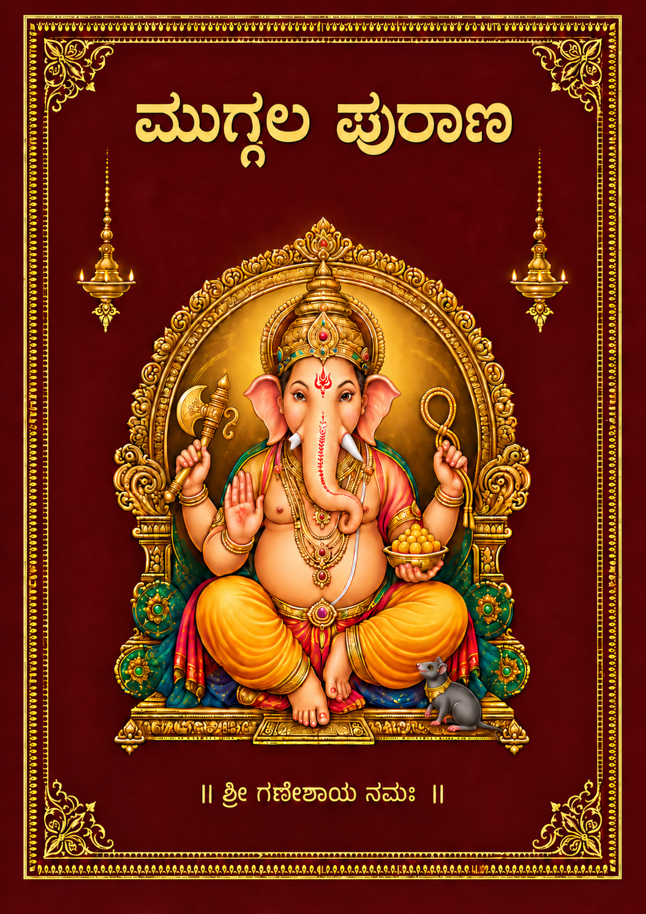
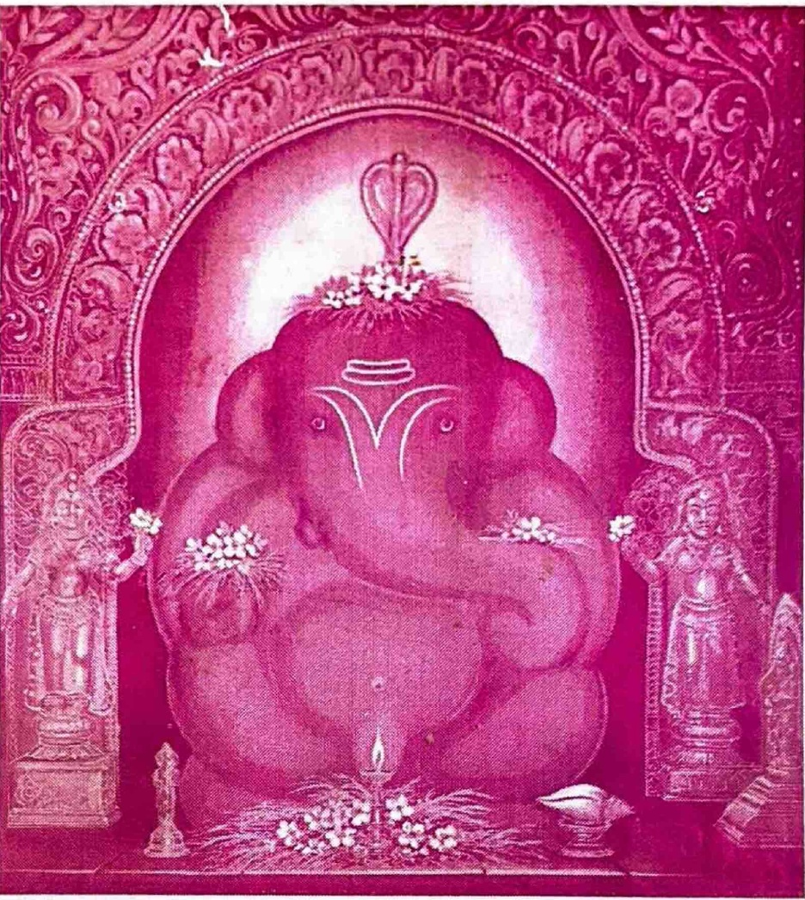
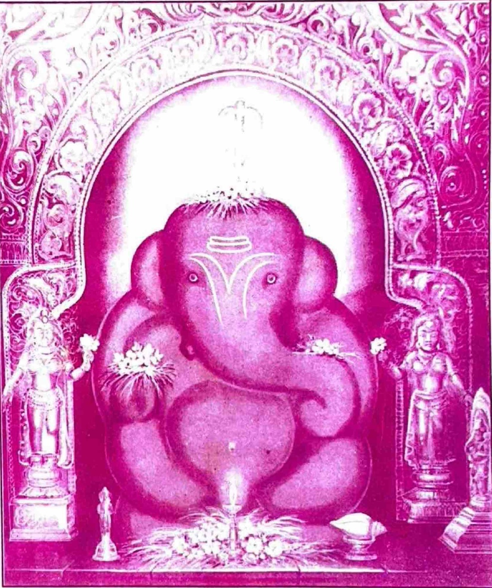
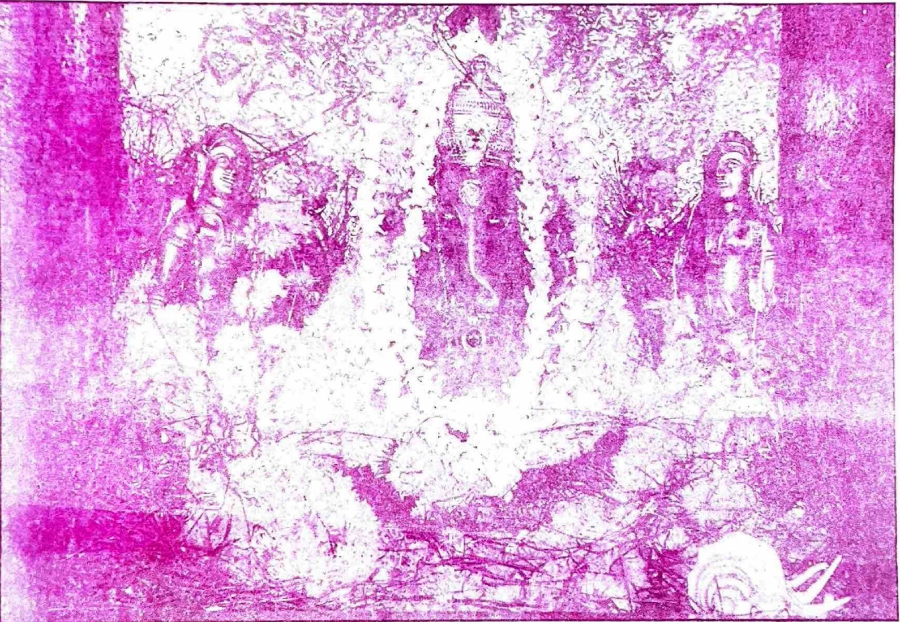
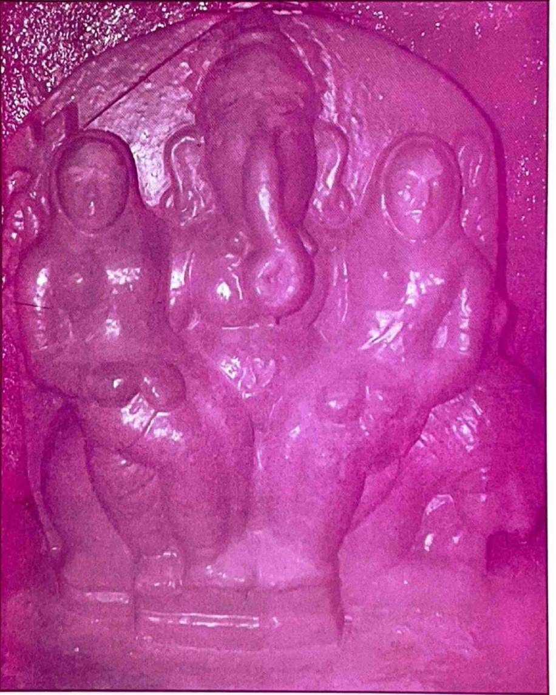
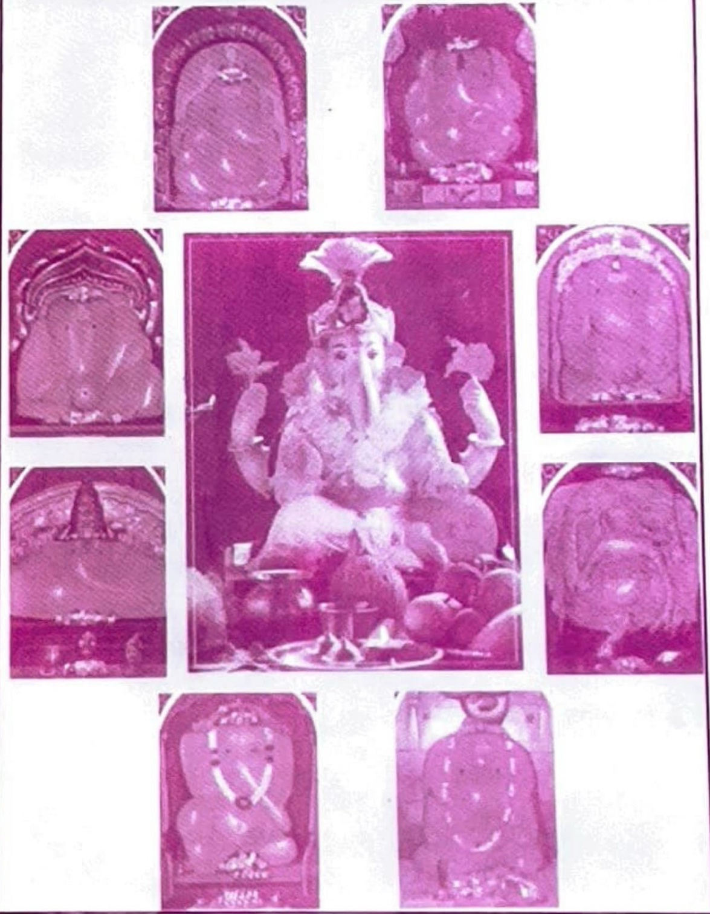

ಮುದ್ಗಲ ಪುರಾಣ

ಶ್ರೀ ಮುದ್ಗಲ ಪುರಾಣ
॥ ಶ್ರೀಭೂಸ್ವಾನಂದನಾಥೋ ಮಯೂರೇಶೋ ಜಯತಿ ॥

॥ ಸಿಂದೂರಲಿಪ್ತಸರ್ವಾಂಗಂ ಸಿದ್ಧಿಬುದ್ಧಿಸಮನ್ವಿತಮ್ ॥ ಭೂಸ್ವಾನಂದಸ್ಥಿತಂ ಧ್ಯಾಯೇ ಭಕ್ತಾನಾಂ ವರದಾಯಕಮ್ ॥
ಶ್ರೀ ಮುದ್ಗಲ ಪುರಾಣ
ಮಂಗಳವಚನಗಳು
॥ ಶ್ರವಣ ಮೂಲಮ್ ಮುದ್ಗಲ ಪುರಾಣ ಪವಿತ್ರಮ್ ॥
॥ ಮಂತ್ರ ಮೂಲಮ್ ಗಣೇಶ ನಾಮ ಪವಿತ್ರಮ್ ॥
॥ ಪೂಜ್ಯ ಮೂಲಮ್ ಗಣೇಶ ಪಾದ ಪವಿತ್ರಮ್ ॥
॥ ಧ್ಯಾನ ಮೂಲಮ್ ಗಣೇಶ ಮೂರ್ತೀ ಪವಿತ್ರಮ್ ॥
॥ ಮುಕ್ತೀ ಮೂಲಮ್ ಗಣೇಶ ಕೃಪಾಃ ಪವಿತ್ರಮ್ ॥
ವಿಷಯ ಸೂಚಿ
| ಅಧ್ಯಾಯ | ವಿಷಯ | ಮೂಲಪುಟ |
|---|---|---|
| ೪ | ಮಧುಕೈಟಭರ ವಧೆ | ೮-೧೧ |
| ೫ | ಸಾಯುಜ್ಯಪದದ ಪ್ರದಾನ | ೧೧-೧೩ |
| ೬ | ದಕ್ಷನ ಕನ್ಯಾವಂಶದ ವರ್ಣನೆ | ೧೪-೧೬ |
| ೭ | ಮೋಹ ಮತ್ತು ಮೋಕ್ಷದ ವರ್ಣನೆ | ೧೬-೧೮ |
| ೮ | ದತ್ತನ ಚರಿತ್ರೆ | ೧೮-೨೨ |
| ೯ | ಪ್ರಿಯವ್ರತನ ರಾಜ್ಯಪ್ರಾಪ್ತಿಯ ವರ್ಣನೆ | ೨೨-೨೪ |
| ೧೦ | ದ್ವೀಪಗಳ ವರ್ಣನೆ | ೨೪-೨೬ |
| ೧೧ | ಭೂಗೋಳದ ವರ್ಣನೆ | ೨೬-೨೮ |
| ೧೨ | ಸೂರ್ಯಮಂಡಲದ ವರ್ಣನೆ | ೨೮-೩೦ |
| ೧೩ | ನವಗ್ರಹಗಳ ಪ್ರಾಪ್ತಿಯ ವರ್ಣನೆ | ೩೦-೩೧ |
| ೧೪ | ಮೇಲಿನ ಲೋಕಗಳ ವರ್ಣನೆ | ೩೨-೩೩ |
| ೧೫ | ಏಳು ಪಾತಾಳಗಳ ವರ್ಣನೆ | ೩೩-೩೫ |
| ೧೬ | ಋಷಭನ ಚರಿತ್ರೆಯ ವರ್ಣನೆ | ೩೫-೩೭ |
| ೧೭ | ಪುಲಹನ ಉಪದೇಶದ ವರ್ಣನೆ | ೩೮-೪೦ |
| ೧೮ | ಭರತನು ಮೃಗದೇಹವನ್ನು ತ್ಯಜಿಸಿದ್ದು | ೪೦-೪೧ |
| ೧೯ | ಚೋರರ ವಧೆ | ೪೨-೪೩ |
ವಿಷಯ ಸೂಚಿ
| ಅಧ್ಯಾಯ | ವಿಷಯ | ಮೂಲಪುಟ |
|---|---|---|
| ೨೦ | ಜಡಭರತನು ಬ್ರಾಹ್ಮಣನಾಗಿ ವರ್ತಿಸಿದ್ದು | ೪೩-೪೫ |
| ೨೧ | ರಹೂಗಣನ ಸಿದ್ಧಿಪ್ರಾಪ್ತಿಯ ವರ್ಣನೆ | ೪೫-೪೬ |
| ೨೨ | ಜಡಭರತನ ಚರಿತ್ರೆ | ೪೬-೪೭ |
| ೨೩ | ಧ್ರುವನ ಚರಿತ್ರೆ | ೪೮-೪೯ |
| ೨೪ | ಧ್ರುವನಿಗೆ ಉಪದೇಶದ ವರ್ಣನೆ | ೪೯-೫೧ |
| ೨೫ | ಧ್ರುವನ ಚರಿತ್ರೆ | ೫೧-೫೪ |
| ೨೬ | ಪ್ರಾಚೀನಬರ್ಹಿಷನ ಚರಿತ್ರೆ | ೫೪-೫೬ |
| ೨೭ | ಪ್ರಚೇತಸರ ಚರಿತ್ರೆ | ೫೬-೫೭ |
| ೨೮ | ಕಶ್ಯಪನ ಸ್ತುತಿಯ ವರ್ಣನೆ | ೫೮-೫೯ |
| ೨೯ | ವಸಿಷ್ಠನಿಗೆ ಉಪದೇಶದ ವರ್ಣನೆ | ೬೦-೬೨ |
| ೩೦ | ಪರಾಶರನಿಗೆ ವರಪ್ರದಾನ | ೬೨-೬೩ |
| ೩೧ | ಪರಾಶರನ ಪುತ್ರೋತ್ಪತ್ತಿಯ ಕಥನ | ೬೪-೬೬ |
| ೩೨ | ಗಜಾಸುರನ ಸೇನೆಯ ವಧೆ | ೬೬-೬೮ |
| ೩೩ | ಗಜಾಸುರವಧೆಯ ಆಖ್ಯಾನ | ೬೯-೭೨ |
| ೩೪ | ವ್ಯಾಸನ ಮಾಹಾತ್ಮ್ಯ | ೭೨-೭೩ |
| ೩೫ | ಶುಕನ ಆಖ್ಯಾನ | ೭೩-೭೫ |
ವಿಷಯ ಸೂಚಿ
| ಅಧ್ಯಾಯ | ವಿಷಯ | ಮೂಲಪುಟ |
|---|---|---|
| ೩೬ | ಗೌತಮನ ಚರಿತ್ರೆ | ೭೫-೭೯ |
| ೩೭ | ನೃಸಿಂಹನ ಮಾಹಾತ್ಮ್ಯ | ೭೯-೮೦ |
| ೩೮ | ವಾರಾಹನ ಮಾಹಾತ್ಮ್ಯ | ೮೧-೮೧ |
| ೩೯ | ಚ್ಯವನನ ಉತ್ಪತ್ತಿಯ ಕಥನ | ೮೨-೮೪ |
| ೪೦ | ಅಗ್ನಿಯ ಮಾಹಾತ್ಮ್ಯ | ೮೪-೮೬ |
| ೪೧ | ಚ್ಯವನನ ತಪಸ್ಸಿನ ವರ್ಣನೆ | ೮೬-೮೮ |
| ೪೨ | ಭೃಗುವಿನ ಚರಿತ್ರೆ | ೮೯-೯೧ |
| ೪೩ | ಚ್ಯವನನ ಮಾಹಾತ್ಮ್ಯ | ೯೨-೯೨ |
| ೪೪ | ಮದಾಸುರನ ರಾಜ್ಯಾಭಿಷೇಕ | ೯೩-೯೪ |
| ೪೫ | ಮದಾಸುರನ ಸ್ವರ್ಗವಿಜಯ | ೯೫-೯೬ |
| ೪೬ | ತಾರಕಾಸುರನ ಸಾಮದ ವರ್ಣನೆ | ೯೭-೯೮ |
| ೪೭ | ಇಂದ್ರ ಮತ್ತು ತಾರಕನ ಭೇಟಿಯು | ೯೯-೧೦೧ |
| ೪೮ | ಇಂದ್ರನ ಸೋಲು | ೧೦೨-೧೦೩ |
| ೪೯ | ಶಿವ ಮೊದಲಾದವರ ಸೋಲು | ೧೦೩-೧೦೫ |
| ೫೦ | ಮದಾಸುರನ ವಿಜಯ | ೧೦೫-೧೦೭ |
| ೫೧ | ಸನತ್ಕುಮಾರ ಮತ್ತು ದೇವತೆಗಳ ಭೇಟಿಯು | ೧೦೭-೧೦೮ |
ವಿಷಯ ಸೂಚಿ
| ಅಧ್ಯಾಯ | ವಿಷಯ | ಮೂಲಪುಟ |
|---|---|---|
| ೫೨ | ಏಕದಂತನ ಪ್ರಾದುರ್ಭಾವ | ೧೦೯-೧೧೦ |
| ೫೩ | ಮದಾಸುರನ ಸೋಲು | ೧೧೧-೧೧೩ |
| ೫೪ | ಮದಾಸುರನ ಶಾಂತಿಪ್ರಾಪ್ತಿಯ ವರ್ಣನೆ | ೧೧೩-೧೧೪ |
| ೫೫ | ಮದಾಸುರನ ಚರಿತ್ರೆಯ ಸಮಾಪ್ತಿ | ೧೧೪-೧೧೬ |
| ೫೬ | ವಿನಾಯಕನು ಕಾಶಿಯನ್ನು ಪ್ರವೇಶಿಸಿದ್ದು | ೧೧೭-೧೧೯ |
| ೫೭ | ಶುಂಡೀಭಕ್ತಿಯ ವರ್ಣನೆ | ೧೧೯-೧೨೨ |
| ೫೮ | ಯಮಶಾಪದ ವರ್ಣನೆ | ೧೨೨-೧೨೪ |
| ೫೯ | ಢುಂಢಿಸಂಭವನ ಚರಿತ್ರೆ | ೧೨೪-೧೨೬ |
| ೬೦ | ಶುಂಡಿಯ ಬ್ರಾಹ್ಮಣಜನ್ಮದ ವರ್ಣನೆ | ೧೨೬-೧೨೯ |
| ೬೧ | ಶುಂಡಿಯ ಚರಿತ್ರೆ | ೧೨೯-೧೨೯ |
| ೬೨ | ವಿನಾಯಕನ ಚರಿತ್ರೆ | ೧೩೦-೧೩೨ |
| ೬೩ | ಶನಿಯ ಭೇಟಿಯು | ೧೩೨-೧೩೪ |
| ೬೪ | ವಿಷ್ಣು ಮೊದಲಾದವರ ವರ್ಣನೆ | ೧೩೪-೧೩೬ |
| ೬೫ | ಪುಷ್ಟಿಪತಿಯ ಆಖ್ಯಾನದಲ್ಲಿ ಅನಾಸಕ್ತನ ದ್ರವ್ಯಯತ್ನ | ೧೩೬-೧೩೮ |
| ೬೬ | ಕೃಷ್ಣ ಮತ್ತು ರಾಧೆಯ ಶಾಪದ ವರ್ಣನೆ | ೧೩೮-೧೪೧ |
| ೬೭ | ರಾಧಾಕೃಷ್ಣರ ಗೋಲೋಕಪ್ರಾಪ್ತಿಯ ವರ್ಣನೆ | ೧೪೧-೧೪೩ |
ವಿಷಯ ಸೂಚಿ
| ಅಧ್ಯಾಯ | ವಿಷಯ | ಮೂಲಪುಟ |
|---|---|---|
| ೬೮ | ಪುಷ್ಟಿಪತಿಯ ಚರಿತ್ರೆ | ೧೪೩-೧೪೪ |
ವಿಷಯ ಸೂಚಿ
| ಅಧ್ಯಾಯ | ವಿಷಯ | ಮೂಲಪುಟ |
|---|---|---|
| ೬೯ | ದೇವಹೂತಿ ಮತ್ತು ಕರ್ದಮರ ಶಾಂತಿಪ್ರಾಪ್ತಿಯ ವರ್ಣನೆ | ೧೪೪-೧೪೬ |
| ೭೦ | ಚಿಂತಾಮಣಿಯ ಹರಣ | ೧೪೭-೧೪೮ |
| ೭೧ | ಕಪಿಲನ ವರಪ್ರದಾನ | ೧೪೯-೧೫೧ |
| ೭೨ | ಗಣಾಸುರನ ವಧೆ | ೧೫೧-೧೫೩ |
| ೭೩ | ಗೃತ್ಸಮದ ಮತ್ತು ಮದಾಸುರರ ಸಂವಾದದ ಸಮಾಪ್ತಿ | ೧೫೩-೧೫೫ |
| ೭೪ | ಚರಿತ್ರೆಯ ಮಾಹಾತ್ಮ್ಯ | ೧೫೫-೧೫೬ |
| ಖಂಡ ೩ ಮಹೋದರ ಚರಿತ್ರೆ | ||
| ೧ | ರವಿಯು ಬಾಲಖಿಲ್ಯರಿಂದ ಶಾಪವನ್ನು ಪಡೆದದ್ದು | ೧-೨ |
| ೨ | ಸೂರ್ಯನಿಗೆ ಜೀವದಾನ | ೨-೫ |
| ೩ | ಸೂರ್ಯನ ವರಪ್ರದಾನ | ೫-೭ |
| ೪ | ಕಾಮನ ಚರಿತ್ರೆ | ೮-೧೦ |
| ೫ | ಸ್ಕಂದನ ಮಾಹಾತ್ಮ್ಯ | ೧೦-೧೩ |
| ೬ | ಮೋಹಾಸುರನ ರಾಜ್ಯಾಭಿಷೇಕದ ವರ್ಣನೆ | ೧೩-೧೪ |
| ೭ | ಮೋಹಾಸುರನ ವಿಜಯದ ವರ್ಣನೆ | ೧೫-೧೬ |
| ೮ | ದೇವರ್ಷಿಗಳ ವರಪ್ರದಾನ | ೧೭-೧೮ |
| ೯ | ಮೋಹಾಸುರನಿಗೆ ಜ್ಞಾನಪ್ರದಾನ | ೧೯-೨೧ |
| ೧೦ | ಮೋಹಾಸುರನ ಶಾಂತಿಯ ವರ್ಣನೆ | ೨೧-೨೩ |
ವಿಷಯ ಸೂಚಿ
| ಅಧ್ಯಾಯ | ವಿಷಯ | ಮೂಲಪುಟ |
|---|---|---|
| ಖಂಡ ೩ ಮಹೋದರ ಚರಿತ್ರೆ | ||
| ೧೧ | ಮಹೋದರನ ಅವತಾರದ ವರ್ಣನೆ | ೨೩-೨೫ |
| ೧೨ | ನರನಾರಾಯಣ ಮತ್ತು ವಿಷ್ಣುವಿನ ಸಂವಾದ | ೨೫-೨೭ |
| ೧೩ | ನರನಾರಾಯಣ ಮತ್ತು ಮಾರ್ಕಂಡೇಯರ ಭೇಟಿಯು | ೨೭-೨೯ |
| ೧೪ | ಮಾಯೆಯ ವರ್ಣನೆ | ೨೯-೩೦ |
| ೧೫ | ಕಾಲಗತಿಯ ವರ್ಣನೆ | ೩೦-೩೨ |
| ೧೬ | ಯುಗಧರ್ಮಗಳ ವರ್ಣನೆ | ೩೨-೩೩ |
| ೧೭ | ಕಲಿಯುಗದ ವರ್ಣನೆ | ೩೪-೩೬ |
| ೧೮ | ಬ್ರಹ್ಮಚರ್ಯಾಶ್ರಮದ ವರ್ಣನೆ | ೩೬-೩೭ |
| ೧೯ | ಆಶ್ರಮಧರ್ಮಗಳ ವರ್ಣನೆ | ೩೮-೪೦ |
| ೨೦ | ವರ್ಣಧರ್ಮಗಳ ವಿವರಣೆ | ೪೦-೪೩ |
| ೨೧ | ದೇವತೆಗಳು ಮತ್ತು ಪಿತೃಗಳ ಧರ್ಮಗಳ ವರ್ಣನೆ | ೪೩-೪೩ |
| ೨೨ | ಮಾಂಧಾತೃವಿನ ಚರಿತ್ರೆ | ೪೪-೪೬ |
| ೨೩ | ಅಂಬರೀಷನ ಚರಿತ್ರೆ | ೪೬-೪೭ |
| ೨೪ | ಮುಚುಕುಂದನ ಚರಿತ್ರೆ | ೪೮-೪೯ |
| ೨೫ | ಸಗರ ಮತ್ತು ಭಗೀರಥರ ಚರಿತ್ರೆ | ೪೯-೫೧ |
| ೨೬ | ರಾಮಚಂದ್ರನ ಚರಿತ್ರೆ | ೫೧-೫೬ |
ವಿಷಯ ಸೂಚಿ
| ಅಧ್ಯಾಯ | ವಿಷಯ | ಮೂಲಪುಟ |
|---|---|---|
| ಖಂಡ ೩ ಮಹೋದರ ಚರಿತ್ರೆ | ||
| ೨೭ | ಸೂರ್ಯ ಮತ್ತು ಬಾಲಖಿಲ್ಯರ ಸಂವಾದದ ಸಮಾಪ್ತಿ | ೫೬-೫೯ |
| ೨೮ | ಬುಧನ ಉತ್ಪತ್ತಿಯ ವರ್ಣನೆ | ೫೯-೬೧ |
| ೨೯ | ಪುರೂರವಸ್ಸಿನ ಜನ್ಮಕಥನ | ೬೧-೬೩ |
| ೩೦ | ನಹುಷನ ಚರಿತ್ರೆ | ೬೩-೬೬ |
| ೩೧ | ಯಯಾತಿಯ ಚರಿತ್ರೆ | ೬೭-೭೦ |
| ೩೨ | ಧನಕನ ವ್ರತೋಪದೇಶ | ೭೦-೭೨ |
| ೩೩ | ಕೃತವೀರ್ಯನ ತಪಸ್ಸಿನ ವರ್ಣನೆ | ೭೩-೭೪ |
| ೩೪ | ಕೃತವೀರ್ಯನ ಚರಿತ್ರೆ | ೭೪-೭೬ |
| ೩೫ | ಸಹಸ್ರಾರ್ಜುನನ ಜನನ | ೭೭-೭೯ |
| ೩೬ | ರೇಣುಕಾ ಮತ್ತು ಜಮದಗ್ನಿಗೆ ಜೀವಪ್ರದಾನ | ೭೯-೮೧ |
| ೩೭ | ಪರಶುರಾಮನ ಚರಿತ್ರೆಯ ಕಥನ | ೮೧-೮೪ |
| ೩೮ | ಹರಿವಂಶದ ವರ್ಣನೆ | ೮೪-೮೬ |
| ೩೯ | ವಿಷ್ಣುವಿನ ದೇಹಧಾರಣೆಯ ವರ್ಣನೆ | ೮೬-೮೮ |
| ೪೦ | ಮಾಂಡವ್ಯನ ಚರಿತ್ರೆ | ೮೮-೯೦ |
| ೪೧ | ಯುಧಿಷ್ಠಿರ ಮತ್ತು ಕೃಷ್ಣರ ಭೇಟಿಯು | ೯೧-೯೨ |
| ೪೨ | ಲಕ್ಷ್ಮೀನಾರಾಯಣರ ಸಂವಾದದ ವರ್ಣನೆ | ೯೨-೯೩ |
ವಿಷಯ ಸೂಚಿ
| ಅಧ್ಯಾಯ | ವಿಷಯ | ಮೂಲಪುಟ |
|---|---|---|
| ಖಂಡ ೩ ಮಹೋದರ ಚರಿತ್ರೆ | ||
| ೪೩ | ಮಹಾಲಕ್ಷ್ಮಿಯ ವರಪ್ರದಾನದ ವರ್ಣನೆ | ೯೪-೯೬ |
| ೪೪ | ಜ್ಞಾನಾರಿಯ ವಂಶಪ್ರಾಪ್ತಿಯ ವರ್ಣನೆ | ೯೬-೯೭ |
| ೪೫ | ಪೂರ್ಣಾನಂದನ ಅವತಾರದ ವರ್ಣನೆ | ೯೭-೯೮ |
| ೪೬ | ಬ್ರಹ್ಮಯಜ್ಞದ ವರ್ಣನೆ | ೯೯-೧೦೧ |
| ೪೭ | ಬ್ರಹ್ಮಯಜ್ಞದಲ್ಲಿ ವೇದನಿರ್ಣಯದ ವರ್ಣನೆ | ೧೦೧-೧೦೪ |
| ೪೮ | ಶುಕಶಿಷ್ಯ ಮತ್ತು ಸೂತನ ಸಂವಾದ | ೧೦೪-೧೦೬ |
| ೪೯ | ಸುಧೀಭಕ್ತಿಯ ವರ್ಣನೆ | ೧೦೬-೧೦೮ |
| ೫೦ | ಯುಧಿಷ್ಠಿರನ ಚರಿತ್ರೆ | ೧೦೮-೧೧೦ |
| ೫೧ | ಶ್ರವಣಫಲದ ವರ್ಣನೆ | ೧೧೧-೧೧೨ |
| ಖಂಡ ೪ ಗಜಾನನ ಚರಿತ್ರೆ | ||
| ೧ | ಚತುರ್ಥಿ ತಪಸ್ಸಿನ ವರ್ಣನೆ | ೧-೩ |
| ೨ | ಶುಕ್ಲಕೃಷ್ಣ ಚತುರ್ಥಿಗಳ ವರಪ್ರದಾನದ ವರ್ಣನೆ | ೩-೫ |
| ೩ | ವ್ರತಿಯ ಪ್ರತಿಪದಾದಿ ವ್ರತಗಳ ವರ್ಣನೆ | ೬-೭ |
| ೪ | ದಶರಥನ ವ್ರತೋಪದೇಶ | ೮-೯ |
| ೫ | ಚತುರ್ಥಿ ವಿವೇಕದ ವರ್ಣನೆ | ೯-೧೦ |
ವಿಷಯ ಸೂಚಿ
| ಅಧ್ಯಾಯ | ವಿಷಯ | ಮೂಲಪುಟ |
|---|---|---|
| ಖಂಡ ೪ ಗಜಾನನ ಚರಿತ್ರೆ | ||
| ೬ | ಚಂದ್ರದರ್ಶನದ ದೋಷನಿವಾರಣೆಯ ಚರಿತ್ರೆ | ೧೧-೨೦ |
| ೭ | ಭಾದ್ರಪದ ಶುಕ್ಲಚತುರ್ಥಿ ವ್ರತದ ವರ್ಣನೆ | ೨೦-೨೪ |
| ೮ | ಶುಕ್ಲ ಆಶ್ವಿನಚತುರ್ಥಿ ವ್ರತದ ವರ್ಣನೆ | ೨೪-೨೭ |
| ೯ | ಕಾರ್ತಿಕ ಶುಕ್ಲಚತುರ್ಥಿ ವ್ರತದ ವರ್ಣನೆ | ೨೭-೩೦ |
| ೧೦ | ಮಾರ್ಗಶೀರ್ಷ ಶುಕ್ಲಚತುರ್ಥಿ ವ್ರತದ ವರ್ಣನೆ | ೩೧-೩೨ |
| ೧೧ | ಪೌಷ ಶುಕ್ಲಚತುರ್ಥಿಯ ಮಾಹಾತ್ಮ್ಯದ ವರ್ಣನೆ | ೩೨-೩೬ |
| ೧೨ | ಮಾಘ ಶುಕ್ಲಚತುರ್ಥಿಯ ಮಾಹಾತ್ಮ್ಯದ ವರ್ಣನೆ | ೩೬-೩೮ |
| ೧೩ | ಫಾಲ್ಗುನ ಶುಕ್ಲಚತುರ್ಥಿಯ ಚರಿತ್ರೆಯ ವರ್ಣನೆ | ೩೯-೪೧ |
| ೧೪ | ಚೈತ್ರ ಶುಕ್ಲಚತುರ್ಥಿ ವ್ರತದ ವರ್ಣನೆ | ೪೧-೪೪ |
| ೧೫ | ವೈಶಾಖ ಶುಕ್ಲಚತುರ್ಥಿಯ ಮಾಹಾತ್ಮ್ಯದ ವರ್ಣನೆ | ೪೪-೪೭ |
| ೧೬ | ಜ್ಯೇಷ್ಠ ಶುಕ್ಲಚತುರ್ಥಿಯ ಮಾಹಾತ್ಮ್ಯದ ವರ್ಣನೆ | ೪೭-೪೯ |
| ೧೭ | ಆಷಾಢ ಶುಕ್ಲಚತುರ್ಥಿಯ ಚರಿತ್ರೆಯ ವರ್ಣನೆ | ೫೦-೫೨ |
| ೧೮ | ಶ್ರಾವಣ ಶುಕ್ಲಚತುರ್ಥಿ ವ್ರತದ ಕಥನ | ೫೨-೫೫ |
| ೧೯ | ಮಲಮಾಸದ ಶುಕ್ಲಚತುರ್ಥಿಯ ಚರಿತ್ರೆಯ ವರ್ಣನೆ | ೫೫-೫೭ |
| ೨೦ | ಮಾಘ ಕೃಷ್ಣಚತುರ್ಥಿಯ ಮಾಹಾತ್ಮ್ಯದ ವರ್ಣನೆ | ೫೭-೬೧ |
| ೨೧ | ಫಾಲ್ಗುನ ಕೃಷ್ಣಚತುರ್ಥಿಯ ವರ್ಣನೆ | ೬೧-೬೩ |
ವಿಷಯ ಸೂಚಿ
| ಅಧ್ಯಾಯ | ವಿಷಯ | ಮೂಲಪುಟ |
|---|---|---|
| ಖಂಡ ೪ ಗಜಾನನ ಚರಿತ್ರೆ | ||
| ೨೨ | ಚೈತ್ರ ಕೃಷ್ಣಚತುರ್ಥಿಯ ಚರಿತ್ರೆಯ ವರ್ಣನೆ | ೬೩-೬೫ |
| ೨೩ | ವೈಶಾಖ ಕೃಷ್ಣಚತುರ್ಥಿಯ ಚರಿತ್ರೆಯ ವರ್ಣನೆ | ೬೫-೬೭ |
| ೨೪ | ಜ್ಯೇಷ್ಠ ಕೃಷ್ಣಚತುರ್ಥಿಯ ವರ್ಣನೆ | ೬೮-೭೦ |
| ೨೫ | ಆಷಾಢ ಕೃಷ್ಣಚತುರ್ಥಿಯ ವರ್ಣನೆ | ೭೦-೭೨ |
| ೨೬ | ಶ್ರಾವಣ ಕೃಷ್ಣಚತುರ್ಥಿಯ ಮಾಹಾತ್ಮ್ಯದ ವರ್ಣನೆ | ೭೨-೭೪ |
| ೨೭ | ಭಾದ್ರಪದ ಕೃಷ್ಣಚತುರ್ಥಿಯ ಮಾಹಾತ್ಮ್ಯದ ವರ್ಣನೆ | ೭೫-೭೭ |
| ೨೮ | ಆಶ್ವಿನ ಕೃಷ್ಣಚತುರ್ಥಿಯ ಮಾಹಾತ್ಮ್ಯದ ವರ್ಣನೆ | ೭೮-೮೦ |
| ೨೯ | ಕಾರ್ತಿಕ ಕೃಷ್ಣಚತುರ್ಥಿಯ ಮಾಹಾತ್ಮ್ಯದ ವರ್ಣನೆ | ೮೦-೮೩ |
| ೩೦ | ಮಾರ್ಗಶೀರ್ಷ ಕೃಷ್ಣಚತುರ್ಥಿಯ ಮಾಹಾತ್ಮ್ಯದ ವರ್ಣನೆ | ೮೩-೮೫ |
| ೩೧ | ಪೌಷ ಕೃಷ್ಣಚತುರ್ಥಿಯ ಮಾಹಾತ್ಮ್ಯದ ವರ್ಣನೆ | ೮೫-೮೭ |
| ೩೨ | ಮಲಮಾಸದ ಕೃಷ್ಣಪಕ್ಷ ಚತುರ್ಥಿಯ ವರ್ಣನೆ | ೮೮-೯೦ |
| ೩೩ | ಶಮೀಮೂಲದಲ್ಲಿ ಚತುರ್ಥಿವ್ರತಾಚರಣೆಯ ವರ್ಣನೆ | ೯೦-೯೧ |
| ೩೪ | ವಸಿಷ್ಠ ಮತ್ತು ರಾಜನ ಸಂವಾದದ ಸಮಾಪ್ತಿ | ೯೨-೯೩ |
| ೩೫ | ಚತುರ್ಥಿ ಉದ್ಯಾಪನೆಯ ನಿರೂಪಣೆ | ೯೩-೯೪ |
| ೩೬ | ಲೋಭಾಸುರನ ವರಪ್ರಾಪ್ತಿಯ ವರ್ಣನೆ | ೯೪-೯೬ |
| ೩೭ | ಲೋಭಾಸುರನ ಸೈನ್ಯಪ್ರಾಪ್ತಿಯ ವರ್ಣನೆ | ೯೬-೯೮ |
ವಿಷಯ ಸೂಚಿ
| ಅಧ್ಯಾಯ | ವಿಷಯ | ಮೂಲಪುಟ |
|---|---|---|
| ಖಂಡ ೪ ಗಜಾನನ ಚರಿತ್ರೆ | ||
| ೩೮ | ವಿಷ್ಣುವಿನ ಸೋಲು | ೯೮-೧೦೦ |
| ೩೯ | ಲೋಭಾಸುರನ ಬ್ರಹ್ಮಾಂಡವಿಜಯ | ೧೦೦-೧೦೨ |
| ೪೦ | ಗಜಾನನನ ಪ್ರಾದುರ್ಭಾವ | ೧೦೨-೧೦೪ |
| ೪೧ | ಶುಕನ ಉಪದೇಶದ ವರ್ಣನೆ | ೧೦೪-೧೦೭ |
| ೪೨ | ಲೋಭಾಸುರನ ಶಾಂತಿಯ ವರ್ಣನೆ | ೧೦೭-೧೦೮ |
| ೪೩ | ದೇವತೆಗಳು ಮತ್ತು ಮುನಿಗಳು ಮಾಡಿದ ಸ್ತುತಿಯ ವರ್ಣನೆ | ೧೦೯-೧೧೧ |
| ೪೪ | ಸಿದ್ಧ ಮತ್ತು ಶಿವನ ಭೇಟಿಯು | ೧೧೧-೧೧೩ |
| ೪೫ | ಶಿವವಿಚಾರಣೆಯ ಪ್ರಸ್ತಾವನೆ | ೧೧೩-೧೧೫ |
| ೪೬ | ಶಕ್ತಿಕಮಲದ ಮಾಹಾತ್ಮ್ಯದ ವರ್ಣನೆ | ೧೧೫-೧೧೭ |
| ೪೭ | ಗಣೇಶಭಕ್ತಿಯ ಅಧೀನತೆಯ ವರ್ಣನೆ | ೧೧೭-೧೨೦ |
| ೪೮ | ಸಿಂಧುವಿನ ವಧೆ | ೧೨೦-೧೨೨ |
| ೪೯ | ಗಣೇಶನ ನಿರ್ಮಾಲ್ಯದ ಮಾಹಾತ್ಮ್ಯದ ವರ್ಣನೆ | ೧೨೨-೧೨೩ |
| ೫೦ | ವಿಘ್ನಾಸುರನು ಆಶ್ರಮಕ್ಕೆ ಹೋದದ್ದು | ೧೨೪-೧೨೫ |
| ೫೧ | ವಿಘ್ನರಾಜನ ಅವತಾರದ ವರ್ಣನೆ | ೧೨೬-೧೨೮ |
| ೫೨ | ಗಜಾನನನ ಚರಿತ್ರೆಯ ಮಾಹಾತ್ಮ್ಯದ ವರ್ಣನೆ | ೧೨೮-೧೨೯ |
| ಖಂಡ ೫ ಲಂಬೋದರ ಚರಿತ್ರೆ | ||
| ೧ | ಅಸಿತ ಮತ್ತು ನೈಧ್ರುವರ ಸಂವಾದದಲ್ಲಿ ಮೂರು ವಿಧದ ಯಜ್ಞಗಳ ವರ್ಣನೆ | ೧-೩ |
ವಿಷಯ ಸೂಚಿ
| ಅಧ್ಯಾಯ | ವಿಷಯ | ಮೂಲಪುಟ |
|---|---|---|
| ಖಂಡ ೫ ಲಂಬೋದರ ಚರಿತ್ರೆ | ||
| ೨ | ಮತ್ಸರಾಸುರನ ವಧೆ | ೩-೫ |
| ೩ | ಕ್ರೋಧಾಸುರನ ರಾಜ್ಯಪ್ರಾಪ್ತಿಯ ವರ್ಣನೆ | ೫-೭ |
| ೪ | ಕ್ರೋಧಾಸುರನ ಬ್ರಹ್ಮಾಂಡವಿಜಯ | ೭-೯ |
| ೫ | ದೇವತೆಗಳ ವರಪ್ರದಾನ | ೯-೧೧ |
| ೬ | ದೇವಾಸುರಯುದ್ಧದ ವರ್ಣನೆ | ೧೧-೧೩ |
| ೭ | ಕ್ರೋಧಾಸುರನ ಭೇಟಿಯು | ೧೩-೧೫ |
| ೮ | ಕ್ರೋಧಾಸುರನ ಶಾಂತಿಯ ವರ್ಣನೆ | ೧೫-೧೭ |
| ೯ | ದೇವರ್ಷಿಗಳು ಮಾಡಿದ ಲಂಬೋದರಸ್ತುತಿಯ ವರ್ಣನೆ | ೧೭-೧೯ |
| ೧೦ | ವತ್ಸರ ಮತ್ತು ಅಸಿತರಿಗೆ ಶಾಂತಿಯ ವರ್ಣನೆ | ೨೦-೨೧ |
| ೧೧ | ಲಂಬೋದರನ ಬ್ರಹ್ಮಸ್ವರೂಪದ ವರ್ಣನೆ | ೨೨-೨೨ |
| ೧೨ | ಶಕ್ತಿಸ್ವರೂಪದ ಅವತಾರದ ವರ್ಣನೆ | ೨೩-೨೫ |
| ೧೩ | ಶಕ್ತಿಯ ವರಪ್ರದಾನ | ೨೬-೨೮ |
| ೧೪ | ಶಿವ ಮತ್ತು ವಿಷ್ಣುವಿನ ಗರ್ವಹರಣ | ೨೯-೩೧ |
| ೧೫ | ಶಕ್ತಿವಿನಾಯಕನ ಮಾಹಾತ್ಮ್ಯ | ೩೧-೩೩ |
| ೧೬ | ಶೋಭಿತನ ದುಃಖದ ವರ್ಣನೆ | ೩೩-೩೫ |
| ೧೭ | ಶೈಲನಿಗೆ ಯೋಗೋಪದೇಶದ ವರ್ಣನೆ | ೩೫-೩೭ |
ವಿಷಯ ಸೂಚಿ
| ಅಧ್ಯಾಯ | ವಿಷಯ | ಮೂಲಪುಟ |
|---|---|---|
| ಖಂಡ ೫ ಲಂಬೋದರ ಚರಿತ್ರೆ | ||
| ೧೮ | ಶೈಲನ ಆಖ್ಯಾನದ ವರ್ಣನೆ | ೩೭-೪೦ |
| ೧೯ | ಮೂಷಕ ಮತ್ತು ದೇವತೆಗಳ ಭೇಟಿಯು | ೪೦-೪೨ |
| ೨೦ | ಮೂಷಕ ಮತ್ತು ಮಾಯಾಕಾರಾಸುರರ ಭೇಟಿಯು | ೪೩-೪೪ |
| ೨೧ | ಮೂಷಕಾವತಾರದ ಚರಿತ್ರೆ | ೪೫-೪೭ |
| ೨೨ | ಶಕ್ತಿಪುತ್ರನ ಚರಿತ್ರೆ | ೪೭-೪೮ |
| ೨೩ | ಗಾಣಪತ್ಯರ ದೀಕ್ಷೆಯ ವರ್ಣನೆ | ೪೮-೫೦ |
| ೨೪ | ಗಾಣಪತ್ಯರ ಸ್ವರೂಪದ ವರ್ಣನೆ | ೫೦-೫೩ |
| ೨೫ | ಶಮೀ ಮತ್ತು ಮಂದಾರರ ವರಪ್ರದಾನ | ೫೩-೫೬ |
| ೨೬ | ಶಮೀಮಂದಾರಗಳ ಸ್ಪರ್ಶಮಹಿಮೆಯ ವರ್ಣನೆ | ೫೬-೫೮ |
| ೨೭ | ದೂರ್ವೆಯ ಉತ್ಪತ್ತಿಯ ಕಥನ | ೫೯-೬೧ |
| ೨೮ | ದೂರ್ವಾಪತ್ರದ ಸ್ಪರ್ಶಮಹಿಮೆಯ ವರ್ಣನೆ | ೬೧-೬೨ |
| ೨೯ | ತ್ರಿಶಿರಸ್ಸಿನ ಚರಿತ್ರೆಯ ವರ್ಣನೆ | ೬೩-೬೬ |
| ೩೦ | ದೂರ್ವೆಯ ಮಾಹಾತ್ಮ್ಯದ ವರ್ಣನೆ | ೬೬-೭೪ |
| ೩೧ | ತುಳಸೀವರ್ಜನೆಯ ಕಾರಣ | ೭೫-೭೭ |
| ೩೨ | ತುಳಸಿಯ ವರಪ್ರದಾನ | ೭೭-೭೮ |
| ೩೩ | ತುಳಸಿಯ ಸಮರ್ಪಣವರ್ಜನೆಯ ವರ್ಣನೆ | ೭೯-೮೦ |
ವಿಷಯ ಸೂಚಿ
| ಅಧ್ಯಾಯ | ವಿಷಯ | ಮೂಲಪುಟ |
|---|---|---|
| ಖಂಡ ೫ ಲಂಬೋದರ ಚರಿತ್ರೆ | ||
| ೩೪ | ಕರ್ಮಾಂಗದನ ಚರಿತ್ರೆ | ೮೦-೮೨ |
| ೩೫ | ಗೃತ್ಸಮದ ಮತ್ತು ಗಣೇಶನ ಭೇಟಿಯು | ೮೩-೮೪ |
| ೩೬ | ಗೃತ್ಸಮದನ ವರಪ್ರದಾನ | ೮೫-೮೬ |
| ೩೭ | ಗೃತ್ಸಮದನ ನಿತ್ಯಕರ್ಮಗಳ ವರ್ಣನೆ | ೮೭-೮೮ |
| ೩೮ | ಗೃತ್ಸಮದನು ಹೇಳಿದ ಬ್ರಾಹ್ಮಣವೇದಪೂಜೆಯ ಕಥನ | ೮೮-೯೨ |
| ೩೯ | ಗೃತ್ಸಮದನು ಹೇಳಿದ ಗಣೇಶಪೂಜೆಯ ವರ್ಣನೆ | ೯೩-೯೫ |
| ೪೦ | ಸ್ವಾನಂದಲೋಕದ ವರ್ಣನೆ | ೯೬-೯೮ |
| ೪೧ | ಸ್ವಾನಂದಸ್ಥಿತಿಯ ವರ್ಣನೆ | ೯೯-೧೦೧ |
| ೪೨ | ಚಿಂತಾಮಣಿಯ ಚತುರ್ಥಿವ್ರತದ ವರ್ಣನೆ | ೧೦೨-೧೦೩ |
| ೪೩ | ಭಕ್ತಿಯ ಭೇಟಿಯ ವರ್ಣನೆ | ೧೦೪-೧೦೫ |
| ೪೪ | ಜ್ಞಾನ ಮತ್ತು ಶಕ್ತಿಯ ಸ್ತುತಿವಿಧಿಯ ವರ್ಣನೆ | ೧೦೬-೧೦೮ |
| ೪೫ | ಲಂಬೋದರ ಚರಿತ್ರೆಯ ಶ್ರವಣಮಾಹಾತ್ಮ್ಯದ ವರ್ಣನೆ | ೧೦೮-೧೧೦ |
| ಖಂಡ ೬ ವಿಕಟ ಚರಿತ್ರೆ | ||
| ೧ | ಶಕ್ತಿಯ ಆಖ್ಯಾನದ ವರ್ಣನೆ | ೧-೩ |
| ೨ | ಶಿವ ಮತ್ತು ವಿಷ್ಣುವಿನ ವರಪ್ರದಾನ | ೩-೫ |
| ೩ | ಕಾಮಾಸುರನ ರಾಜ್ಯಪ್ರಾಪ್ತಿಯ ವರ್ಣನೆ | ೬-೭ |
| ೪ | ಕಾಮಾಸುರನ ವಿಜಯದ ವರ್ಣನೆ | ೮-೯ |
ವಿಷಯ ಸೂಚಿ
| ಅಧ್ಯಾಯ | ವಿಷಯ | ಮೂಲಪುಟ |
|---|---|---|
| ಖಂಡ ೬ ವಿಕಟ ಚರಿತ್ರೆ | ||
| ೫ | ಮುದ್ಗಲ ಮತ್ತು ದೇವತೆಗಳ ಭೇಟಿಯು | ೧೦-೧೧ |
| ೬ | ಭುಶುಂಡಿ ಮತ್ತು ಪಂಚದೇವತೆಗಳ ಭೇಟಿಯು | ೧೨-೧೩ |
| ೭ | ಸ್ವಾನಂದಕ್ಷೇತ್ರದ ಸ್ವರೂಪದ ವರ್ಣನೆ | ೧೪-೧೬ |
| ೮ | ವಿವಿಧ ಕ್ಷೇತ್ರಗಳ ವೈಲಕ್ಷಣ್ಯದ ವರ್ಣನೆ | ೧೬-೧೯ |
| ೯ | ಮಯೂರೇಶ್ವರನ ವರಪ್ರಾಪ್ತಿಯ ವರ್ಣನೆ | ೧೯-೨೧ |
| ೧೦ | ದ್ವಾರರಹಸ್ಯದ ವರ್ಣನೆ | ೨೧-೨೨ |
| ೧೧ | ಕ್ಷೇತ್ರದ ಪ್ರಮಾಣದ ವರ್ಣನೆ | ೨೩-೨೫ |
| ೧೨ | ಮಯೂರೇಶ್ವರಕ್ಷೇತ್ರದ ವಾಸದ ಶುಭಾಶುಭಗಳ ವರ್ಣನೆ | ೨೫-೨೮ |
| ೧೩ | ಮಯೂರೇಶ್ವರನಾಮದ ದಂಡಕಾರಣ್ಯದ ವರಪ್ರದಾನ | ೨೮-೩೦ |
| ೧೪ | ದ್ವಾರಯಾತ್ರೆಯ ವರ್ಣನೆ | ೩೧-೩೩ |
| ೧೫ | ದೇವತೆಗಳು ಮತ್ತು ಅಗಸ್ತ್ಯನ ದ್ವಾರಯಾತ್ರೆಯ ಮಾಹಾತ್ಮ್ಯ | ೩೩-೩೭ |
| ೧೬ | ಗರ್ಭಾಗಾರಯಾತ್ರೆಯ ಮಾಹಾತ್ಮ್ಯದ ವರ್ಣನೆ | ೩೮-೪೦ |
| ೧೭ | ಮಯೂರೇಶ್ವರಕ್ಷೇತ್ರದ ಶ್ರವಣ ಮತ್ತು ಪ್ರಮಾಣದ ಮಾಹಾತ್ಮ್ಯದ ವರ್ಣನೆ | ೪೧-೪೩ |
| ೧೮ | ಗರ್ಭಾಗಾರದ ಪ್ರಮಾಣದ ವರ್ಣನೆ | ೪೩-೪೪ |
| ೧೯ | ಕ್ಷೇತ್ರವಾಸದ ಚರಿತ್ರೆಯ ವರ್ಣನೆ | ೪೫-೫೫ |
| ೨೦ | ಮಲಯನ ಯಾತನೆಯ ಕಥನ | ೫೫-೫೭ |
ವಿಷಯ ಸೂಚಿ
| ಅಧ್ಯಾಯ | ವಿಷಯ | ಮೂಲಪುಟ |
|---|---|---|
| ಖಂಡ ೬ ವಿಕಟ ಚರಿತ್ರೆ | ||
| ೨೧ | ಯಾತ್ರಾರ್ಥವಾಗಿ ಪ್ರವೇಶಿಸುವ ಫಲಾದಿಗಳ ವರ್ಣನೆ | ೫೮-೬೧ |
| ೨೨ | ಕ್ಷೇತ್ರಸಂನ್ಯಾಸದ ವರ್ಣನೆ | ೬೧-೬೭ |
| ೨೩ | ಗಣೇಶಕುಂಡದ ಚರಿತ್ರೆಯ ವರ್ಣನೆ | ೬೭-೬೯ |
| ೨೪ | ಬ್ರಹ್ಮಕಮಂಡಲು ಮತ್ತು ಆದ್ಯತೀರ್ಥಾದಿಗಳ ವರ್ಣನೆ | ೭೦-೭೩ |
| ೨೫ | ಬ್ರಹ್ಮಕಮಂಡಲುತೀರ್ಥದ ಚರಿತ್ರೆ | ೭೩-೭೮ |
| ೨೬ | ಸಪ್ತತೀರ್ಥಗಳ ವರ್ಣನೆ | ೭೮-೭೯ |
| ೨೭ | ಬ್ರಹ್ಮಕಮಂಡಲುತೀರ್ಥದ ವರ್ಣನೆ | ೮೦-೮೪ |
| ೨೮ | ನಾಮಕ್ಷೇತ್ರದ ಪ್ರಶಂಸೆ | ೮೪-೮೬ |
| ೨೯ | ಭುಶುಂಡಿ ಮತ್ತು ದೇವತೆಗಳ ಸಂವಾದದ ಸಮಾಪ್ತಿಯ ವರ್ಣನೆ | ೮೬-೮೭ |
| ೩೦ | ಮಯೂರೇಶ್ವರಕ್ಷೇತ್ರದ ಮಾಹಾತ್ಮ್ಯದ ಸಮಾಪ್ತಿಯ ವರ್ಣನೆ | ೮೮-೯೦ |
| ೩೧ | ವಿಕಟನ ಪ್ರಾದುರ್ಭಾವ | ೯೧-೯೩ |
| ೩೨ | ದೇವತೆಗಳು ಮತ್ತು ದೈತ್ಯರ ಭೇಟಿಯು | ೯೩-೯೪ |
| ೩೩ | ಕಾಮಾಸುರನ ಪುತ್ರರ ವಧೆ | ೯೪-೯೭ |
| ೩೪ | ಕಾಮಾಸುರನ ವಿಜಯದ ವರ್ಣನೆ | ೯೭-೯೯ |
| ೩೫ | ಕಾಮಾಸುರನ ಶಾಂತಿಯ ವರ್ಣನೆ | ೯೯-೧೦೧ |
ವಿಷಯ ಸೂಚಿ
| ಅಧ್ಯಾಯ | ವಿಷಯ | ಮೂಲಪುಟ |
|---|---|---|
| ಖಂಡ ೬ ವಿಕಟ ಚರಿತ್ರೆ | ||
| ೩೬ | ವಿಕಟಾವತಾರ ಚರಿತ್ರೆಯ ಸಮಾಪ್ತಿಯ ವರ್ಣನೆ | ೧೦೩-೧೦೪ |
| ೩೭ | ಗುಣೇಶನ ಅವತಾರದ ವರ್ಣನೆ | ೧೦೫-೧೦೭ |
| ೩೮ | ಭಾಲಚಂದ್ರನ ವರ್ಣನೆ | ೧೦೭-೧೧೦ |
| ೩೯ | ಕಮಲಾಸುರನ ವಧೆ | ೧೧೦-೧೧೨ |
| ೪೦ | ವಿಷ್ಣು ಮೊದಲಾದವರು ಪರಮೇಶನನ್ನು ಕಂಡದ್ದು | ೧೧೩-೧೧೫ |
| ೪೧ | ಮಯೂರೇಶನ ಚರಿತ್ರೆಯ ವರ್ಣನೆ | ೧೧೬-೧೧೮ |
| ೪೨ | ಸೂರ್ಯಾವತಾರದ ಚರಿತ್ರೆ | ೧೧೯-೧೨೦ |
| ೪೩ | ಭಾನು ವಿನಾಯಕನ ಚರಿತ್ರೆ | ೧೨೦-೧೨೨ |
| ೪೪ | ವಿಕಟನ ವರಪ್ರದಾನದ ಚರಿತ್ರೆ | ೧೨೩-೧೨೫ |
| ೪೫ | ವಿಕಟ ಚರಿತ್ರೆಯ ಸಮಾಪ್ತಿ | ೧೨೫-೧೨೬ |
| ಖಂಡ ೭ ವಿಘ್ನರಾಜ ಚರಿತ್ರೆ | ||
| ೧ | ಚಿಂತಾಶೋಕದ ವರ್ಣನೆ | ೧-೩ |
| ೨ | ಶಿವ ಮತ್ತು ಪಾರ್ವತಿಯ ಭೇಟಿಯು | ೩-೫ |
| ೩ | ಮಮಾಸುರನ ವರಪ್ರದಾನ | ೫-೮ |
| ೪ | ಶಿವ ಮತ್ತು ಮಮಾಸುರನ ಭೇಟಿಯು | ೮-೯ |
| ೫ | ಮಮಾಸುರನ ರಾಜ್ಯಶೋಭೆಯ ವರ್ಣನೆ | ೧೦-೧೨ |
| ೬ | ವಿಘ್ನರಾಜನ ಪ್ರಾದುರ್ಭಾವ | ೧೨-೧೪ |
ವಿಷಯ ಸೂಚಿ
| ಅಧ್ಯಾಯ | ವಿಷಯ | ಮೂಲಪುಟ |
|---|---|---|
| ಖಂಡ ೭ ವಿಘ್ನರಾಜ ಚರಿತ್ರೆ | ||
| ೭ | ಮಮಾಸುರನ ಗರ್ವಹರಣ | ೧೪-೧೬ |
| ೮ | ಮಮಾಸುರನ ಶಾಂತಿಯ ವರ್ಣನೆ | ೧೭-೧೮ |
| ೯ | ಮಮಾಸುರನ ಶಾಂತಿಯೊಂದಿಗೆ ವಿಘ್ನೇಶ ಚರಿತ್ರೆಯ ಕ್ಷೇತ್ರವರ್ಣನೆ | ೧೮-೨೧ |
| ೧೦ | ವಿಷ್ಣುವಿನ ಅವತಾರದ ವರ್ಣನೆ | ೨೧-೨೩ |
| ೧೧ | ಲಕ್ಷ್ಮೀವಿನಾಯಕನ ಚರಿತ್ರೆಯ ವರ್ಣನೆ | ೨೩-೨೬ |
| ೧೨ | ಶೂರ್ಪಕರ್ಣನ ಅವತಾರದ ವರ್ಣನೆ | ೨೬-೨೮ |
| ೧೩ | ದಕ್ಷನ ಗೀತೆಯ ವರ್ಣನೆ | ೨೮-೩೧ |
| ೧೪ | ದಿತಿಯ ವರಪ್ರದಾನ | ೩೧-೩೩ |
| ೧೫ | ಚತುರ್ಭುಜ ಅವತಾರದ ವಿಕ್ರಮದ ವರ್ಣನೆ | ೩೩-೩೫ |
| ೧೬ | ವಿಘ್ನರಾಜ ಚರಿತ್ರೆಯ ಮಾಹಾತ್ಮ್ಯದ ವರ್ಣನೆ | ೩೬-೩೭ |
| ಖಂಡ ೮ ಧೂಮ್ರವರ್ಣ ಚರಿತ್ರೆ | ||
| ೧ | ಅಹಂಕಾರದ ಉತ್ಪತ್ತಿಯ ವರ್ಣನೆ | ೧-೩ |
| ೨ | ಅಹಮಾಸುರನ ರಾಜ್ಯಪ್ರಾಪ್ತಿಯ ವರ್ಣನೆ | ೩-೪ |
| ೩ | ಅಹಮಾಸುರನ ಬ್ರಹ್ಮಾಂಡವಿಜಯ | ೫-೭ |
| ೪ | ದೇವತೆಗಳು ಮತ್ತು ಮುನಿಗಳ ವರಪ್ರದಾನ | ೭-೯ |
| ೫ | ಅಹಂಕಾರದ ಸೋಲು | ೧೦-೧೨ |
| ೬ | ಅಹಂಕಾರಾಸುರನಿಗೆ ಜ್ಞಾನೋಪದೇಶ | ೧೨-೧೫ |
ವಿಷಯ ಸೂಚಿ
| ಅಧ್ಯಾಯ | ವಿಷಯ | ಮೂಲಪುಟ |
|---|---|---|
| ಖಂಡ ೮ ಧೂಮ್ರವರ್ಣ ಚರಿತ್ರೆ | ||
| ೭ | ಅಹಂಕಾರನ ಶಾಂತಿಸ್ವರೂಪದ ವರ್ಣನೆ | ೧೬-೧೭ |
| ೮ | ಧೂಮ್ರವರ್ಣನ ಅವತಾರದ ಸಮಾಪ್ತಿ | ೧೮-೨೦ |
| ೯ | ಧೂಮ್ರವರ್ಣನ ಮಹಿಮೆಯ ವರ್ಣನೆ | ೨೦-೨೧ |
| ೧೦ | ಶಿವನ ಆತ್ಮಕವಾದ ಅವತಾರದ ಚರಿತ್ರೆ | ೨೨-೨೪ |
| ೧೧ | ಪಾರ್ವತೀ ಮತ್ತು ಗಣೇಶನ ಚರಿತ್ರೆ | ೨೪-೨೬ |
| ೧೨ | ಗುಣೇಶನ ಅವತಾರದ ವರ್ಣನೆ | ೨೭-೨೮ |
| ೧೩ | ವಾಣಾಸುರನಿಗೆ ವರಪ್ರದಾನ | ೨೯-೩೧ |
| ೧೪ | ವಾಣಾಸುರನ ವರ್ಣನೆಯಲ್ಲಿ ನಂದಿಯ ಚರಿತ್ರೆ | ೩೧-೩೪ |
| ೧೫ | ಬುದ್ಧನ ಅವತಾರದ ವರ್ಣನೆ | ೩೪-೩೬ |
| ೧೬ | ಧೂಮ್ರವರ್ಣನು ಕಲಿಯನ್ನು ಜಯಿಸಿದ ವರ್ಣನೆ | ೩೭-೩೮ |
| ೧೭ | ಯುಗಗಳ ವರಪ್ರದಾನ | ೩೯-೪೧ |
| ೧೮ | ಯುಗಗಳ ಭಾವ ಮತ್ತು ಕರ್ಮಸಿದ್ಧಿಯ ವರ್ಣನೆ | ೪೧-೪೨ |
| ೧೯ | ಸಮಾಸಂವತ್ಸರನ ಚರಿತ್ರೆ | ೪೨-೪೪ |
| ೨೦ | ಮಲಮಾಸ ಮೊದಲಾದವರಿಗೆ ವರಪ್ರದಾನ | ೪೪-೪೫ |
| ೨೧ | ಧೂಮ್ರನ ಮಹಿಮೆಯ ವರ್ಣನೆ | ೪೫-೪೮ |
| ೨೨ | ಕಾರ್ತಿಕಮಾಸದ ಮಾಹಾತ್ಮ್ಯ | ೪೯-೪೯ |
ವಿಷಯ ಸೂಚಿ
| ಅಧ್ಯಾಯ | ವಿಷಯ | ಮೂಲಪುಟ |
|---|---|---|
| ಖಂಡ ೮ ಧೂಮ್ರವರ್ಣ ಚರಿತ್ರೆ | ||
| ೨೩ | ವಜ್ರಪಂಜರದ ಕಥನ | ೫೦-೫೨ |
| ೨೪ | ಮಾರ್ಗಶೀರ್ಷಮಾಹಾತ್ಮ್ಯದಲ್ಲಿ ಸಾಧುವಿನ ಚರಿತ್ರೆಯ ವರ್ಣನೆ | ೫೨-೫೪ |
| ೨೫ | ವಿರೋಚನನ ವಧೆ | ೫೫-೫೭ |
| ೨೬ | ವಿವಿಧ ಜನರ ಉದ್ಧಾರ | ೫೭-೬೦ |
| ೨೭ | ಶಿವದತ್ತನ ಮೋಕ್ಷ | ೬೦-೬೨ |
| ೨೮ | ಶುಕನ ಗೀತೆಯ ಕಥನ | ೬೩-೬೫ |
| ೨೯ | ಶಿವನ ಮುಕ್ತಿಯ ವರಪ್ರದಾನ | ೬೫-೬೭ |
| ೩೦ | ವಿವಿಧ ಜನರ ಉದ್ಧಾರದ ವರ್ಣನೆ | ೬೮-೬೯ |
| ೩೧ | ಶ್ರಾವಣಮಾಸಮಾಹಾತ್ಮ್ಯದಲ್ಲಿ ಜಾಲಂಧರನ ವಧೆ | ೬೯-೭೧ |
| ೩೨ | ಜಾಲಂಧರ ಮತ್ತು ಸಂಜಯರ ದೇಹದಾನದ ವರ್ಣನೆ | ೭೧-೭೪ |
| ೩೩ | ಶ್ರಾವಣಮಾಸಮಾಹಾತ್ಮ್ಯದ ವರ್ಣನೆ | ೭೪-೭೬ |
| ೩೪ | ದೂರ್ವೆ ಮತ್ತು ವಿಧಿಯ ಸಂವಾದ | ೭೭-೭೯ |
| ೩೫ | ಫಾಲ್ಗುನಮಾಸದ ಮಾಹಾತ್ಮ್ಯ | ೮೦-೮೨ |
ವಿಷಯ ಸೂಚಿ
| ಅಧ್ಯಾಯ | ವಿಷಯ | ಮೂಲಪುಟ |
|---|---|---|
| ಖಂಡ ೮ ಧೂಮ್ರವರ್ಣ ಚರಿತ್ರೆ | ||
| ೩೬ | ಸಂವತ್ಸರವ್ರತದ ಮಾಹಾತ್ಮ್ಯದ ವರ್ಣನೆ | ೮೨-೮೪ |
| ೩೭ | ಚಾತುರ್ಮಾಸ್ಯಮಾಹಾತ್ಮ್ಯದಲ್ಲಿ ವಿಮುಕ್ತಿಯ ಉಪದೇಶ | ೮೪-೮೯ |
| ೩೮ | ಕಲ್ಯಾಣದೂರ್ವೆಯ ವರ್ಣನೆ | ೯೦-೯೧ |
| ೩೯ | ವಲ್ಲಾಳೇಶ್ವರನ ವರ್ಣನೆ | ೯೨-೯೪ |
| ೪೦ | ಚಾತುರ್ಮಾಸ್ಯವ್ರತದ ಮಾಹಾತ್ಮ್ಯ | ೯೪-೯೬ |
| ೪೧ | ಕೌಂಡಿನ್ಯ ಮತ್ತು ಬ್ರಹ್ಮನ ಭೇಟಿಯು | ೯೭-೯೮ |
| ೪೨ | ಗಣೇಶನಾಮದ ಮಾಹಾತ್ಮ್ಯ | ೯೯-೧೦೧ |
| ೪೩ | ಚತುರ್ಥಿಯ ರಹಸ್ಯದ ವರ್ಣನೆ | ೧೦೧-೧೦೨ |
| ೪೪ | ಜರತ್ಕಾರುವಿಗೆ ಮಂತ್ರೋಪದೇಶದ ವರ್ಣನೆ | ೧೦೩-೧೦೫ |
| ೪೫ | ಜರತ್ಕಾರುವಿನ ಯೋಗಪ್ರಾಪ್ತಿಯ ವರ್ಣನೆ | ೧೦೫-೧೦೬ |
| ೪೬ | ಬ್ರಾಹ್ಮಣರ ಮತ್ತು ಸತ್ಯವಾಕ್ಯದ ಮಾಹಾತ್ಮ್ಯದ ವರ್ಣನೆ | ೧೦೭-೧೦೮ |
| ೪೭ | ತ್ರಿವಿಧ ಜಗದಾಧಾರದ ನಿರೂಪಣೆ | ೧೦೯-೧೧೦ |
| ೪೮ | ಮಾಸಗಳ ಮಾಹಾತ್ಮ್ಯದ ವರ್ಣನೆ | ೧೧೧-೧೧೧ |
| ೪೯ | ಗಣೇಶನ ಹೃದಯದ ಕಥನ | ೧೧೨-೧೧೫ |
| ೫೦ | ಫಲಶ್ರುತಿಯ ವರ್ಣನೆ | ೧೧೬-೧೧೭ |
| ಖಂಡ ೯ ಯೋಗ ಚರಿತ್ರೆ | ||
| ೧ | ಸ್ವಸಂವೇದ್ಯ ಸ್ವರೂಪದ ವರ್ಣನೆ | - |
ವಿಷಯ ಸೂಚಿ
| ಅಧ್ಯಾಯ | ವಿಷಯ | ಮೂಲಪುಟ |
|---|---|---|
| ಖಂಡ ೯ ಯೋಗ ಚರಿತ್ರೆ | ||
| ೨ | ಅಯೋಗ ಚರಿತ್ರೆಯ ಕಥನ | ೧-೩ |
| ೩ | ಗಣೇಶನ ಸ್ವರೂಪದ ವರ್ಣನೆ | ೩-೬ |
| ೪ | ಪೂರ್ಣಯೋಗದ ಚರಿತ್ರೆಯ ವರ್ಣನೆ | ೬-೧೧ |
| ೫ | ಚಿತ್ತಭೂಮಿ ನಿರೋಧದಿಂದ ಸಾರ್ವಭೌಮಯೋಗ; ಯೋಗವಿಭಾಗದ ಮೊದಲ ಅಧ್ಯಾಯ | ೧೧-೧೪ |
| ೬ | ಯೋಗಿಯ ಚಿತ್ತದಲ್ಲಿ ಅನುಭವ ಮತ್ತು ಸುಷುಪ್ತಿಯ ವರ್ಣನೆಯ ಯೋಗ; ಯೋಗವಿಭಾಗದ ಎರಡನೇ ಅಧ್ಯಾಯ | ೧೪-೨೪ |
| ೭ | ಯೋಗಸ್ಥಿತಿಯ ವರ್ಣನೆಯ ಯೋಗ; ಯೋಗವಿಭಾಗದ ಮೂರನೇ ಅಧ್ಯಾಯ | ೨೪-೨೯ |
| ೮ | ಯೋಗಭ್ರಷ್ಟನ ಚರಿತ್ರೆಯ ನಿರೂಪಣೆ; ಯೋಗವಿಭಾಗದ ನಾಲ್ಕನೇ ಅಧ್ಯಾಯ | ೩೦-೩೧ |
| ೯ | ಅಜ್ಞಾನಿಗಳ ಕರ್ಮಯೋಗದ ವರ್ಣನೆ; ಯೋಗವಿಭಾಗದ ಐದನೇ ಅಧ್ಯಾಯ | ೩೨-೩೬ |
| ೧೦ | ವಿಭೂತಿಯೋಗ; ಯೋಗವಿಭಾಗದ ಆರನೇ ಅಧ್ಯಾಯ | ೩೬-೩೮ |
| ೧೧ | ತತ್ತ್ವವಿಚಾರಯೋಗ; ಯೋಗವಿಭಾಗದ ಏಳನೇ ಅಧ್ಯಾಯ | ೩೯-೪೧ |
| ೧೨ | ಶುಕ್ಲಕೃಷ್ಣಗತಿಯೋಗ; ಯೋಗವಿಭಾಗದ ಎಂಟನೇ ಅಧ್ಯಾಯ | ೪೨-೪೫ |
| ೧೩ | ಕ್ಷೇತ್ರ ಮತ್ತು ಕ್ಷೇತ್ರಜ್ಞನ ಜ್ಞಾನಯೋಗ; ಯೋಗವಿಭಾಗದ ಒಂಬತ್ತನೇ ಅಧ್ಯಾಯ | ೪೫-೪೮ |
| ೧೪ | ವಿವಿಧ ಮತಗಳ ಐಕ್ಯಯೋಗ; ಯೋಗವಿಭಾಗದ ಹತ್ತನೇ ಅಧ್ಯಾಯ | ೪೮-೫೦ |
| ೧೫ | ಗಣೇಶರಹಸ್ಯಯೋಗ; ಯೋಗವಿಭಾಗದ ಹನ್ನೊಂದನೇ ಅಧ್ಯಾಯ | ೫೦-೫೩ |
| ೧೬ | ಭಕ್ತಿರಹಸ್ಯದ ವರ್ಣನೆಯ ಯೋಗ; ಯೋಗವಿಭಾಗದ ಹನ್ನೆರಡನೇ ಅಧ್ಯಾಯ | ೫೩-೫೫ |
| ೧೭ | ದಕ್ಷನ ಸಿದ್ಧಿಪ್ರಾಪ್ತಿಯ ವರ್ಣನೆ; ಯೋಗವಿಭಾಗದ ಹದಿಮೂರನೇ ಅಧ್ಯಾಯ | ೫೬-೫೮ |
ವಿಷಯ ಸೂಚಿ
| ಅಧ್ಯಾಯ | ವಿಷಯ | ಮೂಲಪುಟ |
|---|---|---|
| ಖಂಡ ೯ ಯೋಗ ಚರಿತ್ರೆ | ||
| ೧೮ | ಗಣೇಶನ ಸ್ವರೂಪದ ಕ್ರಮದ ವರ್ಣನೆ | ೫೮-೬೧ |
| ೧೯ | ಪುರಾಣಶ್ರವಣಾದಿಗಳ ವಿಧಿಯ ವರ್ಣನೆ | ೬೨-೬೩ |
| ೨೦ | ಪುರಾಣದ ಪ್ರಶಸ್ತಿ ಮತ್ತು ಮಾಹಾತ್ಮ್ಯದ ವರ್ಣನೆ | ೬೩-೬೪ |
| ೨೧ | ಪಾರಾಯಣದ ವರ್ಣನೆ | ೬೫-೬೬ |
| ೨೨ | ಮಾಸಪಾರಾಯಣದ ಚರಿತ್ರೆಯ ವರ್ಣನೆ | ೬೬-೬೭ |
| ೨೩ | ಜ್ಯೇಷ್ಠಮಾಸ ಪಾರಾಯಣದ ಮಾಹಾತ್ಮ್ಯದ ವರ್ಣನೆ | ೬೮-೬೯ |
| ೨೪ | ವಿಕಲ್ಪದ ವಿಜಯ | ೬೯-೭೧ |
| ೨೫ | ವಿಕಲ್ಪವು ಸತ್ತ ನಂತರದ ವರ್ಣನೆ | ೭೧-೭೩ |
| ೨೬ | ಮಾಘಾದಿ ಮೂರು ತಿಂಗಳುಗಳಲ್ಲಿ ಮುದ್ಗಲಪುರಾಣಶ್ರವಣದ ಮಾಹಾತ್ಮ್ಯದ ವರ್ಣನೆ | ೭೩-೭೪ |
| ೨೭ | ಭಾದ್ರಪದ ಮೊದಲಾದ ಒಂದೊಂದು ತಿಂಗಳ ಶ್ರವಣಮಾಹಾತ್ಮ್ಯದ ವರ್ಣನೆ | ೭೪-೭೫ |
| ೨೮ | ಮಹೋದರ ಚರಿತ್ರೆಯ ಮಾಹಾತ್ಮ್ಯ | ೭೬-೭೭ |
| ೨೯ | ವರ್ಷಪೂರ್ತಿ ಮುದ್ಗಲಶ್ರವಣದ ಮಾಹಾತ್ಮ್ಯ | ೭೭-೭೮ |
| ೩೦ | ಮುದ್ಗಲದ ನಿತ್ಯಶ್ರವಣದ ಮಾಹಾತ್ಮ್ಯ | ೭೯-೮೦ |
| ೩೧ | ವಕ್ರತುಂಡ ಚರಿತ್ರೆಯ ಶ್ರವಣಮಾಹಾತ್ಮ್ಯದ ವರ್ಣನೆ | ೮೦-೮೧ |
| ೩೨ | ಏಕದಂತ ಚರಿತ್ರೆಯ ಮಾಹಾತ್ಮ್ಯದ ವರ್ಣನೆ | ೮೧-೮೨ |
| ೩೩ | ಮಹೋದರ ಚರಿತ್ರೆಯ ಮಾಹಾತ್ಮ್ಯದ ವರ್ಣನೆ | ೮೨-೮೩ |
ವಿಷಯ ಸೂಚಿ
| ಅಧ್ಯಾಯ | ವಿಷಯ | ಮೂಲಪುಟ |
|---|---|---|
| ಖಂಡ ೯ ಯೋಗ ಚರಿತ್ರೆ | ||
| ೩೪ | ಗಜಾನನ ಚರಿತ್ರೆಯ ವರ್ಣನಾಖಂಡದ ಮಾಹಾತ್ಮ್ಯ | ೮೩-೮೪ |
| ೩೫ | ಲಂಬೋದರ ಚರಿತ್ರೆಯ ವರ್ಣನೆ | ೮೪-೮೫ |
| ೩೬ | ವಿಕಟಖಂಡದ ಮಾಹಾತ್ಮ್ಯದ ವರ್ಣನೆ | ೮೫-೮೬ |
| ೩೭ | ವಿಘ್ನರಾಜಖಂಡದ ಶ್ರವಣ ಮತ್ತು ಪಠನದ ಮಾಹಾತ್ಮ್ಯದ ವರ್ಣನೆ | ೮೭-೮೭ |
| ೩೮ | ಧೂಮ್ರವರ್ಣ ಚರಿತ್ರೆಯ ಮಾಹಾತ್ಮ್ಯದ ವರ್ಣನೆ | ೮೮-೮೮ |
| ೩೯ | ನವಖಂಡದ ಮಾಹಾತ್ಮ್ಯದ ವರ್ಣನೆ | ೮೯-೯೦ |
| ೪೦ | ನವಖಂಡಗಳ ಸಂವಾದದ ವರ್ಣನೆ | ೯೦-೯೦ |
| ೪೧ | ಪುರಾಣದ ಸಮಾಪ್ತಿಯ ವರ್ಣನೆ | ೯೧-೯೩ |
॥ ಇತ್ಯಮುದ್ಗಲಗೀತಾ ಸಮಾಪ್ತಾ ॥
॥ ಶ್ರೀಗಜಾನನಾರ್ಪಣಮಸ್ತು ॥
ಪ್ರಥಮ ಖಂಡ
ಶ್ರೀಮುದ್ಗಲಪುರಾಣದ ಪ್ರಥಮ ಖಂಡದ ಆರಂಭ
ಶ್ರೀಮಯೂರೇಶ್ವರ
ಆದ್ಯಕ್ಷೇತ್ರ ಶ್ರೀಮಯೂರೇಶ್ವರ, ದಂಡಕಾರಣ್ಯ, ಮೋರಗಾಂವ್

॥ ಶ್ರೀ ಮಯೂರೇಶ್ವರಾಯ ನಮಃ ॥
ಶ್ರೀಮಯೂರೇಶ್ವರ
ಆದ್ಯಕ್ಷೇತ್ರ ಶ್ರೀಮಯೂರೇಶ್ವರ, ದಂಡಕಾರಣ್ಯ, ಢೇಂವಾಡ್

॥ ಶ್ರೀ ಮಯೂರೇಶ್ವರಾಯ ನಮಃ ॥
ಶ್ರೀವಕ್ರತುಂಡ ಮಯೂರೇಶ್ವರ
ಶ್ರೀವಕ್ರತುಂಡ ಮಯೂರೇಶ್ವರ, ದಂಡಕಾರಣ್ಯ, ಢೇಂವಾಡ್

॥ ಶ್ರೀ ವಕ್ರತುಂಡ ಮಯೂರೇಶ್ವರಾಯ ನಮಃ ॥
ಶ್ರೀಅಷ್ಟವಿನಾಯಕ
ಶ್ರೀ ಅಷ್ಟವಿನಾಯಕ ಪ್ರಸನ್ನ

॥ ಶ್ರೀ ಅಷ್ಟವಿನಾಯಕಾಯ ನಮಃ ॥
ಪ್ರಥಮ ಅಧ್ಯಾಯ
ಶೌನಕ ಮತ್ತು ಸೂತನ ಸಂವಾದ
॥ ಓಂ ನಮಃ ಶ್ರೀಸ್ವಾನಂದೇಶಗಣೇಶಾಯ ಪೂರ್ಣಯೋಗಾತ್ಮನೇ ॥
ಶ್ರೀಮುದ್ಗಲಪುರಾಣದ ಆರಂಭ
॥ ಶ್ರೀಗಣೇಶಾಯ ನಮಃ ॥
ಧ್ಯಾಯೇ ಸ್ಥಿರೇಣ ಚಿತ್ತೇನ ಗಣೇಶಂ ಸರ್ವಸಿದ್ಧಿದಮ್ । ಬುದ್ಧಿಪ್ರಕಾಶಕಂ ಪೂರ್ಣಂ ಯೋಗಿನಾಂ ಹೃದಿ ಸಂಸ್ಥಿತಮ್ ॥೧॥
ಜಿತಂ ತೇನಾಖಿಲಂ ನಾನಾಬ್ರಹ್ಮವರ್ಣನವರ್ಣಿತಮ್ । ನಾನಾಜಗತ್ಸಮೂಹಂ ವೈ ಗಣೇಶೇನೋಭಯಂ ಕೃತಮ್ ॥೨॥
ಭಕ್ತಸಂರಕ್ಷಣಾರ್ಥಾಯ ನಿರ್ಗುಣಃ ಸಗುಣಸ್ತು ಯಃ । ನಾನಾವತಾರವಾಂಸ್ತೋಽಪಿ ನಾನಾಭೇದಧರೋ ಬಭೌ ॥೩॥
ತಸ್ಮೈ ನಮೋ ಗಣೇಶಾಯ ನರಕುಂಜರರೂಪಿಣೇ । ಸಗುಣೋ ನರರೂಪೋ ಯೋ ನಿರ್ಗುಣೋ ಗಜವಕ್ತ್ರಕಃ ॥೪॥
ನಮಃ ಶಿವಾಯ ಶಾಂತಾಯ ವಿಷ್ಣವೇ ಪ್ರಭವಿಷ್ಣವೇ । ಸೂರ್ಯಾಯ ಶಕ್ತಯೇ ಚೈವ ಚತುರ್ಧಾ ತೇ ವಿಭಾಗಿನೇ ॥೫॥
ಬ್ರಹ್ಮಾಣಂ ಶೌನಕಂ ಚ ನರಂ ನಾರಾಯಣಂ ಸದಾ । ನಮಾಮಿ ಭಾವಯುಕ್ತೋಽಹಂ ಪುರಾಣಪುರುಷಂ ಪರಮ್ ॥೬॥
ಪ್ರಥಮ ಅಧ್ಯಾಯ
ದೇವಾನಾಂ ಯೋಗಿನಾಂ ಚೈವ ಮಹರ್ಷೀಣಾಂ ಮಹಾತ್ಮನಾಮ್ । ವ್ರಜಾಮಿ ಶರಣಂ ನಿತ್ಯಂ ಪುರಾಣಜ್ಞಾನಸಿದ್ಧಯೇ ॥೭॥
ಹಿಂದಿನ ಕಲ್ಪದಲ್ಲಿ ಶೌನಕ ಮೊದಲಾದ, ದೇವತೆಗಳಿಂದ ಪೂಜಿಸಲ್ಪಟ್ಟ ಪುರಾಣಜ್ಞ ಬ್ರಾಹ್ಮಣರೆಲ್ಲರೂ ಕಲಿಯ ದೋಷಕ್ಕೆ ಭಯಪಟ್ಟು ನೈಮಿಷಾರಣ್ಯವನ್ನು ಆಶ್ರಯಿಸಿದರು. ॥೮॥
ಬ್ರಹ್ಮಪುತ್ರನಿಂದ ತಿಳಿದುಕೊಂಡ, ಕಲಿಯಿಲ್ಲದ ಶಾಂತಿದಾಯಕ ಸ್ಥಳದಲ್ಲಿ ಅವರು ಮುನಿಧರ್ಮದ ಸಿದ್ಧಿಗಾಗಿ ಕರ್ಮ ಮತ್ತು ಜ್ಞಾನಗಳ ಸಿದ್ಧಿಯನ್ನು ಸಾಧಿಸಲು ನೆಲೆಸಿದರು. ॥೯॥
ಪುರಾಣಶ್ರವಣದಿಂದ ಕಲಿದೋಷವನ್ನು ನಿವಾರಿಸುವ ಪುಣ್ಯ ದೊರೆಯುತ್ತದೆ ಎಂದು ಬ್ರಹ್ಮನು ಹೇಳಿದ್ದರಿಂದ, ಅವರು ಸದಾ ಅದನ್ನು ಕೇಳಲು ಬಯಸಿದರು. ॥೧೦॥
ಒಂದು ಸಂದರ್ಭದಲ್ಲಿ ಪುರಾಣಜ್ಞನೂ ವಿವೇಕಿಯೂ ಆದ ಸೂತ ರೋಮಹರ್ಷಣನು ಮುನಿಗಳನ್ನು ಕಾಣಲು ಅಲ್ಲಿಗೆ ಬಂದನು. ॥೧೧॥
ಮುನಿಗಳ ಶ್ರೇಷ್ಠ ಸ್ಥಾನವಾದ ನೈಮಿಷಾರಣ್ಯವನ್ನು, ಕಲಿದೋಷರಹಿತವಾದ ಆ ಮಹಾವನವನ್ನು ಕಂಡು ಅವನು ಆಶ್ಚರ್ಯಗೊಂಡನು. ॥೧೨॥
ಪ್ರಥಮ ಅಧ್ಯಾಯ
ಅಲ್ಲಿ ನಿಜಧರ್ಮಾಚರಣೆಯಲ್ಲಿ ನಿರತರಾಗಿದ್ದ, ಮೋಕ್ಷಸಾಧನೆಯಲ್ಲಿ ತೊಡಗಿದ್ದ, ಬ್ರಹ್ಮನಿಂದ ಪೂಜಿಸಲ್ಪಟ್ಟ ಮುನಿಗಳನ್ನು ಕಂಡನು. ॥೧೩॥
ಪಂಚಯಜ್ಞಗಳಲ್ಲಿ ನಿರತರಾಗಿದ್ದ, ವೇದಾಧ್ಯಯನ ಮಾಡುತ್ತಿದ್ದ ಅವರು ಬ್ರಹ್ಮತೇಜಸ್ಸಿನಿಂದ ಕೂಡಿದವರಾಗಿ, ಅಗ್ನಿಗಳಂತೆ ಪ್ರಕಾಶಿಸುತ್ತಿದ್ದರು. ॥೧೪॥
ಶೌನಕ ಮೊದಲಾದ ಮಹರ್ಷಿಗಳು ವೇದಜ್ಞರಾದ ಯೋಗಿಗಳೂ, ಎಲ್ಲ ಜೀವಿಗಳನ್ನು ತಾರಿಸುವವರೂ ಆಗಿದ್ದರು. ॥೧೫॥
ಮಹಾಭಾಗನಾದ ಸೂತ ರೋಮಹರ್ಷಣನು ಅಲ್ಲಿಗೆ ಬಂದು, ಪರಮಾನಂದದಿಂದ ಕೂಡಿದವನಾಗಿ ಮೊದಲು ಸಾಷ್ಟಾಂಗ ನಮಸ್ಕಾರ ಮಾಡಿದನು. ॥೧೬॥
ಮುನಿಗಳಿಗೆ ವಂದಿಸಿ, ಅವರ ಅನುಮತಿಯಿಂದ ಆಸನವನ್ನು ಸ್ವೀಕರಿಸಿದನು. ಕೃತಾಂಜಲಿಯಾಗಿ ವಿನಯದಿಂದ ಮಧುರವಾದ ಮಾತುಗಳನ್ನು ಹೇಳಿದನು. ॥೧೭॥
ಸೂತನು ಹೇಳಿದನು: “ಮುನಿಶ್ರೇಷ್ಠರೇ, ನಾನು ಧನ್ಯನು. ನನ್ನ ತಂದೆ, ಕುಲ ಮತ್ತು ವಯಸ್ಸು ಸಾರ್ಥಕವಾದವು. ನನ್ನ ವಿದ್ಯೆ, ವ್ರತ, ತಪಸ್ಸು ಮತ್ತು ಜ್ಞಾನವೆಲ್ಲವೂ ಧನ್ಯವಾದವು. ॥೧೮॥
ಪ್ರಥಮ ಅಧ್ಯಾಯ
ನಿಮ್ಮ ಪಾದಪದ್ಮಗಳ ದರ್ಶನದಿಂದ ಎಲ್ಲ ಪಾಪಗಳೂ ನಿವಾರಣೆಯಾಗುತ್ತವೆ. ಜನರು ಸದಾ ಅಪೇಕ್ಷಿಸುವ ಆ ದರ್ಶನ ಇಂದು ನನಗೆ ದೊರೆತಿದೆ. ॥೧೯॥
ಬ್ರಾಹ್ಮಣಶ್ರೇಷ್ಠರಾದ ನೀವು ಸಾಕ್ಷಾತ್ ಬ್ರಹ್ಮಸ್ವರೂಪಿಗಳು. ನಿಮ್ಮನ್ನು ಕಂಡ ಮಾತ್ರದಿಂದಲೇ ಜನರು ಕೃತಕೃತ್ಯರಾಗುತ್ತಾರೆ. ॥೨೦॥
ನಾನು ಕೃತಕೃತ್ಯನು, ಕೃತಕೃತ್ಯನು, ಕೃತಕೃತ್ಯನು ಎಂಬುದರಲ್ಲಿ ಸಂಶಯವಿಲ್ಲ. ನಿಮ್ಮ ದರ್ಶನದಿಂದಲೇ ಭವಸಾಗರದಿಂದ ಮುಕ್ತನಾದೆನು.” ॥೨೧॥
ಸಾಧುವಾದ ಸೂತ ರೋಮಹರ್ಷಣನ ಈ ಮಾತುಗಳನ್ನು ಕೇಳಿ, ಭಕ್ತಿಯುಳ್ಳ ತಪೋಧನರಾದ ಬ್ರಾಹ್ಮಣರೆಲ್ಲರೂ ಉತ್ತರಿಸಿದರು. ॥೨೨॥
ಬ್ರಾಹ್ಮಣರು ಹೇಳಿದರು: “ಮಹಾಭಾಗ ಸೂತನೇ, ನಮ್ಮ ಮುಂದೆ ಕುಳಿತುಕೋ. ನಿನ್ನ ದರ್ಶನಮಾತ್ರದಿಂದಲೇ ನಾವೆಲ್ಲರೂ ಸಂತುಷ್ಟರಾಗಿದ್ದೇವೆ, ಪ್ರಭುವೇ.” ॥೨೩॥
ಆಗ ಸೂತನು ಸಂತೋಷದಿಂದ ಶುಭವಾದ ಆಸನದಲ್ಲಿ ಕುಳಿತನು. ಮಹಾಬುದ್ಧಿಯೂ ಸಮಾಧಿನಿಷ್ಠನೂ ಆದ ಅವನು ಕೈಮುಗಿದು ಮುನಿಗಳನ್ನು ನೋಡಿದನು. ॥೨೪॥
ಪ್ರಥಮ ಅಧ್ಯಾಯ
ಅವನು ಮತ್ತು ಇತರ ಮಹಾಮುನಿಗಳು ಕುಳಿತಿರುವುದನ್ನು ಕಂಡು, ಯೋಗಿಗಳಲ್ಲಿ ಶ್ರೇಷ್ಠನಾದ ಭೃಗು ಮಹರ್ಷಿಯು ಮುನಿಗಳಿಗೆ ಹೇಳಿದನು. ॥೨೫॥
ಶೌನಕನು ಹೇಳಿದನು: “ಎಲ್ಲವನ್ನೂ ತಿಳಿದವನೂ ಎಲ್ಲರಿಗೂ ಸುಖವನ್ನು ನೀಡುವವನೂ ಆದ ಮಹಾಭಾಗ ಸೂತನೇ, ನಿನ್ನ ಸಹೋದರನಾದ ಮಹಾನ್ ಕೃಷ್ಣದ್ವೈಪಾಯನನನ್ನು ನೀನು ಆರಾಧಿಸಿದ್ದೀಯೆ. ॥೨೬॥
ಅವನು ನಾರಾಯಣನ ಅವತಾರ, ಸಾಕ್ಷಾತ್ ನಾರಾಯಣನೇ. ಅವನು ವೇದಗಳನ್ನು ವಿಭಾಗಿಸಿದನು; ಪುರಾಣಗಳನ್ನೂ ವಿಭಾಗಿಸಿದನು. ॥೨೭॥
ನೀನು ಅವನಿಂದ ಪುರಾಣಗಳು, ಇತಿಹಾಸಗಳು ಮತ್ತು ವೇದಗಳನ್ನು ತಿಳಿದಿದ್ದೀಯೆ. ಆ ಪುಣ್ಯದಿಂದ ಸರ್ವಜ್ಞತೆ ನಿನಗೆ ದೊರೆತಿದೆ. ॥೨೮॥
ಕಲಿಯ ಪಾಪಸ್ವರೂಪಕ್ಕೆ ಹೆದರಿದ ನಾವು ಬ್ರಹ್ಮನ ಮಾತಿನಂತೆ ನೈಮಿಷಾರಣ್ಯವನ್ನು ಆಶ್ರಯಿಸಿ ಇಲ್ಲಿ ನೆಲೆಸಿದ್ದೇವೆ. ॥೨೯॥
ಮಹಾತೇಜಸ್ವಿಯಾದ ನೀನು ಬ್ರಾಹ್ಮಣರ ಕಲ್ಯಾಣಕ್ಕಾಗಿ ಇಲ್ಲಿಗೆ ಬಂದಿದ್ದೀಯೆ. ಪುಣ್ಯಪ್ರದವಾದ ಪುರಾಣಗಳನ್ನು ಸ್ಮರಿಸಿದ್ದೀಯೆ. ॥೩೦॥
ಪ್ರಥಮ ಅಧ್ಯಾಯ
ಪೌರಾಣಿಕಿ ಕಥೆಯಿರುವಲ್ಲಿ ಕಲಿ ನೆಲೆಸುವುದಿಲ್ಲ. ಆದ್ದರಿಂದ ನಮಗೆ ಪುರಾಣವನ್ನು ಹೇಳು, ಪ್ರಭುವೇ. ॥೩೧॥
ನಿನ್ನ ದರ್ಶನವೇ ಮಹಾಪುಣ್ಯದಿಂದ ಸಿಕ್ಕ ಸತ್ಫಲ. ಮಹಾಭಾಗನೇ, ಅದರಿಂದ ಸಂಶಯಗಳು ನಿವಾರಣೆಯಾಗುತ್ತವೆ; ಧನ್ಯನು, ಧನ್ಯನು ನೀನು. ॥೩೨॥
ಸೂತನೇ, ನಿನ್ನಿಂದ ರೋಮಾಂಚನ ಉಂಟಾಗುವುದರಿಂದ ‘ರೋಮಹರ್ಷಣ’ ಎಂಬ ನಿನ್ನ ಹೆಸರು ಸಾರ್ಥಕವಾಗಿದೆ.” ॥೩೩॥
ಮಹರ್ಷಿ ಶೌನಕನು ಹೀಗೆ ಕೇಳಿದಾಗ, ಮಹಾತ್ಮನಾದ ಸೂತನು ಸಂತೋಷಗೊಂಡು ಧರ್ಮಯುಕ್ತವಾದ ಉತ್ತರವನ್ನು ನೀಡಿದನು. ॥೩೪॥
ಸೂತನು ಹೇಳಿದನು: “ನಿಮ್ಮ ಅನುಗ್ರಹದಿಂದ ನಾನು ಕೃತಕೃತ್ಯನಾದೆನು. ವ್ಯಾಸನು ಹೇಳಿದ ಎಲ್ಲವನ್ನೂ ನಿಮಗೆ ತಿಳಿಸುವೆನು.” ॥೩೫॥
ಹೀಗೆ ಹೇಳಿ ಅವನು ವಿವಿಧ ಕಥೆಗಳಿಂದ ಕೂಡಿದ, ನಾನಾ ಧರ್ಮಗಳನ್ನು ಒಳಗೊಂಡ ಪುರಾಣಗಳನ್ನು ಹೇಳಲು ಆರಂಭಿಸಿದನು. ॥೩೬॥
ಪ್ರಥಮ ಅಧ್ಯಾಯ
ಅವು ಎಲ್ಲಾರ್ಥಗಳ ಸಾಧನೆಯನ್ನು ನೀಡುವವು, ದುಃಖವನ್ನು ನಾಶಮಾಡುವವು, ಬ್ರಹ್ಮಸ್ವರೂಪವನ್ನು ತಿಳಿಸುವವು, ವಿವಿಧ ತತ್ತ್ವಗಳನ್ನು ಒಳಗೊಂಡವು. ॥೩೭॥
ಪುರಾಣಗಳು, ಉಪಪುರಾಣಗಳು, ಇತಿಹಾಸಗಳು ಮತ್ತು ಇತರ ಕಥೆಗಳು ಧರ್ಮ, ಅರ್ಥ, ಕಾಮ, ಮೋಕ್ಷಗಳನ್ನು ಹಾಗೂ ವ್ರತಾದಿಗಳ ಪುಣ್ಯವನ್ನು ನೀಡುವವು. ॥೩೮॥
ಅವುಗಳನ್ನು ಮತ್ತೆ ಮತ್ತೆ ಕೇಳಿದ ಮುನಿಶ್ರೇಷ್ಠರು ಸಂತೋಷಪಟ್ಟರು. ನಿತ್ಯವೂ ಆನಂದದಿಂದ ಅವರನ್ನು ಪೂಜಿಸುತ್ತಾ ತೃಪ್ತರಾಗಿದ್ದರು. ॥೩೯॥
ಅವರೆಲ್ಲರೂ ಯುಗಗಳ ಕ್ರಮ ಮತ್ತು ಶ್ಲೋಕಸಂಖ್ಯೆಯನ್ನು ಲೆಕ್ಕಿಸಿದರು. ॥೪೦॥
ಪುರಾಣಗಳಲ್ಲಿಯೂ ಇತಿಹಾಸಗಳಲ್ಲಿಯೂ ವಿವಿಧ ಭೇದಮತಗಳನ್ನು ಕೇಳಿದ ಮುನಿಶ್ರೇಷ್ಠರು ಗೊಂದಲಗೊಂಡರು. ॥೪೧॥
ಯಾವುದನ್ನು ನಿಶ್ಚಯವಾಗಿ ತಿಳಿಯಬೇಕೋ ಆ ಪರತತ್ತ್ವಕ್ಕೆ ಅವರು ತಲುಪಲಿಲ್ಲ. ಅದನ್ನು ತಿಳಿಯಲು ಮುನಿಶ್ರೇಷ್ಠ ಶೌನಕನು ಸೂತನನ್ನು ಕೇಳಿದನು. ॥೪೨॥
ಪ್ರಥಮ ಅಧ್ಯಾಯ
ಶೌನಕನು ಹೇಳಿದನು: “ಮಹಾಭಾಗ ಸೂತನೇ, ನನ್ನ ಈ ಚಿಕ್ಕ ಪ್ರಶ್ನೆಯನ್ನು ಕೇಳು. ಪುರಾಣಗಳನ್ನು ಸಂಪೂರ್ಣವಾಗಿ ಕೇಳಿದರೂ ನಮ್ಮ ಜ್ಞಾನದಲ್ಲಿ ಇನ್ನೂ ಮೋಹವಿದೆ. ॥೪೩॥
ಈ ವಿಷಯಗಳೆಲ್ಲವನ್ನು ನೀನು ನಮಗೆ ಪ್ರತ್ಯೇಕವಾಗಿ ವಿವರಿಸಿದ್ದೀಯೆ. ಆದರೆ ಯಾವುದು ನಿಶ್ಚಿತವಾದ ಪರತತ್ತ್ವ ಎಂಬುದು ನಮಗೆ ತಿಳಿಯುತ್ತಿಲ್ಲ, ಮಹಾಬುದ್ಧಿಯೇ. ॥೪೪॥
ಕೆಲವೆಡೆ ಶಂಕರನು ಶ್ರೇಷ್ಠನೆಂದು, ಕೆಲವೆಡೆ ವಿಷ್ಣುವೆಂದು, ಸೂರ್ಯನೆಂದು, ಶಕ್ತಿಯೆಂದು, ಗಣೇಶನೆಂದು, ವಿರಾಜನೆಂದು ಹೇಳಲಾಗಿದೆ. ॥೪೫॥
ಬ್ರಹ್ಮ, ಯೋಗ, ಜ್ಞಾನ ಮತ್ತು ಕರ್ಮಗಳಲ್ಲಿ ಯಾವುದು ಪರತತ್ತ್ವ? ಆತ್ಮ, ಪ್ರಾಣ, ಅನ್ನ ಮತ್ತು ಮನಸ್ಸುಗಳಲ್ಲಿಯೂ ಯಾವುದು ಪರಮ? ॥೪೬॥
ಬುದ್ಧಿ, ಸಾಂಖ್ಯ ಮತ್ತು ಸ್ವಾನಂದಾದಿಗಳಲ್ಲಿಯೂ ವಿವಿಧ ಅಭಿಪ್ರಾಯಗಳಿವೆ. ಇಂತಹ ಮತಭೇದಗಳಿಂದ ನಿಶ್ಚಯವು ಉಂಟಾಗುತ್ತಿಲ್ಲ, ಮಹಾಭಾಗನೇ. ॥೪೭॥
ಆದ್ದರಿಂದ ವೇದಶಾಸ್ತ್ರಗಳ ಅರ್ಥಕ್ಕೆ ಒಪ್ಪುವ, ಎಲ್ಲರಿಗೂ ಮಾನ್ಯವಾದ, ಎಲ್ಲಾ ಸಂಶಯಗಳನ್ನೂ ನಿವಾರಿಸುವ ಒಂದೇ ಪರತತ್ತ್ವವನ್ನು ಕರುಣೆಯಿಂದ ತಿಳಿಸು.” ॥೪೮॥
ಪ್ರಥಮ ಅಧ್ಯಾಯ
ಹೀಗೆ ಕೇಳಿದಾಗ ವ್ಯಾಸನ ಶ್ರೇಷ್ಠ ಶಿಷ್ಯನಾದ ಮಹಾತೇಜಸ್ವಿ ಸೂತನು ಎಲ್ಲ ಶ್ರುತಿ ಮತ್ತು ಸ್ಮೃತಿಗಳ ಸಾರವನ್ನು ಹೇಳಲು ಆರಂಭಿಸಿದನು. ॥೪೯॥
ಸೂತನು ಹೇಳಿದನು: “ಮುನಿಗಳೇ, ಮುದ್ಗಲನಿಂದ ತಿಳಿಸಲ್ಪಟ್ಟ, ಎಲ್ಲ ಶ್ರುತಿ ಮತ್ತು ಸ್ಮೃತಿಗಳ ಸಾರವಾದ, ವಿಶೇಷವಾಗಿ ಎಲ್ಲರಿಗೂ ಮಾನ್ಯವಾದ ತತ್ತ್ವವನ್ನು ಕೇಳಿರಿ. ॥೫೦॥
ಹಿಂದೆ ದಕ್ಷನ ಯಜ್ಞವು ಭಂಗಗೊಂಡಿತು; ಅದು ಮಹತ್ತರವಾದ ಯಜ್ಞವಾಗಿತ್ತು. ವಿಷ್ಣುವು ಸಾವಿರ ರೂಪಗಳನ್ನು ಧರಿಸಿ ಯುದ್ಧಮಾಡಿದನು. ॥೫೧॥
ಪರಮದಾರುಣನಾದ ರುದ್ರನಿಂದ ದೇವತೆಗಳೆಲ್ಲರೂ ಸೋತರು. ದಕ್ಷನ ತಲೆಯನ್ನು ವೀರಭದ್ರನು ಕಡಿದನು. ॥೫೨॥
ಬ್ರಹ್ಮನು ಅಲ್ಲಿಗೆ ಹೋಗಿ ಅನೇಕ ಸ್ತುತಿಗಳಿಂದ ಶಿವನನ್ನು ಶಾಂತಗೊಳಿಸಿದನು. ಶಂಕರನು ಮೇಕೆಯ ತಲೆಯನ್ನು ಜೋಡಿಸಿ ದಕ್ಷನನ್ನು ಬದುಕಿಸಿದನು. ॥೫೩॥
ಯಜ್ಞವಿಘ್ನದ ಆಘಾತಕ್ಕೆ ಒಳಗಾದ ದಕ್ಷನು ಶಾಪದಿಂದ ಮೋಹಿತನಾದನು. ಅಜ್ಞಾನದ ಆವರಣದಿಂದ ಯಾವ ನಿಶ್ಚಯವನ್ನೂ ತಿಳಿಯಲಿಲ್ಲ. ॥೫೪॥
ಪ್ರಥಮ ಅಧ್ಯಾಯ
ವೇದಶಾಸ್ತ್ರಗಳ ಅರ್ಥತತ್ತ್ವವನ್ನು ತಿಳಿದ, ಯೋಗಿಗಳ ಶ್ರೇಷ್ಠನಾದ ಮುದ್ಗಲ ಮುನಿಯು ಯಾದೃಚ್ಛಿಕವಾಗಿ ಅಲ್ಲಿಗೆ ಬಂದನು. ॥೫೫॥
ಅವನು ಗಣೇಶನ ಭಕ್ತನು, ಸರ್ವಜ್ಞನು, ಮಹಾಯಶಸ್ವಿ; ತಪಸ್ಸು ಮತ್ತು ಕರ್ಮಗಳಲ್ಲಿ ಸಾಕ್ಷಾತ್ ಸನಾತನ ಬ್ರಹ್ಮನಂತಿದ್ದನು. ॥೫೬॥
ಅವನನ್ನು ಕಂಡ ದಕ್ಷನು ಆ ಮಹಾಮುನಿಗೆ ನಮಸ್ಕರಿಸಿದನು. ಆಸನಾದಿಗಳಿಂದ ಪೂಜಿಸಿ ಮಾತನಾಡಲು ಆರಂಭಿಸಿದನು. ॥೫೭॥
ದಕ್ಷನು ಹೇಳಿದನು: “ಮುನಿಶ್ರೇಷ್ಠನೇ, ಮಹಾಮುನಿಯೇ, ನೀನು ನಮ್ಮ ಪೂರ್ವಜನಾದ ಅಂಗಿರಸನೇ. ಯಜ್ಞವಿಘ್ನದ ಶೋಕದಿಂದ ಜಡನಾಗಿರುವ ನನ್ನನ್ನು ಕಾಪಾಡು.” ॥೫೮॥
ಮುದ್ಗಲನು ಹೇಳಿದನು: “ಪ್ರಜಾಪಾಲಕರಲ್ಲಿ ಶ್ರೇಷ್ಠನಾದ ದಕ್ಷನೇ, ಚಿಂತಿಸಬೇಡ. ವಿಘ್ನರಾಜನನ್ನು ಸ್ಮರಿಸು; ಅವನಿಂದ ಯಾವುದೂ ದುರ್ಲಭವಾಗುವುದಿಲ್ಲ.” ॥೫೯॥
ಓಂ. ಶ್ರೀಮುದ್ಗಲ ಮಹಾಪುರಾಣವೆಂಬ ಪುರಾಣೋಪನಿಷತ್ತಿನ ಪ್ರಥಮ ಖಂಡವಾದ ವಕ್ರತುಂಡಚರಿತ್ರೆಯಲ್ಲಿ “ಶೌನಕ ಮತ್ತು ಸೂತನ ಸಂವಾದ” ಎಂಬ ಪ್ರಥಮ ಅಧ್ಯಾಯವು ಮುಗಿಯಿತು.
ದ್ವಿತೀಯ ಅಧ್ಯಾಯ
ದಕ್ಷ ಮತ್ತು ನಂದಿಯ ವಿವಾದ
॥ ಶ್ರೀಗಣೇಶಾಯ ನಮಃ ॥
ಸೂತನು ಹೇಳಿದನು: “ಮುನಿಶ್ರೇಷ್ಠರೇ, ದಕ್ಷನು ಮುದ್ಗಲನ ಮಾತನ್ನು ಕೇಳಿ ಮತ್ತೊಮ್ಮೆ ಲೋಕಹಿತಕರವಾದ ಪ್ರಶ್ನೆಯನ್ನು ಕೇಳಿದನು.” ॥೧॥
ಶೌನಕನು ಹೇಳಿದನು: “ಸೂತನೇ, ದಕ್ಷ ಮತ್ತು ಮುದ್ಗಲರ ಸಂವಾದವನ್ನು ಕೇಳಲು ನಾವು ಬಯಸುತ್ತೇವೆ. ಸಂತೋಷವನ್ನು ನೀಡುವ ನೀನು ಅದನ್ನು ವಿವರವಾಗಿ ತಿಳಿಸು.” ॥೨॥
ಸೂತನು ಹೇಳಿದನು: “ಲೋಕಕ್ಕೆ ಉಪಕಾರಮಾಡುವ ಆ ಕಥೆಯನ್ನು ಕೇಳಿರಿ. ಅದನ್ನು ಕೇಳಿದರೆ ಪುರುಷಾರ್ಥಸಾಧನೆಗಾಗಿ ಇನ್ನೊಂದು ಕಾರ್ಯದ ಅಗತ್ಯವೇ ಇರುವುದಿಲ್ಲ. ॥೩॥
ದಕ್ಷ ಮತ್ತು ಮುದ್ಗಲರ ಸಂವಾದವನ್ನು ಸಂಕ್ಷೇಪವಾಗಿ ವಿವರಿಸುವೆನು. ಅದು ಸಂಪೂರ್ಣ ಸಾರವನ್ನೊಳಗೊಂಡು ಭವರೋಗವನ್ನು ದೂರಮಾಡುವದು.” ॥೪॥
ಮುದ್ಗಲನ ಮಾತನ್ನು ಕೇಳಿದ ದಕ್ಷನು ಧರ್ಮಯುಕ್ತವಾದ ಉತ್ತರವನ್ನು ಹೇಳಿದನು. ಮಹಾಯಶಸ್ವಿಯಾದ ಅವನು ಸಂತೋಷದಿಂದ ರೋಮಾಂಚನಗೊಂಡು ಕೈಮುಗಿದು ವಿನಯದಿಂದ ನಿಂತನು. ॥೫॥
ದಕ್ಷನು ಹೇಳಿದನು: “ನಿನ್ನ ದರ್ಶನದಿಂದಲೇ ಈ ಪುರಾತನ ಮಹಾಪುಣ್ಯ ನನಗೆ ದೊರೆತಿತು ಎಂದು ಭಾವಿಸುತ್ತೇನೆ. ಅದು ಮೋಕ್ಷಪ್ರದವೂ, ಪರಲೋಕದಲ್ಲಿ ಭೋಗಪ್ರದವೂ, ಧರ್ಮಯುಕ್ತವಾದ ಅನಂತಪುಣ್ಯವೂ ಆಗಿದೆ. ॥೬॥
ದ್ವಿತೀಯ ಅಧ್ಯಾಯ
ಶಾಪದಿಂದ ನನ್ನ ಎಲ್ಲಾ ಪ್ರಜಾಪತಿತ್ವವೂ ನಾಶವಾಯಿತು. ಯಜ್ಞದ ವಿವಿಧ ಭಂಗಗಳೂ ಉಂಟಾದವು. ನಿನ್ನ ದರ್ಶನಮಾತ್ರದಿಂದ ಅವುಗಳ ಸ್ಮರಣೆ ಉಂಟಾಗಿರುವುದು ಆಶ್ಚರ್ಯಕರವಾಗಿದೆ. ॥೭॥
ನಿನ್ನ ದರ್ಶನದಿಂದ ಸ್ವಲ್ಪ ಸ್ಮೃತಿ ಮರಳಿ ಬಂದಿದೆ. ಯೋಗಿಗಳ ನಡುವೆ ನಾನು ಧನ್ಯನು; ನಿನ್ನಲ್ಲಿರುವ ಮೋಕ್ಷತತ್ತ್ವವನ್ನು ತಿಳಿಯಲು ಬಯಸುತ್ತೇನೆ. ॥೮॥
ಪೂರ್ಣನಾದ ವಿಘ್ನಪತಿ ಯಾರು? ಅವನ ಸ್ವರೂಪವೇನು? ಅವನು ಯಾವ ಕಾರ್ಯಗಳನ್ನು ಮಾಡಿದನು? ಅವನ ಅವತಾರಗಳು ಎಷ್ಟು? ಅವನ ಹೆಸರು ಮತ್ತು ಅಂಗಗಳು ಯಾವುವು? ॥೯॥
ಯಾವ ವಿಧಾನದಿಂದ ಪೂಜಿಸಲ್ಪಟ್ಟ ಅವನು ಪರಮಫಲವನ್ನು ನೀಡುತ್ತಾನೆ? ಯಾವ ಯಾವ ಲೋಕಗಳಲ್ಲಿ ಅವನು ನೆಲೆಸಿದ್ದಾನೆ? ॥೧೦॥
ನನ್ನ ಹಿತಕ್ಕಾಗಿ ಇವೆಲ್ಲವನ್ನು ವಿವರವಾಗಿ ಹೇಳು. ದೇವದೇವನನ್ನು ತಿಳಿದು ನಾನು ಅವನ ಭಕ್ತನಾಗುವೆನು.” ॥೧೧॥
ಹೀಗೆ ಕೇಳುತ್ತಿದ್ದ ದಕ್ಷನ ಸ್ಥಿತಿಯನ್ನು ಕಂಡು ಮುನಿಗಳು ಆಶ್ಚರ್ಯಗೊಂಡರು. ದಕ್ಷನನ್ನು ಕುರಿತ ತಮ್ಮ ಎಲ್ಲ ಪ್ರಶ್ನೆಗಳನ್ನೂ ಗೌರವದಿಂದ ಕೇಳಿದರು. ॥೧೨॥
ದ್ವಿತೀಯ ಅಧ್ಯಾಯ
ಶೌನಕ ಮೊದಲಾದವರು ಹೇಳಿದರು: “ಮಹಾತ್ಮನೇ, ಪ್ರಜಾಪತಿಯೂ ಸಾಕ್ಷಾತ್ ಕರ್ಮಸ್ವರೂಪನೂ ಆದ ದಕ್ಷನು ಹೇಗೆ ಮುದ್ಗಲನ ಬಳಿಗೆ ಬಂದನು? ಅವನ ಪ್ರಜಾಪತಿತ್ವವೇ ಹೇಗೆ ನಾಶವಾಯಿತು? ॥೧೩॥
ಯಜ್ಞಧ್ವಂಸವು ಹೇಗೆ ಸಂಭವಿಸಿತು? ಶಿವನು ಹೇಗೆ ಕೋಪಗೊಂಡನು? ಮುನಿಶ್ರೇಷ್ಠ ಸೂತನೇ, ಇವೆಲ್ಲವನ್ನು ವಿವರವಾಗಿ ತಿಳಿಸು.” ॥೧೪॥
ಮುನಿಗಳ ಈ ಮನೋಹರ ಮಾತುಗಳನ್ನು ಕೇಳಿ, ಕೃಷ್ಣದ್ವೈಪಾಯನನ ಶಿಷ್ಯನು ಸಂತೋಷದಿಂದ ಮಧುರವಾದ ಉತ್ತರವನ್ನು ಹೇಳಿದನು. ॥೧೫॥
ಸೂತನು ಹೇಳಿದನು: “ಶೌನಕನೇ, ವ್ಯಾಸನ ಬಾಯಿಂದ ನಾನು ಕೇಳಿದ ಈ ಮನೋಹರವಾದ, ಪಾಪನಾಶಕ ಕಥೆಯನ್ನು ತಿಳಿದಂತೆ ವಿವರಿಸುತ್ತೇನೆ; ಕೇಳು. ॥೧೬॥
ಬ್ರಹ್ಮನಿಂದ ಎಲ್ಲಾ ವೇದಗಳನ್ನು ಪಡೆದ ದಕ್ಷನು ಪ್ರಜಾಪತಿಯಾದನು. ॥೧೭॥
ರಾಜ್ಯವನ್ನು ಪಡೆದ ಅವನು ಗರ್ವದಿಂದ ತುಂಬಿದನು. ‘ಪ್ರಜಾಪತಿಗಳಲ್ಲಿ ನಾನೇ ಶ್ರೇಷ್ಠ; ನನ್ನಂತಹ ರಾಜನು ಇನ್ನಿಲ್ಲ’ ಎಂದು ಭಾವಿಸಿದನು. ॥೧೮॥
ದ್ವಿತೀಯ ಅಧ್ಯಾಯ
ಒಮ್ಮೆ ದೇವತೆಗಳು, ಮುನಿಗಳು ಮತ್ತು ಸಿದ್ಧರು ಶಂಕರನ ದರ್ಶನಕ್ಕಾಗಿ ಕೈಲಾಸಪರ್ವತಕ್ಕೆ ಹೋದರು. ॥೧೯॥
ಅಲ್ಲಿ ವಿವಿಧ ಸುಖಗಳ ಕುರಿತು ದೇವಗಣಗಳು ವಿಚಾರಿಸಿದರು. ಬ್ರಹ್ಮ, ವಿಷ್ಣು ಮತ್ತು ಮಹೇಂದ್ರರೆಲ್ಲರೂ ಶಿವನಿಂದ ಸತ್ಕರಿಸಲ್ಪಟ್ಟರು. ॥೨೦॥
ಶಂಕರನಿಂದ ಪೂಜಿಸಲ್ಪಟ್ಟ ಅವರು ಸಭೆಯಲ್ಲಿ ಕುಳಿತರು. ವಿಷ್ಣುವು ಎಡಭಾಗದಲ್ಲಿಯೂ, ಪಿತಾಮಹ ಬ್ರಹ್ಮನು ಬಲಭಾಗದಲ್ಲಿಯೂ ಇದ್ದರು. ॥೨೧॥
ಕ್ರಮವಾಗಿ ದೇವತೆಗಳು ಮತ್ತು ಮುನಿಗಳು ಯೋಗ್ಯಸ್ಥಾನಗಳಲ್ಲಿ ಕುಳಿತರು. ನಂದಿಮುಖ ಗಣಗಳೂ ಸಮೀಪದಲ್ಲಿ ನೆಲೆಸಿದರು. ॥೨೨॥
ಮುನಿಗಳು ವಿವಿಧ ಸ್ತುತಿಗಳಿಂದ ದೇವನನ್ನು ಸ್ತುತಿಸಿದರು. ನಾರದ ಮತ್ತು ತುಂಬುರು ಮೊದಲಾದ ಗಂಧರ್ವರೆಲ್ಲರೂ ಲಲಿತವಾಗಿ ಹಾಡಿದರು. ॥೨೩॥
ರಂಭೆ ಮೊದಲಾದ ಅಪ್ಸರೆಯರು ನರ್ತಿಸಿದರು. ಹೀಗೆ ಎಲ್ಲರೂ ಪಾರ್ವತೀಪತಿಯಾದ ಶಂಕರನನ್ನು ಆನಂದದಿಂದ ಸೇವಿಸಿದರು. ॥೨೪॥
ದ್ವಿತೀಯ ಅಧ್ಯಾಯ
ಅಲ್ಲಿ ವಿವಿಧ ಕಥೆಗಳು ಭಾವಪೂರ್ವಕವಾಗಿ ನಡೆಯುತ್ತಿದ್ದವು. ಆಗ ಪ್ರಜಾಪತಿಗಳ ಅಧಿಪತಿಯಾದ ದಕ್ಷನು ಬಂದನು. ॥೨೫॥
ಶಿವನು ದಕ್ಷನನ್ನು ಮಾತಿನಿಂದ ಗೌರವಿಸಿ ಸತ್ಕರಿಸಿದನು; ಆದರೆ ಅವನಿಗೆ ನಮಸ್ಕರಿಸಲಿಲ್ಲ. ಇದರಿಂದ ದಕ್ಷನು ಅಸೂಯೆ ಮತ್ತು ಭ್ರಮೆಗೆ ಒಳಗಾದನು. ॥೨೬॥
ಆ ಮಾತನ್ನು ಕೇಳಿ ಅವನ ಗರ್ವಕ್ಕೆ ಒಳಗಾದ ದಕ್ಷನು ಹೇಳಿದನು: ‘ಸಭಾಸದರೆಲ್ಲರೂ ಕೇಳಿರಿ; ನೀವು ಶಾಸ್ತ್ರಾರ್ಥಗಳನ್ನು ತಿಳಿದವರು. ॥೨೭॥
ನಾನು ರುದ್ರನ ಮಾವ, ಅವನು ನನಗೆ ಪುತ್ರನಂತಹವನು. ನನಗೆ ಏಕೆ ನಮಸ್ಕರಿಸಲಿಲ್ಲ?’ ಹೀಗೆ ಅವನು ಮಹೇಶ್ವರನನ್ನು ನಿಂದಿಸಿದನು. ॥೨೮॥
ಇವನು ತನ್ನ ಧರ್ಮವನ್ನು ಬಿಟ್ಟು ದೇವಪಂಕ್ತಿಯಲ್ಲಿ ಕುಳಿತಿದ್ದಾನೆ. ಪಿಶಾಚಗಳ ಅಧಿಪತಿಗೆ ದೇವಪಂಕ್ತಿಯಲ್ಲಿ ಕುಳಿತುಕೊಳ್ಳುವ ಯೋಗ್ಯತೆ ಹೇಗೆ ಬರುತ್ತದೆ? ॥೨೯॥
ಇವನು ವರ್ಣಾಶ್ರಮಧರ್ಮವಿಲ್ಲದವನು, ಸದಾ ಭಿಕ್ಷಾಟನೆಯಲ್ಲಿ ತೊಡಗಿದವನು, ಹಾವುಗಳನ್ನು ಆಭರಣವಾಗಿ ಧರಿಸಿದವನು, ಚಿತಾಭಸ್ಮವನ್ನು ಮೈಗೆ ಹಚ್ಚಿಕೊಂಡವನು. ॥೩೦॥
ದ್ವಿತೀಯ ಅಧ್ಯಾಯ
ಹುಲಿಚರ್ಮವನ್ನು ಹೊದಿದು, ಸದಾ ಕಪಾಲಮಾಲೆಯನ್ನು ಧರಿಸುವವನು. ಇಂತಹ ದೋಷಗಳಿಂದ ಕೂಡಿರುವ ಇವನು ಮಹಾತ್ಮರಿಗೆ ಒಪ್ಪುವವನಲ್ಲ. ॥೩೧॥
ಶಿವ ಎಂಬ ಹೆಸರು ಇವನಲ್ಲಿರುವ ವಿರೋಧಿ ಗುಣಗಳಿಂದ ಅಶಿವನನ್ನೇ ಸೂಚಿಸುತ್ತದೆ. ಆದ್ದರಿಂದ ದೋಷಕಾರಿಯಾದ ಈ ಪಿಶಾಚರಾಜನನ್ನು ಸಭೆಗೆ ಸೇರಿಸಬಾರದು.” ॥೩೨॥
ಹೀಗೆ ಮಾತನಾಡುತ್ತಿದ್ದ ದಕ್ಷನನ್ನು ಸ್ವಯಂಭೂ ಬ್ರಹ್ಮನು ತಡೆದನು. ಆದರೆ ಕೋಪಾವೇಶದಿಂದ ದಕ್ಷನು ತನ್ನ ತಂದೆಯ ಮಾತನ್ನು ಸ್ವೀಕರಿಸಲಿಲ್ಲ. ॥೩೩॥
ವಿವಿಧ ನಿಂದೆಗಳನ್ನೆಲ್ಲ ಕಂಡು ನಂದಿಕೇಶ್ವರನ ಕಣ್ಣುಗಳು ಕೋಪದಿಂದ ಕೆಂಪಾದವು. ಎಲ್ಲಾ ಸಿದ್ಧರ ಸಮ್ಮುಖದಲ್ಲಿ ಅವನು ಮಾತನಾಡಿದನು. ॥೩೪॥
ನಂದಿಕೇಶ್ವರನು ಹೇಳಿದನು: “ಪ್ರಜಾಪಾಲಕನೇ, ಶಿವನಿಂದೆಯಲ್ಲಿ ತೊಡಗಿರುವ ನೀನು ವ್ಯರ್ಥವಾಗಿ ಮಾತಾಡುತ್ತಿರುವೆ. ಮದದಿಂದ ನಿನ್ನ ದೃಷ್ಟಿ ಮಲಿನವಾಗಿದೆ; ನೀನು ಶಿವತತ್ತ್ವವನ್ನು ತಿಳಿಯುವುದಿಲ್ಲ. ॥೩೫॥
ಮಾಯಾಖೇಲನೆಯನ್ನು ಮಾಡುವ ಎಲ್ಲರಿಗೂ ಅವನು ಪ್ರಭು; ಸ್ವತಃ ಅದರಿಂದ ದೋಷರಹಿತನು. ಶಿವನನ್ನು ಏಕೆ ನಿಂದಿಸುತ್ತೀಯೆ? ॥೩೬॥
ದ್ವಿತೀಯ ಅಧ್ಯಾಯ
ಶಾಸ್ತ್ರದ ಪ್ರಕಾರ ಶಿವನಿಂದಕರು ಜ್ಞಾನರಹಿತರಾಗಿ ನರಕಕ್ಕೆ ಹೋಗುತ್ತಾರೆ. ಆದ್ದರಿಂದ ನೀನು ಜ್ಞಾನಹೀನನಾಗು; ಪಶುಮುಖನಾಗು. ॥೩೭॥
ಶಂಭುವಿನ ಬಗ್ಗೆ ಮೋಹಿತನಾಗಿ ಯಾವ ಬಾಯಿಯಿಂದ ನಿಂದಿಸಿದ್ದೀಯೋ, ಆ ಕಾರಣದಿಂದ ನೀನು ಮೇಕೆಮುಖನಾಗುವೆ; ಯಜ್ಞವಿಲ್ಲದವನಾಗುವೆ.” ॥೩೮॥
ಈ ಮಾತನ್ನು ಕೇಳಿದ ದಕ್ಷನು ಮತ್ತೆ ಹೇಳಿದನು: “ಶಂಕರನು ಕರ್ಮದೋಷಿಯೆಂಬುದು ನಿನಗೆ ತಿಳಿಯುವುದಿಲ್ಲ, ದುರ್ಬುದ್ಧಿಯೇ. ॥೩೯॥
ವರ್ಣಾಶ್ರಮವಿಲ್ಲದ ಮನುಷ್ಯನು ಪ್ರತಿ ಹೆಜ್ಜೆಯಲ್ಲೂ ಮಹಾಪಾಪಿಯಾಗುತ್ತಾನೆ; ಮರಣಾನಂತರ ನರಕಕ್ಕೆ ಹೋಗುತ್ತಾನೆ. ॥೪೦॥
ಆದ್ದರಿಂದ ಈ ಮಹಾಪಾಪಿ ಶೈವರು ಎಲ್ಲಿಯೂ ಪೂಜೆಗೆ ಅರ್ಹರಾಗದಿರಲಿ. ಶಂಕರನನ್ನು ಸೇವಿಸುವ ಅವರು ಸದಾ ಜ್ಞಾನಹೀನರಾಗಿರಲಿ. ॥೪೧॥
ಕಲಿಯುಗವು ಬಂದಾಗ ಈ ಜಟಾಧಾರಿಗಳು ಪಾಷಂಡಿಗಳಾಗುವರು. ಭಸ್ಮವನ್ನು ಹಚ್ಚಿಕೊಳ್ಳುವ ಮನುಷ್ಯರು ಶೂದ್ರರಂತೆ ಪತನಗೊಳ್ಳುವರು. ॥೪೨॥
ದ್ವಿತೀಯ ಅಧ್ಯಾಯ
ಸ್ತ್ರೀ, ಮಾಂಸ ಮತ್ತು ಮದ್ಯಗಳಲ್ಲಿ ಆಸಕ್ತರಾಗಿ, ವಿವಿಧ ಭೋಗಗಳಲ್ಲಿ ತೊಡಗುವ ಶಂಭುವಿನ ಅನುಯಾಯಿಗಳು ನರಕಕ್ಕೆ ಬೀಳುವರು.” ॥೪೩॥
ಪ್ರಜಾಪತಿಯನ್ನು ನೇರವಾಗಿ ಕಂಡು ಬ್ರಹ್ಮನು ಅವನನ್ನು ತಡೆಯಲು ಯತ್ನಿಸಿದನು. ಆದರೂ ಕೋಪದಿಂದ ತುಂಬಿದ ದಕ್ಷನು ಅಲ್ಲಿಂದ ಹೊರಟುಹೋದನು. ॥೪೪॥
ಎಲ್ಲರೂ ದುಃಖದಿಂದ ತಮ್ಮ ತಮ್ಮ ಸ್ಥಳಗಳಿಗೆ ಹೋದರು. ಶಿವನೂ ದುಃಖದಿಂದ ಕೂಡಿದವನಾಗಿ ಬಹಳ ಮ್ಲಾನನಾದನು. ॥೪೫॥
ಓಂ. ಶ್ರೀಮುದ್ಗಲ ಮಹಾಪುರಾಣವೆಂಬ ಪುರಾಣೋಪನಿಷತ್ತಿನ ಪ್ರಥಮ ಖಂಡವಾದ ವಕ್ರತುಂಡಚರಿತ್ರೆಯಲ್ಲಿ “ದಕ್ಷ ಮತ್ತು ನಂದಿಯ ವಿವಾದ” ಎಂಬ ದ್ವಿತೀಯ ಅಧ್ಯಾಯವು ಮುಗಿಯಿತು.
ತೃತೀಯ ಅಧ್ಯಾಯ
ಪಾರ್ವತಿಯ ದೇಹತ್ಯಾಗ
॥ ಶ್ರೀಗಣೇಶಾಯ ನಮಃ ॥
ಸೂತನು ಹೇಳಿದನು: “ಮುನಿಗಳೇ, ಚಂಚಲ ಮನಸ್ಸನ್ನು ಸ್ಥಿರಗೊಳಿಸಿ ಕೇಳಿರಿ. ವಿಘ್ನೇಶ್ವರನ ಭಕ್ತಿಯಿಲ್ಲದವರು ಕೊನೆಯಲ್ಲಿ ವಿಘ್ನಗಳಿಂದ ಆವರಿಸಲ್ಪಡುತ್ತಾರೆ. ॥೧॥
ದಕ್ಷನು ಮನೆಗೆ ಹೋಗಿ ಕೋಪ ಮತ್ತು ಅಸೂಯೆಗಳಿಂದ ತುಂಬಿದನು. ಹೃದಯದಲ್ಲಿ ಮುಳ್ಳು ತಗುಲಿದ ಮನುಷ್ಯನಂತೆ ಅವನಿಗೆ ಸ್ವಲ್ಪವೂ ಸುಖವಿರಲಿಲ್ಲ. ॥೨॥
ಶಿವನ ವೈರವನ್ನು ಮಾಡಬೇಕೆಂಬ ಚಿಂತೆಯೇ ಅವನ ಹೃದಯದಲ್ಲಿ ನೆಲೆಸಿತು. ಬಹಳ ದುಃಖಿತನಾಗಿ ಅವನು ಬೇರೆ ಯಾವುದನ್ನೂ ಯೋಚಿಸಲಿಲ್ಲ. ॥೩॥
ಆ ಸಮಯದಲ್ಲಿ ದಿವ್ಯದರ್ಶನವುಳ್ಳ ಮಹಾತೇಜಸ್ವಿ ನಾರದನು ದಕ್ಷನನ್ನು ಸಂತೋಷಪಡಿಸಲು ಅಲ್ಲಿಗೆ ಬಂದನು. ॥೪॥
ಅವನಿಗೆ ಆಸನ ಮತ್ತು ಪಾದ್ಯಾದಿಗಳನ್ನು ನೀಡಿ ಪೂಜಿಸಿದರು. ಪ್ರಸನ್ನನಾದ ನಾರದನು ಮೊದಲು ಕ್ಷೇಮವನ್ನು ವಿಚಾರಿಸಿದನು. ॥೫॥
ನಾರದನು ಹೇಳಿದನು: “ಮಹಾತೇಜಸ್ವಿಯಾದ, ಪ್ರಜಾಪತಿಗಳ ಅಧಿಪತಿಯಾದ ದಕ್ಷನೇ, ನಿನ್ನ ಮುಖ ಏಕೆ ದುಃಖ ಮತ್ತು ಮ್ಲಾನತೆಯಿಂದ ಕೂಡಿದೆ? ಹೇಳು.” ॥೬॥
ತೃತೀಯ ಅಧ್ಯಾಯ
ದಕ್ಷನು ಹೇಳಿದನು: “ನಾರದನೇ, ನಾನು ದುಃಖಿತನಾಗಿ ಮ್ಲಾನನಾದ ಕಾರಣವನ್ನು ನೀನು ತಿಳಿದಿದ್ದೀಯೆ. ಅಲ್ಲಿ ಎಲ್ಲರ ಸಮ್ಮುಖದಲ್ಲಿ ನಾನು ಶಿವನಿಂದೆ ಮಾಡಿದೆನು. ॥೭॥
ಅಹಂಕಾರದಿಂದ ತುಂಬಿದ ಶಂಭುವಿನ ಗರ್ವವನ್ನು ಹೇಗೆ ನಿವಾರಿಸಲಿ? ಸರ್ವಾರ್ಥಜ್ಞನೇ, ಆ ಉಪಾಯವನ್ನು ಶೀಘ್ರವಾಗಿ ನನಗೆ ಹೇಳು.” ॥೮॥
ನಾರದನು ಹೇಳಿದನು: “ಎಲ್ಲರನ್ನೂ ಗೌರವಿಸುವ ದಕ್ಷನೇ, ಬೃಹಸ್ಪತಿಸವ ಎಂಬ ಯಜ್ಞವನ್ನು ಮಾಡು. ಯಜ್ಞದಲ್ಲಿ ಪಾಲು ಸಿಗದಂತೆ ಮಾಡಿ ಶಂಭುವನ್ನು ದೂರಮಾಡು. ॥೯॥
ಯಜ್ಞಭಾಗವಿಲ್ಲದವನು ದೇವಪಂಕ್ತಿಯಿಂದ ಹೊರಗುಳಿಯುವನು. ಆಗ ದೇವತ್ವವನ್ನು ಬಿಟ್ಟು ಪಿಶಾಚತ್ವವನ್ನು ಪಡೆಯುವನು. ॥೧೦॥
ಅದರಿಂದ ಪ್ರಜಾಪತಿಗಳ ಅಧಿಪತಿಯಾದ ನೀನು ಎಲ್ಲರಿಗೂ ವಂದ್ಯನಾಗುವೆ. ಹಿಂದಿನಂತೆ ಏನು ಮಾಡಬೇಕೋ ಅದರ ಬಗ್ಗೆ ಈಗ ಆಲೋಚಿಸು. ॥೧೧॥
ಇದು ಅವನ ದೊಡ್ಡ ಗೌರವವನ್ನು ಕಳೆಯುವದು ಮತ್ತು ನಿನ್ನ ಐಶ್ವರ್ಯವನ್ನು ಪ್ರಕಟಿಸುವದು ಎಂದು ನನಗೆ ತೋರುತ್ತದೆ. ನಿನ್ನ ಇಚ್ಛೆಯಂತೆ ಮಾಡು.” ॥೧೨॥
ತೃತೀಯ ಅಧ್ಯಾಯ
ಹೀಗೆ ಹೇಳಿ ನಾರದನು ಬ್ರಹ್ಮಾಂಡದಲ್ಲಿ ಸಂಚಾರಮಾಡಲು ಹೋದನು. ಅವನು ವೀಣೆಯನ್ನು ನುಡಿಸುತ್ತಾ, ಬ್ರಹ್ಮನಲ್ಲಿ ತತ್ಪರನಾದ ಯೋಗಿಯಾಗಿದ್ದನು. ॥೧೩॥
ದಕ್ಷನು ಸಂತೋಷಗೊಂಡು ಗರ್ವದಿಂದ ತುಂಬಿದನು. ತಕ್ಷಣವೇ ಬೃಹಸ್ಪತಿಸವ ಯಜ್ಞವನ್ನು ಆರಂಭಿಸಿದನು. ॥೧೪॥
ವಿವಿಧ ವಾಹನಗಳಿಂದ ಶೋಭಿಸಿದ ದೇವತೆಗಳು ಮತ್ತು ಗಂಧರ್ವರೊಂದಿಗೆ ಲಕ್ಷ್ಮೀಪತಿಯಾದ ಭಗವಾನ್ ವಿಷ್ಣುವು ಅಲ್ಲಿಗೆ ಬಂದನು. ॥೧೫॥
ತತ್ತ್ವಾರ್ಥಜ್ಞರಾದ ಬ್ರಾಹ್ಮಣರೆಲ್ಲರೂ ಬಂದರು. ಅಳಿಯರಾದ ಕಶ್ಯಪ ಮೊದಲಾದವರೂ ತಮ್ಮ ಪತ್ನಿಯರೊಂದಿಗೆ ಬಂದರು. ॥೧೬॥
ದಕ್ಷನು ಮಹರ್ಷಿಗಳನ್ನು ಪುರೋಹಿತರನ್ನಾಗಿ ಮಾಡಿಕೊಂಡು, ಶಿವನನ್ನು ಹೊರತುಪಡಿಸಿದ ಆ ಯಜ್ಞವನ್ನು ನಡೆಸಿದನು; ಗಣೇಶನನ್ನೂ ಪೂಜಿಸಲಿಲ್ಲ. ॥೧೭॥
ಯಜ್ಞದಲ್ಲಿ ಗಣೇಶನನ್ನು ಸ್ಮರಿಸಲಿಲ್ಲವಾದ್ದರಿಂದ ಎಲ್ಲರ ಬುದ್ಧಿಯೂ ವಿಪರೀತವಾಯಿತು. ದಧೀಚಿ ಮೊದಲಾದ ಶೈವರು ಕೋಪದಿಂದ ತುಂಬಿದರು. ॥೧೮॥
ತೃತೀಯ ಅಧ್ಯಾಯ
ದಧೀಚಿಯು ಕೋಪದಿಂದ ಹೇಳಿದನು: “ಮಹಾಭಾಗ ದಕ್ಷನೇ, ನನ್ನ ಈ ಹಿತವಚನವನ್ನು ಕೇಳು. ॥೧೯॥
ಶಂಕರನನ್ನು ಹೊರತುಪಡಿಸಿರುವ ಈ ಯಜ್ಞವು ಶಾಪದಿಂದ ಹಾಳಾಗಿದೆ. ಅವನನ್ನು ಕರೆದುಕೊಂಡು ಬಾ; ಇಲ್ಲವಾದರೆ ದೇವಯಜ್ಞಕ್ಕೆ ಪ್ರಾಮಾಣ್ಯವಿರುವುದಿಲ್ಲ.” ॥೨೦॥
ಇದನ್ನು ಕೇಳಿದ ದಕ್ಷನು ಅಸೂಯೆಯಿಂದ ತುಂಬಿ, ಗರ್ವಮೋಹ ಮತ್ತು ಶಾಪದಿಂದ ಮೂಢನಾಗಿ ಹೇಳಿದನು. ॥೨೧॥
“ಶಿವನು ಅಶಿವಸ್ವರೂಪನೂ ಪಿಶಾಚಗಳ ಅಧಿಪತಿಯೂ ಹೌದು. ವರ್ಣಾಶ್ರಮವಿಲ್ಲದವನಿಗೆ ಯಜ್ಞಕರ್ಮದಲ್ಲಿ ಅಧಿಕಾರವಿಲ್ಲ. ॥೨೨॥
ಮಂಗಳದ ಆಶ್ರಯನಾದ ಸಾಕ್ಷಾತ್ ಲಕ್ಷ್ಮೀಪತಿ ಭಗವಂತನು ಇಲ್ಲಿರುವಾಗ ಏನು ಕೊರತೆಯಾಗುತ್ತದೆ? ನನಗೆ ಸುಳ್ಳು ಮಾತನ್ನು ಹೇಳಬೇಡ.” ॥೨೩॥
ಅವನ ಕ್ರೂರ ಮಾತನ್ನು ಕೇಳಿದ ದಧೀಚಿಯು ಮತ್ತೆ ಹೇಳಿದನು: “ಅಜ್ಞಾನದಿಂದ ಕುರುಡಾಗಿ ನೀನು ಶಿವನನ್ನು ನಿಂದಿಸುತ್ತಿರುವೆ. ॥೨೪॥
ತೃತೀಯ ಅಧ್ಯಾಯ
ಈ ಯಜ್ಞವು ಶಂಕರನ ಕೋಪದಿಂದ ನಾಶವಾಗುವದು. ದಕ್ಷನೇ, ನೀನು ಸಿದ್ಧಿಯನ್ನು ಪಡೆಯಲಾರೆ; ನಿನ್ನ ಯಜ್ಞಭಾಗ ಭ್ರಷ್ಟವಾಗುವದು ಎಂಬುದರಲ್ಲಿ ಸಂಶಯವಿಲ್ಲ. ॥೨೫॥
ಇಲ್ಲಿ ಸೇರಿರುವ ಬ್ರಾಹ್ಮಣರು ಮತ್ತು ವಿವಿಧ ವರ್ಣದವರೆಲ್ಲರೂ ಕಲಿಯುಗದಲ್ಲಿ ಪಾಪಿಗಳೂ ಪಾಷಂಡಿಗಳೂ ಆಗಲಿ. ॥೨೬॥
ತಮ್ಮ ಧರ್ಮವನ್ನು ಕಳೆದುಕೊಂಡು ನರಕಕ್ಕೆ ಹೋಗಲಿ. ಅಹಂಕಾರದಿಂದ ಕೂಡಿದ ವಿಷ್ಣುವು ಪಾಷಂಡಮತವನ್ನು ಮಾಡುವವನಾಗಲಿ. ॥೨೭॥
ಕಲಿಯು ಪಾಷಂಡಿಗಳಿಗೆ ನೆರವಾಗುವ ದೇವನಾಗಲಿ. ಪಾಷಂಡಪ್ರಿಯನಾದ ಆ ಕಲಿಯು ಸದಾ ಮಲಿನತೆಯನ್ನು ಉಂಟುಮಾಡುವವನಾಗಲಿ. ॥೨೮॥
ಶಿವನಿಲ್ಲದೆ ಯಜ್ಞವು ಮುಖ್ಯವಾಗುತ್ತದೆಂದು ನಂಬಿದ ಕೇಶವನು ವೇದಬಾಹ್ಯ ಕರ್ಮವನ್ನು ತಾನೇ ಮಾಡಲಿ; ಈ ಕಾರಣದಿಂದ ಅವನು ಶಪಿಸಲ್ಪಟ್ಟನು. ॥೨೯॥
ದೇವತೆಗಳು ಬೇಗನೆ ಸೋಲುವರು; ಮುನಿಗಳು ದುಃಖಿತರಾಗುವರು.” ಹೀಗೆ ಹೇಳಿ ಮುನಿಯು ಅಲ್ಲಿಂದ ಹೊರಟನು. ॥೩೦॥
ತೃತೀಯ ಅಧ್ಯಾಯ
ಪರಮಧಾರ್ಮಿಕರಾದ ಶೈವರೆಲ್ಲರೂ ಅವನನ್ನು ಹಿಂಬಾಲಿಸಿದರು: ಗೌತಮ, ಗಾಲವ, ವಾಮದೇವ ಮೊದಲಾದವರು. ॥೩೧॥
ಮಾರ್ಕಂಡೇಯ, ಅಗಸ್ತ್ಯ ಮತ್ತು ಇತರ ಕೋಪಗೊಂಡ ಮಹರ್ಷಿಗಳು, “ಈ ಯಜ್ಞವು ವೇದಬಾಹ್ಯ ಕ್ರಿಯೆಗಳಿಂದ ಕೂಡಿದೆ; ಇದನ್ನು ನೋಡುವುದಿಲ್ಲ” ಎಂದರು. ॥೩೨॥
ಆಗ ವಿಷ್ಣು ಮೊದಲಾದವರು ಎಲ್ಲರನ್ನೂ ಸಮಾಧಾನಪಡಿಸಿ ಅವರ ಸ್ಥಾನಗಳಲ್ಲಿ ಇರಿಸಿದರು. ದೇವತೆಗಳು, ಮುನಿಗಳು ಮತ್ತು ವಿವಿಧ ವರ್ಣದವರು ದೃಢವಾಗಿ ಯಜ್ಞವನ್ನು ಆರಂಭಿಸಿದರು. ॥೩೩॥
ಭೃಗು ಮೊದಲಾದ ಮುನಿಗಳಿಂದ ಯಜ್ಞಾರಂಭವು ನಡೆಯಿತು. ದೇವತೆಗಳೆಲ್ಲರೂ ಕ್ರಮದಂತೆ ತಮ್ಮ ತಮ್ಮ ಪಾಲಿನೊಂದಿಗೆ ಯಜ್ಞದಲ್ಲಿ ನೆಲೆಸಿದರು. ॥೩೪॥
ಆಗ ದಕ್ಷನು ಸಂತೋಷದಿಂದ ಯಜ್ಞವನ್ನು ದೃಢಬುದ್ಧಿಯಿಂದ ಮಾಡುತ್ತಿದ್ದನು. ತನ್ನ ಮನೆಯಲ್ಲಿ ವೇದಕಲ್ಪದ ಪ್ರಕಾರ ಮುನಿಗಳು ಅದನ್ನು ನಡೆಸುತ್ತಿದ್ದರು. ॥೩೫॥
ಈ ನಡುವೆ ದಿವ್ಯದರ್ಶನವುಳ್ಳ ನಾರದನು ಕೈಲಾಸಕ್ಕೆ ಹೋದನು. ಭಕ್ತಿಯಿಂದ ಶಿವಾ ಮತ್ತು ಶಂಭುವಿಗೆ ನಮಸ್ಕರಿಸಿದನು. ॥೩೬॥
ತೃತೀಯ ಅಧ್ಯಾಯ
ಕಲಹಪ್ರಿಯನಾದ ನಾರದನು ಸತಿಗೆ ಹೇಳಿದನು: “ದೇವಿಯೇ, ನೀನು ದಕ್ಷನ ಮನೆಗೆ ಏಕೆ ಹೋಗಲಿಲ್ಲ? ॥೩೭॥
ಎಲ್ಲರೂ ಮಹೋತ್ಸವದಲ್ಲಿ ಉಲ್ಲಾಸದಿಂದಿದ್ದಾರೆ. ನಿನ್ನ ಸಹೋದರಿಯರೂ ತಮ್ಮ ಪತಿಯರೊಂದಿಗೆ ಅಲ್ಲಿಗೆ ಸಂತೋಷದಿಂದ ಬಂದಿದ್ದಾರೆ. ॥೩೮॥
ತಂದೆಯ ಮನೆಯಲ್ಲಿ ಸ್ತ್ರೀಯರಿಗೆ ಮಾನಾಪಮಾನವನ್ನು ಪರಿಗಣಿಸಬೇಕಾಗಿಲ್ಲ.” ಹೀಗೆ ಹೇಳಿ ಕುತೂಹಲವುಳ್ಳ ನಾರದ ಮುನಿಯು ಹೊರಟನು. ॥೩೯॥
ಮುನಿಯು ಹೋದ ಬಳಿಕ ಸತಿಯು ಮನಸ್ಸಿನಲ್ಲಿ ಬಹಳ ದುಃಖಿತಳಾದಳು. ಶಿವನಿಗೆ ನಮಸ್ಕರಿಸಿ ವಿನಯದಿಂದ ಹೇಳಿದಳು. ॥೪೦॥
ನೀಲಕಂಠ ನಮಸ್ತುಭ್ಯಂ ಶಂಕರಾಯ ಶಿವಾಯ ಚ । ಸಗುಣಾಯ ಮೃಡಾಯೈವ ನಿರ್ಗುಣಾಯ ನಮೋ ನಮಃ ॥೪೧॥
ಗಂತುಮಿಚ್ಛಾ ತ್ವಯಾ ಸಾರ್ಧಮಸ್ತಿ ಮೇ ದಕ್ಷಮಂದಿರೇ । ತತ್ರ ಯಜ್ಞೋತ್ಸವಂ ನಾಥ ಪ್ರಸೀದ ಪ್ರಾರ್ಥಯೇ ವಿಭೋ ॥೪೨॥
ತೃತೀಯ ಅಧ್ಯಾಯ
ಸತಿಯ ಮಾತನ್ನು ಕೇಳಿದ ಶಂಕರನು ಅವಳನ್ನು ಸಮಾಧಾನಪಡಿಸಿದನು: “ಪ್ರಿಯೆಯೇ, ಈ ಭಾವನೆ ನಿನಗೆ ಏಕೆ ಉಂಟಾಯಿತು? ಇದು ಆಶ್ಚರ್ಯಕರವಾಗಿದೆ. ॥೪೩॥
ನಿನ್ನ ತಂದೆ ದಕ್ಷನು ನನ್ನನ್ನು ದ್ವೇಷಿಸುತ್ತಾನೆ. ಅದರಿಂದ ಅವನು ನಮ್ಮನ್ನು ಆಹ್ವಾನಿಸಿಲ್ಲ. ಆದ್ದರಿಂದ ಅಲ್ಲಿಗೆ ಹೋಗಬಾರದು; ವಿರುದ್ಧವಾದದ್ದೇ ನಡೆಯುವದು. ॥೪೪॥
ನೀನು ಮಹಾಮಾಯೆ; ನಾನು ಮಾಯೆಯ ಅಧಿಪತಿ ಎಂಬುದರಲ್ಲಿ ಸಂಶಯವಿಲ್ಲ. ಇಲ್ಲಿ ಮುನಿಗಳು ಮತ್ತು ದೇವತೆಗಳನ್ನು ನೀನೇ ಸೃಷ್ಟಿಸು; ನಾನೇ ಯಜ್ಞವನ್ನು ಮಾಡುತ್ತೇನೆ.” ॥೪೫॥
ಶಂಭುವಿನ ಮಾತನ್ನು ಹೃದಯದಲ್ಲಿ ಆಲಿಸಿದ ದೇವಿಯು ದುಃಖಿತಳಾಗಿ ಹೇಳಿದಳು: “ಶಂಕರನೇ, ನನಗೆ ಅನುಮತಿಯನ್ನು ಕೊಡು.” ॥೪೬॥
ಆಗ ಶಂಭುವು ಏನೂ ಹೇಳಲಿಲ್ಲ. ದೇವಿಯು ಮನಸ್ಸಿನಲ್ಲಿ ವಿಚಾರಿಸಿ, ಜನ್ಮದಾತನ ಮನೆಗೆ ಹೋಗುವುದು ತಪ್ಪಲ್ಲವೆಂದು ಭಾವಿಸಿ ತಂದೆಯ ಮನೆಗೆ ಹೊರಟಳು. ॥೪೭॥
ಅದನ್ನು ಅರಿತ ಶಿವನು ಬಹಳ ಆಶ್ಚರ್ಯಪಟ್ಟನು. ‘ಆಗಬೇಕಾದದ್ದು ಆಗಲಿ’ ಎಂದು ಅವಳ ಹಿಂದೆ ವಿಮಾನವನ್ನು ಕಳುಹಿಸಿದನು. ॥೪೮॥
ತೃತೀಯ ಅಧ್ಯಾಯ
ಶಕ್ತಿಯು ವಿಮಾನವನ್ನು ಏರಿ ತಂದೆಯ ಮನೆಗೆ ಬಂದಳು. ಮಹಾಭಾಗಳಾದ ಅವಳಿಗೆ ಎಲ್ಲ ಬಂಧುಗಳೂ ಗೌರವ ನೀಡಿದರು. ॥೪೯॥
ತಾಯಿ, ತಂದೆ ಮೊದಲಾದವರು ಸಂತೋಷದಿಂದ ಅವಳಿಗೆ ವಂದಿಸಿದರು. ದಕ್ಷನು ಹರ್ಷಪೂರ್ವಕವಾಗಿ ತನ್ನ ಮಗಳಿಗೆ ಹೇಳಿದನು. ॥೫೦॥
“ನೀನು ಬಂದಿರುವೆ, ಮಹಾಭಾಗಳೇ. ನಿನ್ನ ಆಗಮನದಿಂದ ಈ ಯಜ್ಞವು ಶೋಭಿಸುತ್ತಿದೆ.” ತಂದೆಯ ಆ ಮಾತನ್ನು ಕೇಳಿದ ಅವಳು ದುಃಖದಿಂದ ಉತ್ತರಿಸಿದಳು. ॥೫೧॥
ಸತಿಯು ಹೇಳಿದಳು: “ಅಪ್ಪಾ, ನೀವು ಆಹ್ವಾನಿಸದೆ ನಾನು ಈ ಯಜ್ಞಕ್ಕೆ ಹೇಗೆ ಬಂದೆನು? ನಿಮ್ಮ ಯಜ್ಞಾಲಯಕ್ಕೆ ಕರೆಯದೆ ಬಂದಿದ್ದೇನೆ.” ॥೫೨॥
ಆಗ ಕೋಪಗೊಂಡ ದಕ್ಷನು ಹೇಳಿದನು: “ಮಗಳೇ, ಕೇಳು. ನಾನು ಮಾಡಿದ ತಪ್ಪೆಂದರೆ ಮೋಹದಿಂದ ನಿನ್ನನ್ನು ಅವನಿಗೆ ಕೊಟ್ಟದ್ದು. ॥೫೩॥
ನನ್ನ ಮಗಳನ್ನು ಪಿಶಾಚಭೂತಗಳ ರಾಜನಿಗೂ ವರ್ಣಾಶ್ರಮರಹಿತನಿಗೂ, ಎತ್ತು ಸವಾರಿ ಮಾಡುವವನಿಗೂ ಕೊಟ್ಟೆನು. ॥೫೪॥
ತೃತೀಯ ಅಧ್ಯಾಯ
ಅವನ ದೋಷದಿಂದಲೇ ನಿನ್ನನ್ನು ಯಜ್ಞಕರ್ಮಕ್ಕೆ ಕರೆಯಲಿಲ್ಲ, ದೇವಿಯೇ. ಈಗ ನೀನು ಅವನನ್ನು ತ್ಯಜಿಸಿ ನನ್ನ ಬಳಿಯಲ್ಲೇ ಇರು.” ॥೫೫॥
ಸೂತನು ಹೇಳಿದನು: “ಶಿವನಿಂದೆಯಿಂದ ಕೂಡಿದ ತಂದೆಯ ಮಾತನ್ನು ಕೇಳಿದ ಅವಳು ಕೋಪಗೊಂಡಳು. ಯಜ್ಞಮಂಟಪವನ್ನು ನೋಡಿದಳು. ॥೫೬॥
ರುದ್ರನ ಪಾಲಿಲ್ಲದ ಆ ಯಜ್ಞವನ್ನು ಕಂಡು ಅವಳು ಕೋಪಗೊಂಡು ಹೇಳಿದಳು: ‘ಅಪ್ಪಾ, ವೇದಬಾಹ್ಯ ಕ್ರಿಯೆಗಳ ಈ ಕೆಲಸವೇನು? ॥೫೭॥
ರುದ್ರನ ಪಾಲಿಲ್ಲದ ಈ ಯಜ್ಞವು ಫಲವನ್ನು ಕೊಡುವುದಿಲ್ಲ. ನೀನು ಶಿವನಿಂದೆಯನ್ನು ಮಾಡುತ್ತಿದ್ದೀಯೆ; ಆದ್ದರಿಂದ ನೀನು ಖಂಡಿತವಾಗಿ ಶಿವನ ವಿರೋಧಿಯಾಗಿದ್ದೀಯೆ. ॥೫೮॥
ಹೀಗೆ ಶಿವನನ್ನು ಕುರಿತು ಹೇಳಿ, ದುಃಖದಿಂದ ತುಂಬಿದ ಅವಳು, “ನಿರ್ಗುಣ ಗುಣಾಧಾರನಾದ ಶಿವನನ್ನು ನೀನು ಅರಿಯುವುದಿಲ್ಲ” ಎಂದಳು. ॥೫೯॥
“ನಿನ್ನ ದೇಹದಿಂದ ಹುಟ್ಟಿದ ನನ್ನ ದೇಹಕ್ಕೂ ನೀನೇ ತಂದೆ. ಶಿವನಿಂದಕನಿಂದ ಹುಟ್ಟಿದ ಈ ದೇಹ ಯೋಗ್ಯವಲ್ಲ. ಆದ್ದರಿಂದ ಅದನ್ನು ತ್ಯಜಿಸುವೆನು.” ॥೬೦॥
ತೃತೀಯ ಅಧ್ಯಾಯ
ಹೀಗೆ ಮನಸ್ಸಿನಲ್ಲಿ ನಿಶ್ಚಯಿಸಿ ಶಂಕರನ ಧ್ಯಾನದಲ್ಲಿ ಮಗ್ನಳಾದ ಅವಳು, ಯೋಗಾಗ್ನಿಯಿಂದ ತನ್ನದೇ ದೇಹವನ್ನು ದಹಿಸಿ ಅದೃಶ್ಯಳಾದಳು. ॥೬೧॥
ಶಿವಧ್ಯಾನದಲ್ಲಿ ನಿರತಳಾದ ಆ ದೇವಿಯು ಮತ್ತೆ ಹಿಮಾಲಯದಲ್ಲಿ ಅವತರಿಸಿದಳು. ಶಿವನ ಧ್ಯಾನದಿಂದ ಅವಳು ಪುನಃ ಶಿವನನ್ನೇ ಪತಿಯಾಗಿ ಪಡೆದಳು. ॥೬೨॥
ಮುನಿಗಳೇ, ಬಳಿಕ ಅವಳು ಬಾಲ್ಯದಲ್ಲಿ ತಪಸ್ಸನ್ನು ಮಾಡಿ, ಸಂತೋಷವನ್ನು ಪಡೆದಳು. ಪಾರ್ವತಿಯ ಪ್ರೇಮದಿಂದ ಶಿವನೂ ಆನಂದಭರಿತನಾದನು. ॥೬೩॥
ಓಂ. ಶ್ರೀಮುದ್ಗಲ ಮಹಾಪುರಾಣವೆಂಬ ಪುರಾಣೋಪನಿಷತ್ತಿನ ಪ್ರಥಮ ಖಂಡವಾದ ವಕ್ರತುಂಡಚರಿತ್ರೆಯಲ್ಲಿ “ಪಾರ್ವತಿಯ ದೇಹತ್ಯಾಗ” ಎಂಬ ತೃತೀಯ ಅಧ್ಯಾಯವು ಮುಗಿಯಿತು.
ಚತುರ್ಥ ಅಧ್ಯಾಯ
ದಕ್ಷನ ಚರಿತ್ರೆ
॥ ಶ್ರೀಗಣೇಶಾಯ ನಮಃ ॥
ಸೂತನು ಹೇಳಿದನು: “ಕೈಲಾಸದ ಸುಂದರ ಶಿಖರದಲ್ಲಿ ಶಿವನು ಚಿಂತಾಮಗ್ನನಾದನು: ‘ಆಹ್ವಾನವಿಲ್ಲದೆ ತಂದೆಯ ಮನೆಗೆ ಹೋದ ದೇವಿಗೆ ಏನಾಗಬಹುದು?’ ॥೧॥
ಅವನು ನಂದಿಕೇಶ್ವರ ಮೊದಲಾದವರಿಂದ ಸುತ್ತುವರಿದು ಕುಳಿತಿದ್ದನು. ಯೋಗಿಗಳು ಅಲ್ಲಿ ಸೇವಿಸುತ್ತಾ ನಾನಾ ಕಥೆಗಳನ್ನು ಹೇಳುತ್ತಿದ್ದರು. ॥೨॥
ಬ್ರಹ್ಮನನ್ನೂ ಭಯಪಡಿಸುವ ಅನೇಕ ಅಪಶಕುನಗಳು ಉಂಟಾದವು. ವಿವಿಧ ಸ್ತುತಿಗಳಿಂದ ಅವರೆಲ್ಲರೂ ಶೂಲಪಾಣಿಯನ್ನು ಹೊಗಳುತ್ತಿದ್ದರು. ॥೩॥
ಆಗ ಯೋಗಿಯಾದ ನಾರದ ಮುನಿಯು ಅಲ್ಲಿಗೆ ಬಂದು, ಪರಮ ಕಲ್ಯಾಣದಾಯಕನಾದ ಶಿವನಿಗೆ ನಮಸ್ಕರಿಸಿ ನಿಂತನು. ॥೪॥
ಅವಕಾಶವನ್ನು ಕಂಡು ಕೋಟಿ ಕಥೆಗಳಲ್ಲಿ ಪಾರಂಗತನಾದ ನಾರದನು ಹೇಳಿದನು: ‘ಚಿತ್ರವಚನದಿಂದ ದಹಿಸಲ್ಪಟ್ಟ ಸತಿಗೆ ಸಮಾನಳಾದ ಸ್ತ್ರೀ ಮತ್ತೊಬ್ಬಳಿಲ್ಲ. ॥೫॥
ಅವಳು ನಿನ್ನ ದೇಹವನ್ನು ತ್ಯಜಿಸಿ ಪರಮ ತತ್ತ್ವಕ್ಕಾಗಿ ದೇಹತ್ಯಾಗ ಮಾಡಿದಳು. ಶಿವನಿಂದೆಯನ್ನು ಕೇಳಿ ತನ್ನ ದೇಹವನ್ನು ಹುಲ್ಲಿನಂತೆ ಸುಟ್ಟುಬಿಟ್ಟಳು.’ ॥೬॥
ಚತುರ್ಥ ಅಧ್ಯಾಯ
ವಜ್ರದಂತೆ ಬಡಿದ ಆ ಮಾತನ್ನು ಕೇಳಿ ಶಂಭುವು ಶೋಕದಿಂದ ಹೇಳಿದನು: ‘ದೇವಿ ನನ್ನನ್ನು ಬಿಟ್ಟು ಏಕೆ ಹೋದಳು? ॥೭॥
ನನಗೆ ಏನನ್ನೂ ತಿಳಿಸದೆ, ನನ್ನ ಶೋಕವನ್ನು ನಿವಾರಿಸದೆ ಹೋದಳೇ? ದೇವತೆಗಳ ಮಾತಿನಿಂದ ತನ್ನ ದೇಹವನ್ನು ಸುಟ್ಟಳೇ? ॥೮॥
ಶೋಕಸಾಗರದಲ್ಲಿ ಮುಳುಗಿರುವ ನನ್ನನ್ನು ಬಿಟ್ಟು ಶಿವಾ ಹೊರಟಳು. ಶಕ್ತಿಹೀನನಾದ ನಾನು ಎಲ್ಲ ಕರ್ಮಗಳಿಗೂ ಅಶಕ್ತನಾದೆನು. ॥೯॥
ನಿಶ್ವಾಸಗಳಲ್ಲಿಯೇ ಮುಳುಗುವೆನು; ಆ ದೇವಿ ಪರಮಗತಿಯನ್ನು ಪಡೆದಳು. ಅವಳಿಲ್ಲದೆ ಬದುಕುವುದರಿಂದ ಏನು ಪ್ರಯೋಜನ? ದೇವದೇವನ ಸ್ಥಾನವಿಟ್ಟುಕೊಂಡು ಏನು ಮಾಡಲಿ?’ ॥೧೦॥
ಯೋಗಿಗಳು ದೇವನನ್ನು ಸಮಾಧಾನಪಡಿಸಿದರು. ಆದರೆ ಅವನು ಏನೂ ಹೇಳಲಿಲ್ಲ. ಶಿವನು ಚಿಂತಾಮಗ್ನನಾಗಿ ಬಹಳ ವಿಷಾದವನ್ನು ಪಡೆದನು. ॥೧೧॥
‘ಅಹೋ, ನನ್ನ ಸೃಷ್ಟಿಯು ವಿಫಲವಾಯಿತು. ನನ್ನ ಗತಿಯೂ ವ್ಯರ್ಥವಾಯಿತು.’ ಪರಮ ಐಶ್ವರ್ಯವಿದ್ದರೂ ಅವನು ವಿಷಾದದಿಂದ ತುಂಬಿದನು. ॥೧೨॥
ಚತುರ್ಥ ಅಧ್ಯಾಯ
‘ನನ್ನಲ್ಲಿ ಹುಟ್ಟಿನಿಂದಲೂ ಅಚಲವಾದ ಶಾಂತಿ ಇತ್ತು. ಅರ್ಧನಾರೀಶ್ವರನಾದ ನನ್ನಲ್ಲಿ ಈಗ ಪ್ರಿಯೆಯ ಅಗಲಿಕೆಯಿಂದ ಶಾಂತಿಯಿಲ್ಲ. ॥೧೩॥
ಶಕ್ತಿಯೊಂದಿಗಿದ್ದಾಗ ನಾನು ನಿತ್ಯವೂ ಶಾಂತನೂ ಆನಂದಭರಿತನೂ ಆಗಿದ್ದೆನು. ಅಖಂಡ ಐಶ್ವರ್ಯದಿಂದ ಮೋಹಿತನಾಗಿ ವಿಘ್ನರಾಜನ ಹೆಸರನ್ನೇ ಮರೆತಿದ್ದೆನು.’ ॥೧೪॥
ಹೀಗೆ ಹೇಳಿ ಶಂಭುವು ತಾನೇ ಪ್ರಾಣಗಳ ಸಂಯಮವನ್ನು ಮಾಡಿದನು. ಭಕ್ತಿಯಿಂದ ಪರಮೋತ್ತಮನಾದ ಏಕಾಕ್ಷರ ಗಣೇಶನನ್ನು ಭಜಿಸಿದನು. ॥೧೫॥
ನಾಲ್ಕು ಭುಜಗಳುಳ್ಳ, ಮಹಾಕಾಯನಾದ ಗಜವಕ್ತ್ರನನ್ನು ಮನಸ್ಸಿನಲ್ಲಿ ಕಂಡು, ‘ನನ್ನ ವಿಘ್ನವನ್ನು ನಿವಾರಿಸು’ ಎಂದು ಕರುಣಾಮಯನನ್ನು ಕೇಳಿದನು. ॥೧೬॥
ಪಾದತಲದಲ್ಲಿ ಪೂರ್ಣನಾದ ಮೂಷಕನಿದ್ದನು; ನಾಭಿಯಲ್ಲಿ ಶೇಷನಿದ್ದನು. ಸಿದ್ಧಿ ಮತ್ತು ಬುದ್ಧಿಯರೊಂದಿಗೆ ಕೂಡಿದ್ದ ದೇವನು ಚಿಂತಾಮಣಿಯಿಂದ ಅಲಂಕೃತನಾಗಿದ್ದನು. ॥೧೭॥
ಶಿವನು ತನ್ನ ಚಿತ್ತದಲ್ಲಿ ಅವನ ಧ್ಯಾನದಲ್ಲಿ ನಿರತನಾಗಿದ್ದನು; ಸಮಾಧಿಸ್ಥನಾದನು. ನಾನಾ ವಿಘ್ನಗಳನ್ನು ಹೋಗಲಾಡಿಸುವ ಬ್ರಹ್ಮರೂಪನ ಧ್ಯಾನದಲ್ಲಿ ಯೋಗಿಯಾಗಿದ್ದನು. ॥೧೮॥
ಚತುರ್ಥ ಅಧ್ಯಾಯ
ನಂತರ ಅವನು ನಿರಂತರವಾಗಿ ವಿಘ್ನಗಳನ್ನು ದೂರಮಾಡುವ ವಿಘ್ನರಾಜನನ್ನು ಸ್ತುತಿಸಿದನು. ಅವನ ಸ್ತೋತ್ರವನ್ನು ಶಂಕರನು ನಿತ್ಯವೂ ಹೃದಯದಲ್ಲಿ ಇಟ್ಟುಕೊಂಡಿದ್ದನು. ॥೧೯॥
ಶಿವ ಉವಾಚ । ನಮಸ್ತೇ ವಿಘ್ನರಾಜಾಯ ನಮಸ್ತೇ ವಿಘ್ನಹಾರಿಣೇ । ವಿಘ್ನಕರ್ತ್ರೇ ಗಣೇಶಾಯ ವಿಘ್ನಾನಾಂ ಪತಯೇ ನಮಃ ॥೨೦॥
ಲಂಬೋದರಾಯ ಸರ್ವಾಯ ವಕ್ರತುಂಡಸ್ವರೂಪಿಣೇ । ತ್ರೈಗುಣ್ಯೇನ ಜಗದ್ರೂಪನಾನಾಭೇದಾತ್ಮಧಾರಿಣೇ ॥೨೧॥
ನೈರ್ಗುಣ್ಯೇನ ಚ ವೈ ಸಾಕ್ಷಾದ್ ಬ್ರಹ್ಮರೂಪಧರಾಯ ಚ । ನಮೋ ನಮೋ ವೇದವೇದ್ಯ ಭಕ್ತಾನಾಂ ಪಾಲಕಾಯ ತೇ ॥೨೨॥
ಅಭಕ್ತೇಭ್ಯಸ್ತಮೋದಾಯ ನಾನಾಭಯಕರಾಯ ಚ । ಹೇರಂಬಾಯ ನಮಸ್ತುಭ್ಯಂ ವೇದವೇದ್ಯಾಯ ಶಾಶ್ವತೇ ॥೨೩॥
ಅನಂತಾನನರೂಪಾಯಾನಂತಬಾಹ್ವಂಘ್ರಿಕಾಯ ತೇ । ಅನಂತಕರಕರ್ಣಾಯಾನಂತೋದರಧರಾಯ ತೇ ॥೨೪॥
ಚತುರ್ಥ ಅಧ್ಯಾಯ
ನಮೋ ನಮಸ್ತೇ ಗಣನಾಯಕಾಯ ತೇಽನಾದಿಪೂಜ್ಯಾಯ ಚ ಸರ್ವರೂಪಿಣೇ । ಅಖಂಡಲೀಲಾಕರಪೂರ್ಣಮೂರ್ತಯೇ ಮಹೋತ್ಕಟಾಯಾಸ್ತು ನಮೋ ಮಹಾತ್ಮನೇ ॥೨೫॥
ಆದೌ ಚ ನಿರ್ಮಾಯ ವಿಧಿಂ ರಜೋಮಯಂ ತೇನೈವ ಸೃಷ್ಟಿಂ ವಿದಧಾಸಿ ದೇವ । ಸತ್ತ್ವಾತ್ಮಕಂ ವಿಷ್ಣುಮಥೋ ಹಿ ಮಧ್ಯೇ ನಿರ್ಮಾಯ ಪಾಸಿ ತ್ವಮಖಂಡವಿಕ್ರಮ ॥೨೬॥
ಅಂತೇ ತಮೋರೂಪಿಣಮೇವ ಸೃಷ್ಟ್ವಾ ಶಂಭುಂ ಸ್ವಶಕ್ತ್ಯಾ ಹರಸಿ ತ್ವಮಾದ್ಯ । ಏವಂವಿಧಂ ತ್ವಾಂ ಪ್ರವದಂತಿ ವೇದಾಃ ತಂ ವೈ ಗಣೇಶಂ ಶರಣಂ ಪ್ರಪದ್ಯೇ ॥೨೭॥
ಮಾಯಾಮಯಂ ವೈ ಗುಣಪಂ ತು ಸೃಷ್ಟ್ವಾ ತಸ್ಮಾತ್ಪುರಸ್ತ್ವಂ ಗಣರಾಜ ಚಾದೌ । ಸ್ವಾನಂದಸಂಜ್ಞೇ ನಗರೇ ವಿಭಾಸಿ ಸಿದ್ಧ್ಯಾ ಚ ಬುದ್ಧ್ಯಾ ಸಹಿತಃ ಪರೇಶ ॥೨೮॥
ತಂ ತ್ವಾಂ ಗಣೇಶಂ ಶರಣಂ ಪ್ರಪದ್ಯೇ ಸ್ಥಿತಂ ಸದಾ ಹೃತ್ಸು ಚ ಯೋಗಿನಾಂ ವೈ । ವೇದೈರ್ನ ವೇದ್ಯಂ ಮನಸಾ ನ ಲಭ್ಯಂ ತಂ ವಕ್ರತುಂಡಂ ಹೃದಿ ಚಿಂತಯಾಮಿ ॥೨೯॥
ಅರ್ಧನಾರೀಶ್ವರತ್ವಂ ಯದ್ಗತಂ ಮೇಽಧುನಾ ಪ್ರಭೋ । ಶಕ್ತಿಹೀನತ್ವಮಾಪ್ತೋಽಹಂ ನಷ್ಟಕರ್ಮಣಾ ಕೃತಃ ॥೩೦॥
ಚತುರ್ಥ ಅಧ್ಯಾಯ
ನಾನೈಶ್ವರ್ಯಯುತಾ ದೇವೀ ಸಾ ಗತಾ ಗಣಪ ಪ್ರಭೋ । ಅನೀಶ್ವರಪದಂ ಪ್ರಾಪ್ತಂ ಮಮ ವೈ ದೇವದೇವ ಭೋಃ ॥೩೧॥
ನಿರ್ಗುಣೋಽಹಂ ಸದಾ ಶಂಭುಃ ಸಗುಣಃ ಸರ್ವಭಾವವಿತ್ । ಶಕ್ತ್ಯಾ ಯುಕ್ತೋ ಯದಾ ಸ್ವಾಮಿನ್ನಧುನಾ ಕಿಂ ಕರೋಮ್ಯಹಮ್ ॥೩೨॥
ಶಕ್ತಿಹೀನಃ ಪದಾ ಗಂತುಂ ನ ಶಕ್ನೋಮಿ ಗಣೇಶ್ವರ । ಅತಸ್ತ್ವಂ ದೇವದೇವೇಶ ಶಕ್ತಂ ಮಾಂ ಕುರು ಕರ್ಮಣಿ ॥೩೩॥
ಆಗ ಅಲ್ಲಿಯೇ ಗಣಾಧಿಪತಿಯು ಪ್ರತ್ಯಕ್ಷನಾದನು. ಚಂದ್ರಶೇಖರನಾದ ಶಂಕರನಿಗೆ ಹೇಳಿದನು: ‘ಕೇಳು, ಶಿವನೇ. ॥೩೪॥
ಶೋಕವನ್ನೇಕೆ ಮಾಡುತ್ತಿರುವೆ, ಮಹೇಶ್ವರನೇ? ನಿನಗೆ ಏನು ಪ್ರಾಪ್ತಿಯಾಗಲಿದೆಯೆಂದು ಕೇಳು. ಮಹಾಮಾಯೆಯು ನಿನ್ನ ಮಹಾಯಶಸ್ಸುಳ್ಳ ಪತ್ನಿಯಾಗುವಳು. ॥೩೫॥
ಅಖಂಡ ಐಶ್ವರ್ಯದಿಂದ ಮೋಹಿತನಾಗಿ ನನ್ನನ್ನು ಮರೆತಿದ್ದೆ. ಅದರಿಂದ ವಿಘ್ನವು ಉಂಟಾಯಿತು; ಈಗ ನೀನು ಸದಾ ಜಾಗರೂಕನಾಗಿರು. ॥೩೬॥
ಚತುರ್ಥ ಅಧ್ಯಾಯ
ಹೋದ ನಿನ್ನ ಪತ್ನಿ ನಿನ್ನ ಹೃದಯದಲ್ಲಿ ಧ್ಯಾನಪರಾಯಣಳಾಗಿದ್ದಾಳೆ. ಅದರಿಂದ ಅವಳ ಹೆಸರು ಸತಿ ಎಂದು ಪ್ರಸಿದ್ಧವಾಯಿತು. ॥೩೭॥
ದೇವಿಯು ಹಿಮಾಲಯದ ಮಗಳಾಗುವಳು. ಮತ್ತೆ ನಿನ್ನನ್ನು ವರಿಸುವಳು; ಪಾರ್ವತಿ ಎಂಬ ಹೆಸರು ಪಡೆಯುವಳು. ॥೩೮॥
ಅವಳೊಡನೆ ನೀನು ನನ್ನ ಧ್ಯಾನದಲ್ಲಿ ನಿತ್ಯವೂ ರಮಿಸು. ಈಶ್ವರನೇ, ನೀನು ಸದಾ ನನ್ನ ಅನುಗ್ರಹದಿಂದ ಸಹಜ ಸ್ಥಿತಿಯಲ್ಲಿರು. ॥೩೯॥
ಸ್ಮರಿಸಿದ ಮಾತ್ರಕ್ಕೆ ನಾನು ನಿನ್ನ ಮುಂದೆ ಪ್ರತ್ಯಕ್ಷನಾಗುವೆನು, ಸದಾಶಿವನೇ.’ ಹೀಗೆ ವರವನ್ನು ಕೊಟ್ಟು ದೇವನು ಅಲ್ಲಿಯೇ ಅಂತರ್ಧಾನನಾದನು. ॥೪೦॥
ನಂತರ ಶಂಕರನು ಶೋಕಮುಕ್ತನಾಗಿ ತನ್ನ ಕರ್ಮಗಳಲ್ಲಿ ಶಾಂತನಾದನು. ಮನಸ್ಸಿನಲ್ಲಿ ಗಣೇಶನನ್ನು ಸ್ಮರಿಸುತ್ತಾ ತನ್ನ ಜಟೆಯಿಂದ ಕೂದಲೊಂದನ್ನು ಕಿತ್ತುಬಿಟ್ಟನು. ॥೪೧॥
ಅದರಿಂದ ಮಹಾಬಾಹುವಾದ ರುದ್ರನು ಹುಟ್ಟಿದನು. ಮಹಾತೇಜಸ್ವಿಯಾದ ಅವನು ಮೂರು ಪಾದಗಳುಳ್ಳ, ಶೂಲಧಾರಿಯಾದ ಸಾಕ್ಷಾತ್ ಬ್ರಹ್ಮರೂಪಿಯಾಗಿದ್ದನು. ॥೪೨॥
ಚತುರ್ಥ ಅಧ್ಯಾಯ
ಅವನು ಶಂಕರನಿಗೆ ನಮಸ್ಕರಿಸಿ ಕೈಮುಗಿದು ಮುಂದೆ ನಿಂತನು: ‘ಮಹಾದೇವನೇ, ನನಗೆ ಆಜ್ಞೆ ಮಾಡು; ನಾನು ಸದಾ ನಿನ್ನ ದಾಸನು.’ ॥೪೩॥
ಅವನ ಮಾತನ್ನು ಕೇಳಿ ಸಂತೋಷಗೊಂಡ ಶಂಕರನು ಹೇಳಿದನು: ‘ದಕ್ಷನ ಯಜ್ಞವನ್ನು ನಾಶಮಾಡಿ ಅವನ ದರ್ಪವನ್ನು ನಿವಾರಿಸು.’ ॥೪೪॥
ಆ ಆಜ್ಞೆಯನ್ನು ತಲೆಬಾಗಿ ಸ್ವೀಕರಿಸಿ ಅವನು ಅಟ್ಟಹಾಸ ಮಾಡಿದನು. ಇದರಿಂದ ಮೂರು ಲೋಕಗಳೆಲ್ಲವೂ ಭಯದಿಂದ ಕಂಪಿಸಿದವು. ॥೪೫॥
ವೇಗದಿಂದ ದೇಹವನ್ನು ಮೂರು ಭಾಗಗಳನ್ನಾಗಿ ಮಾಡಿ, ನಾನಾ ರುದ್ರರನ್ನು ಸೃಷ್ಟಿಸಿದನು. ಅವರೊಂದಿಗೆ ದಕ್ಷನ ಮನೆಗೆ ಹೋದನು. ॥೪೬॥
ನಂದಿಕೇಶ್ವರ ಮೊದಲಾದ ಶಂಭುವಿನ ಅನುಚರರು ಕೋಪದಿಂದ ಕೂಡಿದರು. ಅವರೆಲ್ಲರೂ ಪ್ರಚಂಡ ಸೂರ್ಯರಂತೆ ಪ್ರಕಾಶಿಸುತ್ತಿದ್ದರು. ॥೪೭॥
ದಕ್ಷನ ಮನೆಯಲ್ಲಿ ಎಲ್ಲ ಅಪಶಕುನಗಳೂ ಉಂಟಾದವು. ಏನಾಗುವುದೋ ಎಂದು ಶಂಕರನಿಂದಕ ಮುನಿಗಳೂ ದೇವತೆಗಳೂ ಭಯಪಟ್ಟರು. ॥೪೮॥
ಚತುರ್ಥ ಅಧ್ಯಾಯ
ಆಗ ಮಹಾಬಲಶಾಲಿಯೂ ಭಯಂಕರನೂ ಆದ ರುದ್ರ ವೀರಭದ್ರನು ದಕ್ಷಯಜ್ಞಕ್ಕೆ ರುದ್ರರೊಂದಿಗೆ ಬಂದನು. ॥೪೯॥
ನಂದಿ, ಭೃಂಗಿ, ರಿಟಿ, ಪುಷ್ಪದಂತ ಮೊದಲಾದವರು ಕೋಪದಿಂದ ತುಂಬಿ ಅಲ್ಲಿ ಕಾಣಿಸಿಕೊಂಡರು; ರುದ್ರಗಣಗಳೆಲ್ಲರೂ ಅವರೊಂದಿಗಿದ್ದರು. ॥೫೦॥
ಭಯಂಕರ ಮುಖಗಳಿದ್ದ ಅವರು ದಕ್ಷನ ಮನೆಯ ಬಾಗಿಲಲ್ಲೇ ದೇವತೆಗಳೆಲ್ಲರನ್ನೂ ದಂಡಿಸಿ ತಡೆಯುತ್ತಿದ್ದರು. ॥೫೧॥
ಯಜ್ಞಮಂಟಪಕ್ಕೆ ಹೋಗಿ ದಕ್ಷಗಣಗಳೊಡನೆ ಯುದ್ಧಮಾಡಿದರು. ಸುಖವನ್ನು ಕೊಡುವವರೇ ದೇವತೆಗಳನ್ನೂ ಮುನಿಗಳನ್ನೂ ಪೀಡಿಸಿದರು. ॥೫೨॥
ನಂದಿಯು ದೇವಪಂಕ್ತಿಯಲ್ಲಿರುವವರನ್ನು ಹೊಡೆಯುತ್ತಿದ್ದನು. ಪಿಶಾಚ ಮೊದಲಾದವರು ಅವರ ದೇಹಗಳನ್ನು ಮಥಿಸುತ್ತಾ ಭಯಾನಕವಾಗಿ ಕೂಗಿದರು. ॥೫೩॥
ಶಿವನಿಲ್ಲದಿರುವಾಗ ನಾರಾಯಣನು ಹೇಗೆ ಹವಿಯನ್ನು ಪಡೆಯಬಹುದು? ಶಿವನಿಂದಕರಾದ ದುಷ್ಟರ ಮರಣಕಾಲ ಬಂದಿದೆ ಎಂದು ಅವರು ಹೇಳಿದರು. ॥೫೪॥
ಚತುರ್ಥ ಅಧ್ಯಾಯ
ಹೀಗೆ ಹೇಳಿ ಅವರೆಲ್ಲರೂ ಯಜ್ಞಕುಂಡದಲ್ಲಿ ವಿವಿಧ ಅಶುದ್ಧ ವಸ್ತುಗಳನ್ನು ಹಾಕಿದರು. ಪೂಜೆಯ ವೇದಿಕೆಯಲ್ಲಿ ಮಲಮೂತ್ರಗಳನ್ನು ವಿಸರ್ಜಿಸಿದರು. ॥೫೫॥
ಆಗ ಭೂತಗಳ ಅಧಿಪತಿಯಾದ ಭಗವಾನ್ ಶಂಕರನು ಕೋಪದಿಂದ ಬಂದು ಸೇರಿಕೊಂಡನು. ಸರ್ವತೋಮುಖ ದೇಹದಿಂದ ಅವನು ಕಾಣಿಸಿಕೊಂಡನು. ॥೫೬॥
ದೇವತೆಗಳಿಗೂ ರುದ್ರರಿಗೂ ಭೀಕರ ಯುದ್ಧವು ನಡೆಯಿತು. ದಕ್ಷ ಮೊದಲಾದ ಮಹಾಕರ್ಮಜ್ಞರ ವಿರುದ್ಧ ಶಂಭುವು ತಾನೇ ಯುದ್ಧಮಾಡಿದನು. ॥೫೭॥
ಶಂಕರನು ಪೂಷನ ಹಲ್ಲುಗಳನ್ನು ಕಿತ್ತುಹಾಕಿದನು. ಯುದ್ಧದಲ್ಲಿ ಭಗನನ್ನು ನೆಲಕ್ಕೆ ಬೀಳಿಸಿ ಅವನ ಕಣ್ಣುಗಳನ್ನು ಕಳೆದುಬಿಟ್ಟನು. ॥೫೮॥
ಧರ್ಮನು ಹಿಡಿಯಲ್ಪಟ್ಟಾಗ ಮಹಾವೀರ ನಂದಿಕೇಶ್ವರನು ಹೇಳಿದನು: ‘ದುಷ್ಟನೇ, ನೀನು ಯಾವ ಧರ್ಮವೆಂದು ಹೇಳು. ಶಿವನಿಲ್ಲದೆ ಧರ್ಮವಿಲ್ಲ.’ ॥೫೯॥
ವೀರಭದ್ರನು ಇಂದ್ರನನ್ನು ಹಿಡಿದನು; ತೇಜಸ್ವಿಯಾದ ಭೃಂಗಿಯು ಕಶ್ಯಪನನ್ನು ಹಿಡಿದನು. ಪುಷ್ಪದಂತನು ದೃಢವಾಗಿ ದಕ್ಷನನ್ನು ಹೊಡೆದನು. ॥೬೦॥
ಚತುರ್ಥ ಅಧ್ಯಾಯ
ದೇವೇಂದ್ರನನ್ನು ಭೈರವನು ಹಿಡಿದು ಮೂರ್ಛಿತನನ್ನಾಗಿಸಿದನು. ವೀರಭದ್ರನು ದಕ್ಷನನ್ನು ನೆಲಕ್ಕೆ ಉರುಳಿಸಿದನು. ॥೬೧॥
ಹೀಗೆ ಯಜ್ಞವು ಧ್ವಂಸಗೊಳ್ಳುತ್ತಿದ್ದಾಗ, ಮಹಾಬಲಸಂಪನ್ನನಾದ ವಿಷ್ಣುವು ಶಿವನ ಅನುಚರರ ವಿರುದ್ಧ ಯುದ್ಧಮಾಡಿದನು. ॥೬೨॥
ಕೈಗಳಿಂದ ಹೊಡೆತಕ್ಕೊಳಗಾದ ದೇವತೆಗಳು ಭೂತಪಿಶಾಚಗಳ ಹಿಡಿತದಿಂದ ಬಿಡುಗಡೆಗೊಂಡು ಮತ್ತೆ ಯುದ್ಧದಲ್ಲಿ ತೊಡಗಿದರು. ॥೬೩॥
ಅವನನ್ನು ಕಂಡ ಶಂಭುವು ಗಣಾಧಿಪತಿಯನ್ನು ಹೃದಯದಲ್ಲಿ ಧ್ಯಾನಿಸಿದನು. ಬಾಣದಿಂದ ಅವನ ಹೃದಯವನ್ನು ಭೇದಿಸಿ ನೆಲಕ್ಕೆ ಬೀಳಿಸಿದನು. ॥೬೪॥
ಸಂಜ್ಞೆ ಪಡೆದ ಗೋವಿಂದನು ಜಗತ್ತನ್ನು ಸಂಹರಿಸಬಲ್ಲ ತನ್ನ ನಾರಾಯಣಾಸ್ತ್ರವನ್ನು ಪ್ರಯೋಗಿಸಿದನು. ॥೬೫॥
ಶಂಭುವೂ ತನ್ನ ಮಹತ್ತರ ಪಾಶುಪತಾಸ್ತ್ರವನ್ನು ಪ್ರಯೋಗಿಸಿದನು. ಅವೆರಡೂ ಆಕಾಶದಲ್ಲಿ ಪರಸ್ಪರ ಹೊಡೆದಾಡುತ್ತಾ ಪ್ರಕಾಶಿಸಿದವು. ॥೬೬॥
ಚತುರ್ಥ ಅಧ್ಯಾಯ
ಅದರಿಂದ ಅಗ್ನಿಜ್ವಾಲೆಗಳಂತಿರುವ ಮಹಾ ತೇಜಸ್ಸು ಉಂಟಾಯಿತು. ಆಗ ಮೂರು ಲೋಕಗಳೂ ಮೃತಪ್ರಾಯವಾದವು. ॥೬೭॥
ಆ ಸಂದರ್ಭದಲ್ಲಿ ವೀರಭದ್ರನು ದಕ್ಷನ ಶಿರಸ್ಸನ್ನು ಕತ್ತರಿಸಿ ಅಗ್ನಿಯಲ್ಲಿ ಹಾಕಿದನು. ॥೬೮॥
ಬೇರೆ ಬೇರೆ ಶಬ್ದಗಳ ಭಯಂಕರ ಗದ್ದಲವು ಉಂಟಾಯಿತು. ಗಾಯಗೊಂಡ ದೇವತೆಗಳು ನೆಲದ ಮೇಲೆ ಉರುಳುತ್ತಿದ್ದರು. ॥೬೯॥
ಮುನಿಗಳೂ ಭಯದಿಂದ ನಾಲ್ಕು ದಿಕ್ಕುಗಳಲ್ಲಿ ಓಡಿಹೋದರು. ಪಿಶಾಚ ಮೊದಲಾದವರು ಕೋಪದಿಂದ ಮತ್ತೆ ಮತ್ತೆ ಯುದ್ಧಮಾಡುತ್ತಿದ್ದರು. ॥೭೦॥
ವಿಷ್ಣುವು ಕೋಪದಿಂದ ಚಕ್ರವನ್ನು ಪ್ರಯೋಗಿಸಿದನು. ಸಾವಿರ ಭೂತಗಳನ್ನು ಬಿಡುಗಡೆಮಾಡುತ್ತಿದ್ದ ಆ ಚಕ್ರವು ಶಂಭುವಿನ ಸಮೀಪಕ್ಕೆ ಬಂದಿತು. ॥೭೧॥
ಚಕ್ರವು ತನ್ನತ್ತ ಬರುತ್ತಿರುವುದನ್ನು ಕಂಡ ಶಿವನು ಕೋಪದಿಂದ ಶೂಲವನ್ನು ಎಸೆದನು. ॥೭೨॥
ಚತುರ್ಥ ಅಧ್ಯಾಯ
ಆ ಶೂಲವು ವಿಷ್ಣುವನ್ನು ಕೊಲ್ಲಲು ಧಾವಿಸಿತು. ಆಗ ಆಕಾಶವಾಣಿಯು ಶಂಕರನನ್ನು ತಡೆದಿತು. ॥೭೩॥
‘ಶಂಭುವೇ, ವಿಷ್ಣುವನ್ನು ಕೊಲ್ಲಬಾರದು. ಅವನೂ ನಿನ್ನನ್ನು ಕೊಲ್ಲಲಾರನು. ಮಹಾದೇವನೇ, ಕೋಪವನ್ನು ತ್ಯಜಿಸು; ನಿನಗೆ ಸದಾ ನಮಸ್ಕಾರ.’ ॥೭೪॥
ಅಷ್ಟರಲ್ಲಿ ಸ್ವಯಂಭೂ ಬ್ರಹ್ಮನು ಬಂದು ಪ್ರಾರ್ಥಿಸಿದನು: ‘ಶಂಭುವೇ, ವಿಷ್ಣುವಿನ ನಾಶಕ್ಕೆ ಕಾರಣವಾಗುವ ಈ ವಧೆಯನ್ನು ಮಾಡಬೇಡ. ॥೭೫॥
ನಮಃ ಶಿವಾಯ ಶಾಂತಾಯ ಶೂಲಿನೇ ಶಂಭವೇ ನಮಃ । ಮಹಾದೇವಾಯ ರುದ್ರಾಯ ಪಶೂನಾಂ ಪತಯೇ ನಮಃ ॥೭೬॥
ಸಂಹಾರರೂಪೀ ತ್ವಂ ಸಾಕ್ಷಾತ್ಕಾಲೇ ಕಿಂ ಪ್ರವದಸೇ ಜಹಿ ಕೋಪಂ ಮಹಾಬಾಹೋ ನಮಸ್ತೇ ಪರಮೇಶ್ವರ ॥೭೭॥
ಬ್ರಹ್ಮನು ದೇವನನ್ನು ಸ್ತುತಿಸಿದಾಗ ಅವನು ಶಾಂತನಾದನು. ಅದೇ ಸಮಯದಲ್ಲಿ ವಿಷ್ಣುವು ಬ್ರಹ್ಮನಿಗೆ ನಮಸ್ಕರಿಸಿ ಅಲ್ಲಿಗೆ ಬಂದನು. ॥೭೮॥
ಚತುರ್ಥ ಅಧ್ಯಾಯ
ಅವನು ಶಿವನಿಗೂ ನಮಸ್ಕರಿಸಿ ಬಹಳ ಲಜ್ಜೆಯಿಂದ ನಿಂತನು. ಬ್ರಹ್ಮನು ವೃಷಭಧ್ವಜನಾದ ಶಂಕರನಿಗೆ ಮಧುರವಾಗಿ ಹೇಳಿದನು. ॥೭೯॥
‘ಈ ಯಜ್ಞದಲ್ಲಿ ನೀನೇ ಯಜ್ಞರೂಪನು, ಯಜ್ಞಕ್ಕೆ ವಿಘ್ನಮಾಡಿದವನೂ ನೀನೇ. ಸದಾಶಿವನೇ, ನಿನಗೆ ಜಯವಾಗಲಿ; ನೀನು ರುದ್ರಭಾಗವನ್ನು ಸ್ವೀಕರಿಸು. ॥೮೦॥
ವಿಘ್ನಗಳನ್ನು ಹೋಗಲಾಡಿಸುವವನು ಶಾಂತನೂ ಶುದ್ಧನೂ ಆಗಿರುತ್ತಾನೆ. ಮೋಹಿತರಿಗೆ ವಿಘ್ನಗಳನ್ನು ತೋರಿಸುವುದು ಸರಿಯಾದದ್ದೇ ಆಗಿದೆ. ॥೮೧॥
ಆದ್ದರಿಂದ ದೇವನೇ, ಕರುಣೆಯಿಂದ ಪ್ರಸನ್ನನಾಗು. ದೇವತೆಗಳಿಗೆ ಸುಖಕೊಟ್ಟು ಈ ಯಜ್ಞವನ್ನು ಮತ್ತೆ ಪೂರ್ಣಗೊಳಿಸು. ॥೮೨॥
ದೇವತೆಗಳು, ಮುನಿಗಳು ಮತ್ತು ದಾಸರಂತೆ ಆಶ್ರಯ ಪಡೆದ ಎಲ್ಲ ಜನರ ರೂಪಗಳನ್ನು ಹಿಂದಿನಂತೆಯೇ ಮಾಡು, ಶಂಕರನೇ. ॥೮೩॥
ಭಗನಿಗೆ ಕಣ್ಣುಗಳಿಲ್ಲ; ಪೂಷನ ಹಲ್ಲುಗಳು ಕಳೆದುಹೋಗಿವೆ. ವೇದಗಳು ಮತ್ತು ಮುನಿಗಳೆಲ್ಲರೂ ದುಃಖದಿಂದ ವಿಹ್ವಲರಾಗಿದ್ದಾರೆ.’ ॥೮೪॥
ಚತುರ್ಥ ಅಧ್ಯಾಯ
ಶಂಕರನು ಎಲ್ಲರನ್ನೂ ಹಿಂದಿನಂತೆ ತೇಜಸ್ಸುಳ್ಳವರನ್ನಾಗಿ ಮಾಡಿದನು. ದುಃಖಮುಕ್ತರಾದ ಅವರೆಲ್ಲರೂ ಮತ್ತೆ ಶಂಕರನನ್ನು ವಂದಿಸಿದರು. ॥೮೫॥
ಆಗ ಬ್ರಹ್ಮನು ಹೇಳಿದನು: ‘ದಕ್ಷನ ಶಿರಸ್ಸಿನ ಸ್ಥಿತಿಯನ್ನು ನೀನು ತಿಳಿದಿದ್ದೀಯೆ.’ ಅದನ್ನು ತಿಳಿದು ಭೃಂಗಿಗೆ ಶಂಕರನು ಆಜ್ಞೆ ಮಾಡಿದನು. ॥೮೬॥
‘ಹೋಗಿ, ಮೊದಲು ನೀನು ಕತ್ತರಿಸಿದ ಮೇಕೆಯನ್ನು ಕರೆದುಕೊಂಡು ಬಾ. ಆ ಮೇಕೆಯ ಶಿರಸ್ಸು ದಕ್ಷನ ಶಿರಸ್ಸಾಗಲಿ.’ ॥೮೭॥
ಹಿಂದೆ ಅವನು ಬಹಳ ಶಕ್ತಿಯುಳ್ಳ ಮೇಕೆಯನ್ನು ಕಂಡು ಕೊಂದಿದ್ದನು. ಅದರ ಕತ್ತರಿಸಿದ ತಲೆಯನ್ನು ಭೃಂಗಿಯು ತಂದು ಕೊಟ್ಟನು. ॥೮೮॥
ಆ ತಲೆಯನ್ನು ಜೋಡಿಸಿ ಶಂಕರನು ದಕ್ಷನನ್ನು ಬದುಕಿಸಿದನು. ಎದ್ದ ದಕ್ಷನು ದುಃಖದಿಂದ ಕೂಡಿದವನಾದನು. ॥೮೯॥
ಬ್ರಹ್ಮನ ಪ್ರೇರಣೆಯಿಂದ ದಕ್ಷನು ಮತ್ತೆ ಶಂಕರನನ್ನು ಸ್ತುತಿಸಿದನು. ಮಹಾಬಾಹುವಾದ ಅವನು ಎಲ್ಲ ದೇವತೆಗಳ ಭಕ್ತಿಯಿಂದ ನಮಸ್ಕರಿಸಿದನು. ॥೯೦॥
ಚತುರ್ಥ ಅಧ್ಯಾಯ
ದಕ್ಷ ಉವಾಚ । ನಮಾಮಿ ಶಂಕರಂ ಸಾಕ್ಷಾದ್ಯದಾಧಾರಮಿದಂ ಜಗತ್ । ಕಾಲರೂಪಂ ಯಥಾಕಾಲಂ ಬೋಧಯಾಮಾಸ ತಂ ಶಿವಮ್ ॥೯೧॥
ಕಾಲೇನ ಫಲಮೂಲಾನಿ ಜಾಯಂತೇಽಪಿ ದಿಶಾನಿ ಚ । ಶೀತೋಷ್ಣಸಮಭಾವಶ್ಚ ಸದಾ ಕಾಲೇನ ಜಾಯತೇ ॥೯೨॥
ಸೂರ್ಯಸ್ತಪತಿ ಕಾಲೇನ ಜ್ಯೋತಿಷಾಂ ಗಣ ಏವ ಚ । ಕಾಲೇನ ಜಾಯತೇ ವೃಷ್ಟಿರವೃಷ್ಟಿಶ್ಚ ವಿಭೋ ॥೯೩॥
ಕಾಲೇನ ಸೃಜ್ಯತೇ ಸೃಷ್ಟಿರ್ಬ್ರಹ್ಮಣಾ ವೈ ಪುನಃ ಪುನಃ । ಕಾಲೇನ ಪಾಲನಂ ತತ್ರ ಕುರುತೇ ವಿಷ್ಣುರವ್ಯಯಃ ॥೯೪॥
ಕಾಲೇನ ಸ್ವೇಚ್ಛಯಾ ಶಂಭುಃ ಸಂಹಾರಂ ಪ್ರಕರೋತಿ ಚ । ಯತ್ಕಿಂಚಿದಿಹ ತತ್ಸರ್ವಂ ಕಾಲಾಧೀನಂ ನ ಸಂಶಯಃ ॥೯೫॥
ಸ ಏವ ಕಾಲೋ ಭಗವಾನೀಶ್ವರೋ ಬ್ರಹ್ಮಸಂಜ್ಞಿತಃ । ಶಿವಃ ಸಾಕ್ಷಾಚ್ಚ ವೇದೇಷು ಕಥ್ಯತೇ ವೇದವಾದಿಭಿಃ ॥೯೬॥
ಚತುರ್ಥ ಅಧ್ಯಾಯ
ಕ್ಷಮಸ್ವ ಮೇಽಪರಾಧಂ ತ್ವಂ ತ್ವನ್ಮಾಯಾಗರ್ವಿತಸ್ಯ ಚ । ಯತ್ಕೃತಂ ತದ್ದಯಾಶೀಲ ನಮಸ್ತೇ ಪರಮೇಶ್ವರ ॥೯೭॥
ಸಗುಣಾಯ ನಮಸ್ತುಭ್ಯಂ ನಿರ್ಗುಣಾಯ ನಮೋ ನಮಃ । ಸೃಷ್ಟಿಕರ್ತ್ರೇ ಚ ಸಂಹರ್ತ್ರೇ ಪಾತ್ರೇ ನಾನಾಸ್ವರೂಪಿಣೇ ॥೯೮॥
ಅನಂತಗುಣರಾಶಿಸ್ತ್ವಂ ವರ್ಣನೀಯಂ ಕಿಮಪ್ಯಹೋ । ನಾಂತಂ ಬ್ರಹ್ಮಾದಯೋ ಜಗ್ಮುರ್ಮಹೇಶಾನಾಂ ಚ ಕಾ ಕಥಾ ॥೯೯॥
ನಮೋ ನಮೋ ಬ್ರಹ್ಮಮಯಾಯ ದೇವಾಯ ಶಿವಾಯಾಥ ಚ ಪೂರ್ಣಮೂರ್ತೇ । ಅನಾದಿಮಧ್ಯಾಂತವಿಹೀನಭೂಮ್ನೇ ನಮೋ ನಮೋ ಭಕ್ತಭಯಾಪಹಂತ್ರೇ ॥೧೦೦॥
ಹೀಗೆ ಪ್ರೇಮದಿಂದ ಗದ್ಗದವಾದ ಮಾತಿನಲ್ಲಿ ಸ್ತುತಿಸುತ್ತಿದ್ದ ದಕ್ಷನಿಗೆ ಪರಮವಿಸ್ಮಯದ ಅಳುವು ಉಂಟಾಯಿತು. ॥೧೦೧॥
ಇದರಿಂದ ಪ್ರಸನ್ನನಾದ ಮಹಾದೇವನು ಯಜ್ಞವನ್ನು ಮತ್ತೆ ಸರಿಪಡಿಸಿದನು. ಮುನಿಗಳೇ, ಭಗವಂತನು ಎಲ್ಲವನ್ನೂ ಹಿಂದಿನಂತೆಯೇ ಮಾಡಿದನು. ॥೧೦೨॥
ಚತುರ್ಥ ಅಧ್ಯಾಯ
ನಂತರ ಶಿವನು ಬ್ರಹ್ಮನಿಗೆ ಹೇಳಿದನು: ‘ನನ್ನ ವಿಷಯದಲ್ಲಿ ಸೃಷ್ಟಿಕರ್ತನಾದ ನೀನು ಸದಾ ಮಾನ್ಯನಾಗಿರುವೆ; ಪ್ರಜಾಪತಿಗಳಲ್ಲಿ ಶ್ರೇಷ್ಠನಾಗಿರುವೆ. ॥೧೦೩॥
ಯಾರಾದರೂ ಈ ಶ್ರೇಷ್ಠವಾದ ನನ್ನ ಸ್ತುತಿಯನ್ನು ಓದಿದರೆ ಅವರಿಗೆ ಇಚ್ಛಿಸಿದ ಫಲವನ್ನು ಕೊಡುವೆನು. ಈ ಸ್ತೋತ್ರದಿಂದ ಅವರು ನನ್ನನ್ನು ಕೀರ್ತಿಸಲಿ. ॥೧೦೪॥
ಇಲ್ಲಿ ಎಲ್ಲ ಭೋಗಗಳನ್ನೂ ಅನುಭವಿಸಿ, ನನ್ನ ಲೋಕವನ್ನು ಪಡೆಯುವರು. ಅವರಿಗೆ ನನ್ನ ಪ್ರೀತಿಯೂ ಉಂಟಾಗುವುದು; ಸಂಶಯವಿಲ್ಲ. ॥೧೦೫॥
ನೀನು ಇಲ್ಲದಿರುವಾಗ ಯಜ್ಞಧ್ವಂಸ ಮಾಡಿದವರನ್ನು ಹೆಸರಿಸು. ಅವರ ಸಮೂಹವು ನಿತ್ಯವೂ ನನ್ನ ಸನ್ನಿಧಿಯಲ್ಲಿ ಸೇವೆಮಾಡುವುದು. ॥೧೦೬॥
ಅವರಿಂದ ನಾನು ಸಂತುಷ್ಟನಾಗಿ ಅವರು ಬಯಸಿದ್ದನ್ನು ಪೂರೈಸುವೆನು.’ ಹೀಗೆ ವರಕೊಟ್ಟು ಶಂಭುವು ಅಲ್ಲಿಯೇ ಅಂತರ್ಧಾನನಾದನು. ॥೧೦೭॥
ಕರ್ಮಯುಕ್ತವಾಗಿ ಸಂತುಷ್ಟರಾದ ಎಲ್ಲರೂ ತಮ್ಮ ತಮ್ಮ ಸ್ಥಳಗಳಿಗೆ ಹೋದರು. ದಕ್ಷನ ಮನೆಯಲ್ಲಿ ಬ್ರಾಹ್ಮಣರು ಉಳಿದರು; ದಕ್ಷನು ದುಃಖಿತನಾಗಿ ತನ್ನ ಮನೆಯಲ್ಲೇ ಇದ್ದನು. ॥೧೦೮॥
ಚತುರ್ಥ ಅಧ್ಯಾಯ
ಶಿವಭಕ್ತರು ಈ ಅಜಪಕ್ಷಸಂಬಂಧಿ ಸ್ತುತಿಯನ್ನು ಶಿವಾಲಯದಲ್ಲಿ ಮಾಡಿದರೆ ಶಂಕರನು ಸಂತೋಷಗೊಳ್ಳುತ್ತಾನೆ. ॥೧೦೯॥
ದಕ್ಷ ಮೊದಲಾದವರ ಯಜ್ಞಭಂಗಕ್ಕೆ ಕಾರಣವಾದ ಎಲ್ಲವನ್ನೂ ಹೇಳಿದೆನು. ಮತ್ತೆ ಏನನ್ನು ಕೇಳಲು ಬಯಸುತ್ತೀರಿ?” ॥೧೧೦॥
ಓಂ. ಶ್ರೀಮುದ್ಗಲ ಮಹಾಪುರಾಣವೆಂಬ ಪುರಾಣೋಪನಿಷತ್ತಿನ ಪ್ರಥಮ ಖಂಡವಾದ ವಕ್ರತುಂಡಚರಿತ್ರೆಯಲ್ಲಿ “ದಕ್ಷನ ಚರಿತ್ರೆ” ಎಂಬ ಚತುರ್ಥ ಅಧ್ಯಾಯವು ಮುಗಿಯಿತು.
ಪಂಚಮ ಅಧ್ಯಾಯ
ಪಾರ್ವತಿ ಮತ್ತು ಶಿವರ ವಿಚಾರ
॥ ಶ್ರೀಗಣೇಶಾಯ ನಮಃ ॥
ಶೌನಕನು ಹೇಳಿದನು: “ಯಜ್ಞಧ್ವಂಸ ಮೊದಲಾದ ದಕ್ಷನ ಮಹಾಚರಿತ್ರೆಯನ್ನು ಕೇಳಿದೆವು. ಈಗ ಮುದ್ಗಲ ಮತ್ತು ದಕ್ಷರ ಸಂವಾದವನ್ನು ಹೇಳು.” ॥೧॥
ಸೂತನು ಹೇಳಿದನು: “ಶೌನಕನೇ, ದಕ್ಷ ಮತ್ತು ಮುದ್ಗಲರಿಂದ ಉಂಟಾದ ಈ ಸಂವಾದವನ್ನು ಕೇಳು. ಬ್ರಹ್ಮಜ್ಞಾನವನ್ನು ಪೂರ್ಣವಾಗಿ ನೀಡುವ ಅದ್ಭುತವಾದ ವಿಷಯವಿದು. ॥೨॥
ಗಣಪತಿಪ್ರಿಯ ಮುದ್ಗಲನು ದಕ್ಷನ ಪ್ರಶ್ನೆಯನ್ನು ಕೇಳಿದನು. ಯೋಗಿಗಳಲ್ಲಿ ಶ್ರೇಷ್ಠನಾದ ಮಹರ್ಷಿಯು ಭಾವಪೂರ್ವಕವಾಗಿ ಅವನಿಗೆ ಉತ್ತರಿಸಿದನು. ॥೩॥
ಮುದ್ಗಲನು ಹೇಳಿದನು: ‘ಗಣಪತಿಯು ಎಲ್ಲರಿಗೂ ತಾಯಿ ಮತ್ತು ತಂದೆ ಎಂಬುದರಲ್ಲಿ ಸಂಶಯವಿಲ್ಲ. ಆದ್ದರಿಂದ ದೇವತೆಗಳ ರಾಜನಾದ ಅವನು ಎಲ್ಲರಿಗಿಂತ ಮೊದಲು ಪೂಜಿಸಲ್ಪಡುತ್ತಾನೆ. ॥೪॥
ವೇದವು ಅವನನ್ನು ಜ್ಯೇಷ್ಠರಾಜನೆಂದು ಹೇಳಿದೆ. ಅವನ ಜ್ಯೇಷ್ಠತ್ವವನ್ನು ತಿಳಿದುಕೊಳ್ಳಬೇಕೆಂಬುದು ಎಲ್ಲರಿಗೂ ಸಮ್ಮತವಾದ ವಿಷಯ. ॥೫॥
ಎಲ್ಲವೂ ಅವನ ಅಂಶಗಳು, ಅಂಶಗಳ ಅಂಶಗಳೂ ಹೌದು. ಅವನ ಪೂರ್ಣ ಕಲೆ ಎಲ್ಲಿ ಇದೆ? ಅದನ್ನು ಯಾರಿಂದ ತಿಳಿಯಲು ಸಾಧ್ಯ? ॥೬॥
ಪಂಚಮ ಅಧ್ಯಾಯ
ಆದ್ದರಿಂದಲೇ ಆ ಭಗವಂತನು ವಿನಾಯಕ ಎಂಬ ಹೆಸರು ಪಡೆದನು. ಗಣಪತಿಯು ಎಲ್ಲರಿಗೂ ವಿಶೇಷವಾಗಿ ನಾಯಕನು. ॥೭॥
ಯಾರಿಗೆ ಬೇರೆ ನಾಯಕನಿಲ್ಲವೋ ಅವನು ಸ್ವೇಚ್ಛಾಚಾರಿಯಾದ ವಿನಾಯಕನು. ಸ್ವಾನಂದಲೋಕದಲ್ಲಿ ವಾಸಿಸುತ್ತಾ ಸ್ವಸಂವೇದ್ಯನಾಗಿ ಪ್ರಕಾಶಿಸುತ್ತಾನೆ. ॥೮॥
ಬ್ರಹ್ಮ, ವಿಷ್ಣು, ಶಿವ ಮೊದಲಾದವರು, ವೇದಗಳು ಮತ್ತು ಯೋಗಿಗಳೂ ಧರ್ಮಮಾರ್ಗದಲ್ಲಿ ಅವನನ್ನು ಪೂಜಿಸುತ್ತಾರೆ. ॥೯॥
ಶಿವ ಮೊದಲಾದವರು ತಮಗಿರುವ ಐಶ್ವರ್ಯವನ್ನು ಶಾಶ್ವತವೆಂದು ಅಭಿಮಾನಿಸಿ ಗರ್ವದಿಂದ ವರ್ತಿಸಿದಾಗ, ॥೧೦॥
ಅವರ ಜ್ಞಾನಸಿದ್ಧಿಗಾಗಿ ಈ ದೇವನು ಗರ್ವಹರಣ ಮಾಡುತ್ತಾನೆ. ಆಗ ಪೂರ್ಣನಾದ ಪ್ರಭುವು ವಿಘ್ನಗಳ ಮಹಾರಾಜನಾಗುತ್ತಾನೆ. ॥೧೧॥
ಅವನ ಪಾದವನ್ನು ದೇವತೆಗಳೂ ಬ್ರಾಹ್ಮಣರೂ ಎಲ್ಲ ಜೀವಿಗಳೂ ಆಶ್ರಯಿಸುತ್ತಾರೆ. “ನಾನೇನು ಮಾಡಲಿ?” ಎಂದು ಸಮಾಧಿಯಲ್ಲಿ ವಿಚಾರಿಸುತ್ತಾರೆ. ॥೧೨॥
ಪಂಚಮ ಅಧ್ಯಾಯ
ಆಗ ಯೋಗದಿಂದ ಪಂಚಚಿತ್ತವೃತ್ತಿಗಳ ಚೇತನವನ್ನು ಅರಿಯುತ್ತಾರೆ. ಅವುಗಳನ್ನು ಪ್ರಕಾಶಿಸುವವನನ್ನು ಚಿಂತಾಮಣಿ ಎಂದು ಕರೆಯುತ್ತಾರೆ. ॥೧೩॥
ವೇದವು ಹೇಳಿದಂತೆ ಅವನನ್ನು ತಿಳಿದು ಶರಣಾಗುತ್ತಾರೆ. ಆಗ ಎಲ್ಲರಿಗೂ ಸರ್ವಾರ್ಥಗಳನ್ನು ನೀಡುವ ವಿಘ್ನಹರನಾಗುತ್ತಾನೆ. ॥೧೪॥
ವಿಘ್ನರಾಜನು ಎಲ್ಲರಿಗೂ ಸಮ್ಮತವಾದ ಸ್ವರೂಪನು. ಗಣೇಶ ಮೊದಲಾದ ಹೆಸರುಗಳಿಂದಲೇ ಉನ್ನತವಾದುದನ್ನು ಹೇಳಲಾಗುತ್ತದೆ. ॥೧೫॥
ನಿನ್ನ ಶರಣಾಗತಿಯನ್ನು ತಿಳಿದುಕೋ; ಚಿಂತಾಮಣಿ, ವಿಘ್ನಹರ, ಗಣೇಶ ಮತ್ತು ವಿನಾಯಕರನ್ನೇ ಆಶ್ರಯಿಸು.’ ॥೧೬॥
ಸೂತನು ಹೇಳಿದನು: “ಪ್ರಜಾಪತಿಯು ಇದನ್ನು ಕೇಳಿ ಸಂತೋಷಪಟ್ಟನು. ಪಾಪನಾಶಕ ಕಥೆಯನ್ನು ಮತ್ತೆ ವಿನಯದಿಂದ ಕೇಳಿದನು.” ॥೧೭॥
ದಕ್ಷನು ಹೇಳಿದನು: “ಈ ಸ್ವಾನಂದವಾಸಿ ಯಾರು? ಭೇದವಿಲ್ಲದ ಯೋಗವು ಹೇಗಿದೆ? ಆ ಮಾರ್ಗವನ್ನು ತಿಳಿಸು; ಅದರ ಮೂಲಕ ಅವನನ್ನು ನಿತ್ಯವೂ ಭಜಿಸುವೆನು.” ॥೧೮॥
ಪಂಚಮ ಅಧ್ಯಾಯ
ಮುದ್ಗಲನು ಹೇಳಿದನು: “ನಿನಗೆ ಈ ಪುರಾತನ ಇತಿಹಾಸವನ್ನು ಹೇಳುವೆನು. ಪಾರ್ವತಿ ಮತ್ತು ಶಿವರ ಸಂವಾದವು ಹೇಗೆ ನಡೆಯಿತೋ ಕೇಳು. ॥೧೯॥
ಕೈಲಾಸದಲ್ಲಿ ಸುಖವಾಗಿ ಕುಳಿತಿದ್ದ ಮಹೇಶ್ವರನಿಗೆ ಪಾರ್ವತಿಯು ನಮಸ್ಕರಿಸಿ ಸಂತೋಷದಿಂದ ಪ್ರಶ್ನಿಸಿದಳು. ॥೨೦॥
ಪಾರ್ವತಿಯು ಹೇಳಿದಳು: ‘ಶಿವನೇ, ನೀನು ಎಲ್ಲ ದೇವತೆಗಳು, ನಾಗರು, ರಾಕ್ಷಸರು ಮತ್ತು ಮನುಷ್ಯರಿಗೆ ಪೂಜ್ಯನೂ ಸ್ವಾಮಿಯೂ ಆಗಿರುವೆ. ॥೨೧॥
ನೀನು ಅವರಿಗೆ ಪದವಿಯನ್ನು ಕೊಡುವ ಸರ್ವಾಧಿಕಾರಿ, ಪುರಾತನನಾದ ಮಾಯಾವಿಹಾರಿ, ಶಿವತತ್ತ್ವವೆಂದು ಪ್ರಸಿದ್ಧನಾದವನು. ॥೨೨॥
ದೇವನೇ, ನೀನು ಸಮಾಧಿಯಲ್ಲಿ ಯಾರನ್ನು ಧ್ಯಾನಿಸುತ್ತೀಯೆ? ಪ್ರಭುವೇ, ತಿಳಿಸು. ನಿನಗಿಂತ ಉನ್ನತವಾದದ್ದು ಯಾವುದೂ ಕೇಳಿಬಂದಿಲ್ಲ.’ ॥೨೩॥
ಈ ಪ್ರಶ್ನೆಗೆ ಮೃತ್ಯುಂಜಯ ಸದಾಶಿವನು ವೇದಾದಿಗಳ ಪರಮಸಾರವೂ ಬ್ರಹ್ಮಭೂತವೂ ಆದ ಉತ್ತರವನ್ನು ಹೇಳಿದನು. ॥೨೪॥
ಪಂಚಮ ಅಧ್ಯಾಯ
ಮಹಾದೇವನು ಹೇಳಿದನು: ‘ಪ್ರಿಯೆಯೇ, ನಾನು ಹಗಲಿರುಳೂ ಧ್ಯಾನಿಸುವವನನ್ನು ಹೇಳುವೆನು. ಸ್ವಾನಂದವಾಸಿಯಾದ ಪರಮ ಗಣೇಶನನ್ನು ಹೃದಯದಲ್ಲಿ ಸ್ಮರಿಸುತ್ತೇನೆ. ॥೨೫॥
ಅವನಲ್ಲಿ ಸಾಕಾರ ಮತ್ತು ನಿರಾಕಾರಗಳ ವಿಚಾರವೂ ಇಲ್ಲ. ಅವನು ಮನಸ್ಸಿಗೂ ಮಾತಿಗೂ ಅತೀತನು; ಅವುಗಳ ವಿಷಯನಲ್ಲ. ॥೨೬॥
ಶಿವನ ಮಾತನ್ನು ಕೇಳಿದ ಪಾರ್ವತಿಯು ವಿಸ್ಮಯಗೊಂಡಳು. ಗೌರವಪೂರ್ವಕವಾಗಿ ಮಧುರವಾದ ಮಾತಿನಲ್ಲಿ ಅವನನ್ನು ಕೇಳಿದಳು. ॥೨೭॥
ಪಾರ್ವತಿಯು ಹೇಳಿದಳು: ‘ಈ ಗಣೇಶನೆಂಬವನು ಯಾರು? ಅವನು ಹೃದಯದಲ್ಲಿ ಹೇಗೆ ನೆಲೆಸಿದ್ದಾನೆ? ಸ್ವಾನಂದವಾಸಿ ಎಂಬ ಪ್ರಭು ಎಲ್ಲಿ ವಾಸಿಸುತ್ತಾನೆ? ॥೨೮॥
ಸಾಕಾರವೂ ನಿರಾಕಾರವೂ ಇಲ್ಲದ ಅವನನ್ನು ಜನರು ಹೇಗೆ ತಿಳಿಯಬಲ್ಲರು? ಮನಸ್ಸಿಗೂ ಮಾತಿಗೂ ವಿಷಯನಲ್ಲದ ಅವನ ಧ್ಯಾನವನ್ನು ನಾವು ಮಾಡಲಾರೆವು. ॥೨೯॥
ಅವನನ್ನು ಧ್ಯಾನಿಸಲು ನನಗೆ ಮಾರ್ಗ ತಿಳಿಯದು. ದೇವನೇ, ಯಾವ ಮಾರ್ಗದಿಂದ ಅವನ ಧ್ಯಾನ ಸಾಧ್ಯವೆಂದು ತಿಳಿಸು. ॥೩೦॥
ಪಂಚಮ ಅಧ್ಯಾಯ
ಮಹಾದೇವನೇ, ನಾನು ನಿನ್ನ ದಾಸಿ; ಶಿಷ್ಯಭಾವದಿಂದ ನಿಂತಿದ್ದೇನೆ. ಗಣಪತಿಯ ಆ ಧ್ಯಾನವನ್ನು ನನಗೆ ತಿಳಿಸು. ॥೩೧॥
ನಿನ್ನ ಉಪದೇಶದಂತೆ ಭಾವಪೂರ್ವಕವಾಗಿ ಸಾಧಿಸುವೆನು. ನಿನ್ನ ಕೃಪೆಯಿಂದ ಕೃತಾರ್ಥಳಾಗುವೆನು ಎಂಬುದರಲ್ಲಿ ಸಂಶಯವಿಲ್ಲ.’ ॥೩೨॥
ಮುದ್ಗಲನು ಹೇಳಿದನು: “ದೇವಿಯು ಹೀಗೆ ಕೇಳಿದಾಗ ಮಹಾದೇವನು ಅವಳ ಮೇಲಿನ ಪ್ರೇಮದಿಂದ ಸಂತೋಷಪಟ್ಟನು. ಗಣೇಶನ ಮಾರ್ಗವನ್ನು ತೋರಿಸಿ ಪ್ರೀತಿಯಿಂದ ಉತ್ತರಿಸಿದನು. ॥೩೩॥
‘ಈಗ ಅತ್ಯಂತ ಗುಪ್ತವೂ ಮಹತ್ತರವಾದ ರಹಸ್ಯವನ್ನು ಕೇಳು. ಅನಂತರ ನಡೆದದ್ದನ್ನೂ ವೇದಗಳ ಸಾರವನ್ನೂ ನಿನಗೆ ಹೇಳುವೆನು.’ ॥೩೪॥
ದಕ್ಷನು ಹೇಳಿದನು: ‘ಮುದ್ಗಲನೇ, ಆ ಮಾತುಗಳನ್ನು ಕೇಳಿ ನನಗೆ ಬಹಳ ಸಂತೋಷವಾಯಿತು. ಶಿವ ಮತ್ತು ಉಮೆಯ ಯೋಗಸಂವಾದವನ್ನು ಹೇಳು.’ ॥೩೫॥
ಸೂತನು ಹೇಳಿದನು: “ಭಾವದಿಂದ ತುಂಬಿದ ದಕ್ಷನ ಈ ಮಾತನ್ನು ಕೇಳಿ ಸಂತೋಷಗೊಂಡ ಮುದ್ಗಲನು ಹೇಳಲು ಆರಂಭಿಸಿದನು. ॥೩೬॥
ಪಂಚಮ ಅಧ್ಯಾಯ
ಮುದ್ಗಲನು ಹೇಳಿದನು: ‘ಮಹಾಯಶಸ್ವಿಯಾದ ಶಂಭುವು ಗಣಪತಿಯನ್ನು ಹೃದಯದಲ್ಲಿ ಸ್ಮರಿಸಿ ಧ್ಯಾನಿಸಿದನು. ಗಣಪತಿಯ ದಾಸನಾದ ಅವನು ಮಹಾದೇವಿಗೆ ಈ ಉತ್ತರವನ್ನು ನೀಡಿದನು. ॥೩೭॥
ಶ್ರೀಶಿವನು ಹೇಳಿದನು: “ನಿನ್ನ ಚಿತ್ತದಿಂದ ಚಿಂತಿಸಬಹುದಾದ ಎಲ್ಲವೂ ಮಾಯಾಮಯವೆಂದು ತಿಳಿ. ಚಿತ್ತವಿಕಾರವಿಲ್ಲದುದನ್ನು ಮಾಯಾತೀತವೆಂದು ಕರೆಯುತ್ತಾರೆ. ॥೩೮॥
ಈ ಎರಡು ಬಗೆಯ ಸೃಷ್ಟಿಗಳನ್ನು ಮಾಡಿದವನೇ ಗಣನಾಯಕನು. ಸ್ವಸಂವೇದ್ಯನೆಂದು, ವಿಶೇಷವಾಗಿ ವೇದಗಳಲ್ಲಿ ಎರಡು ರೂಪಗಳಿಂದ ಹೇಳಲ್ಪಟ್ಟಿದ್ದಾನೆ. ॥೩೯॥
ದೇವತೆಗಳೂ ಯೋಗಿಗಳೂ ಅವನನ್ನೇ ಆರಾಧಿಸುತ್ತಾರೆ. ಆದ್ದರಿಂದ ವೇದಗಳು ಅವನನ್ನು ಸ್ವಾನಂದವಾಸಿ ಎಂದು ಕರೆಯುತ್ತವೆ. ॥೪೦॥
ಚಿತ್ತದ ಪಂಚಭೂಮಿಗಳನ್ನು ಪ್ರಕಾಶಿಸುವವನೆಂದು ಸ್ತುತಿಸಲ್ಪಟ್ಟ ಪ್ರಭುವು ಚಿಂತಾಮಣಿ ಎಂದು ಪ್ರಸಿದ್ಧನು; ಹೃದಯದಲ್ಲಿ ನೆಲೆಸಿದ್ದಾನೆ. ॥೪೧॥
ಎಲ್ಲರ ಗಣಗಳ ತುಲನೆಯಲ್ಲಿಯೂ ಗಣೇಶ್ವರನೇ ಸ್ವಾಮಿ. ಆದ್ದರಿಂದ ಎಲ್ಲರೂ ನಿತ್ಯವೂ ಅಭೇದಯೋಗದ ಮಾರ್ಗದಲ್ಲಿ ಅವನ ಧ್ಯಾನ ಮಾಡುತ್ತಾರೆ.” ॥೪೨॥
ಪಂಚಮ ಅಧ್ಯಾಯ
ಮುದ್ಗಲನು ಹೇಳಿದನು: ‘ಶಿವನ ಮಾತನ್ನು ಕೇಳಿ ಪಾರ್ವತಿಯು ವಿಸ್ಮಯಗೊಂಡಳು. ಚಿಂತೆಗೆ ಕಾರಣವಾದ ಈ ಮಾತನ್ನು ಆ ಶಕ್ತಿಯು ಹೇಳಿದಳು. ॥೪೩॥
ಪಾರ್ವತಿಯು ಹೇಳಿದಳು: “ಭಗವಂತನೇ, ನಿನ್ನ ಈ ಉತ್ತರವೇ ಯೋಗಶಾಂತಿ. ನನ್ನ ಬುದ್ಧಿಯಿಂದ ಅದನ್ನು ಅರ್ಥಮಾಡಿಕೊಳ್ಳಲಾರೆನು. ಆದ್ದರಿಂದ ವಿವರವಾಗಿ ತಿಳಿಸು. ॥೪೪॥
ಬ್ರಹ್ಮವು ಮಾಯಾಮಯವೋ? ಅಥವಾ ಹೇಗಿದೆಯೋ ಹೇಳು. ಮಾಯಾತೀತವಾದದ್ದು ಹೇಗೆ ಸಾಧ್ಯ? ಅದನ್ನು ಚಿತ್ತದಿಂದ ಅರಿಯುವ ವಿಧಾನ ಹೇಳು.” ॥೪೫॥
ಮುದ್ಗಲನು ಹೇಳಿದನು: ‘ಪಾರ್ವತಿಯ ಪ್ರಶ್ನೆಗೆ ಸಂತೋಷಗೊಂಡ ಶಂಭುವು, ಯೋಗವನ್ನು ತಿಳಿದವನಾಗಿ ಅಲ್ಲಿ ಏಕಾಂತದಲ್ಲಿ ಹೇಳಲು ಆರಂಭಿಸಿದನು. ॥೪೬॥
ಯೋಗಮಾರ್ಗದ ಸಿದ್ಧಿಗಾಗಿ ಮಹೇಶ್ವರನು ಮೊದಲು ಮಾಯೆಯ ಆದಿಸ್ವರೂಪವನ್ನು ವಿಸ್ತಾರವಾಗಿ ವಿವರಿಸಿದನು.’” ॥೪೭॥
ಓಂ. ಶ್ರೀಮುದ್ಗಲ ಮಹಾಪುರಾಣವೆಂಬ ಪುರಾಣೋಪನಿಷತ್ತಿನ ಪ್ರಥಮ ಖಂಡವಾದ ವಕ್ರತುಂಡಚರಿತ್ರೆಯಲ್ಲಿ “ಪಾರ್ವತಿ ಮತ್ತು ಶಿವರ ವಿಚಾರ” ಎಂಬ ಪಂಚಮ ಅಧ್ಯಾಯವು ಮುಗಿಯಿತು.
ಷಷ್ಠ ಅಧ್ಯಾಯ
ಪ್ರಕೃತಿ ಮತ್ತು ಪುರುಷರಿಗೆ ವರಪ್ರದಾನ
॥ ಶ್ರೀಗಣೇಶಾಯ ನಮಃ ॥
ಶೌನಕನು ಹೇಳಿದನು: “ಮಹಾಮತಿಯಾದ ಸೂತನೇ, ಎಲ್ಲ ಪ್ರಶ್ನೆಗಳೂ ಇತ್ಯರ್ಥವಾಗುವಂತೆ ಪಾರ್ವತಿಯು ಕೇಳಿದ ಶಿವಸಂವಾದವನ್ನು ನಮಗೆ ಹೇಳು.” ॥೧॥
ಸೂತನು ಹೇಳಿದನು: “ಮುದ್ಗಲನು ದಕ್ಷನಿಗೆ ಶಾಂತಿಯನ್ನು ಕೊಡುವಂತೆ ವಿವರಿಸಿದ, ಶಿವನು ಶಕ್ತಿಗೆ ಹೇಳಿದ ಸಂವಾದವನ್ನು ತಿಳಿಸುವೆನು. ॥೨॥
ಶ್ರೀಶಿವನು ಹೇಳಿದನು: ‘ಮಹಾಭಾಗಳಾದ ದೇವಿಯೇ, ನಿನಗೆ ಸಮಾನಳಿಲ್ಲ. ಮಹಾಪುಣ್ಯದಿಂದ ನಿನ್ನ ಬುದ್ಧಿಯು ಗಣೇಶಜ್ಞಾನವನ್ನು ಪಡೆಯಲು ಉತ್ಸುಕವಾಗಿದೆ. ॥೩॥
ನಿನ್ನ ಶಕ್ತಿಗೆ ಕೋಟಿ ಕೋಟಿ ವಂದನೆಗಳು. ಸ್ತ್ರೀಸ್ವರೂಪದಲ್ಲಿ ಸಾಕ್ಷಾತ್ ಪ್ರಕಾಶಿಸುವ ನೀನೇ ನನ್ನ ಹೃದಯವನ್ನು ಸ್ಪರ್ಶಿಸಿ ಎಲ್ಲಾ ಭೇದಗಳನ್ನು ಕಳೆಯುವಳಾಗಿರುವೆ. ॥೪॥
ಮೊದಲು ಗಣೇಶನಿಗೆ ನಮಸ್ಕರಿಸಿ ಈ ಕಥೆಯನ್ನು ಹೇಳುವೆನು. ಮಾಯಾಮಯವಾದುದನ್ನು ಮೊದಲಿಗೆ ತಿಳಿದು, ಅನಂತರ ಮಾಯಾತೀತವನ್ನು ತಿಳಿ. ॥೫॥
ಯೋಗಿಯು ತನ್ನ ಸ್ವಸ್ವರೂಪವನ್ನು ಸದಾ ತಿಳಿಯಬೇಕು. ವಿಶೇಷ ಸಾಧನೆಯ ಮೂಲಕ ಯೋಗಮಾರ್ಗವು ಎರಡು ವಿಧವಾಗಿದೆ. ॥೬॥
ಷಷ್ಠ ಅಧ್ಯಾಯ
ಮೊದಲಿಗೆ ಬ್ರಹ್ಮವು ಸತ್ ಮತ್ತು ಅಸತ್ಗಳಿಲ್ಲದ ಸ್ಥಿತಿಯಲ್ಲಿತ್ತು. ಅದರಾಚೆಗೆ ಯಾವುದೂ ಉಂಟಾಗಿರಲಿಲ್ಲ. ನಂತರ ಎರಡು ಭ್ರಮೆಗಳು ಉಂಟಾದವು. ॥೭॥
ಅದು ತಾನಾಗಿಯೇ ಉಂಟಾದಾಗ “ನಾನಿದ್ದೇನೆ” ಎಂಬ ಭಾವನೆಯಿಂದ ಆಯ್ಕೆ ಮತ್ತು ಭೇದಗಳು ವ್ಯಕ್ತವಾದವು. ॥೮॥
“ನಾನೇ ಸದಾ ಇದ್ದೇನೆ” ಎಂದು ಹೇಳುವ ಪೂರ್ಣಾನಂದಸ್ವರೂಪವು ಸ್ವಭಾವದಿಂದ ಹುಟ್ಟಿತು; ಅದೂ ಶಾಶ್ವತವಾದ ಬ್ರಹ್ಮಸ್ವರೂಪವೇ. ॥೯॥
ತನ್ನ ಸ್ವರೂಪವಾದ ಆ ಪರಮ ಅಹಂಕಾರದಿಂದ “ನಾನು ಯಾರು?” ಎಂಬ ವಿಚಾರ ಉಂಟಾಯಿತು. ॥೧೦॥
ಈ ವಿಚಾರದಲ್ಲಿ ನಾಲ್ಕು ಪದಾರ್ಥಗಳು ಯೋಗರೂಪದಲ್ಲಿ ನೆಲೆಸಿದವು. ಅವುಗಳ ಅಭೇದಸ್ವರೂಪವನ್ನು ಕಂಡು, ಪರಮ ತರ್ಕವನ್ನು ಸಂಪೂರ್ಣವಾಗಿ ಅರಿತುಕೊಂಡಿತು. ॥೧೧॥
ಮಾಯೆಯಿಂದ ವಿಶ್ವಸ್ವರೂಪವು ಹುಟ್ಟಿತು. ಅದರ ನಾನಾ ಮುಖಗಳಲ್ಲಿ ಮೋಹವನ್ನು ಹೊತ್ತ ಬುದ್ಧಿಯು ಇನ್ನೊಂದು ಮಾಯೆಯಾಯಿತು. ॥೧೨॥
ಷಷ್ಠ ಅಧ್ಯಾಯ
ಮೋಹವನ್ನು ಧರಿಸಿದಾಗ ಸ್ವಸ್ವರೂಪವನ್ನು ಮರೆತುಹೋಗುತ್ತದೆ. ಮಾಯೆಯಿಂದ ಬೇರೆಬೇರೆ ಬ್ರಹ್ಮರೂಪಗಳು ಅದರಿಂದ ಹುಟ್ಟಿದವು. ॥೧೩॥
ಸಾಕಾರ ಮತ್ತು ನಿರಾಕಾರಗಳೆಂಬ ಎರಡು ಮಾಯೆಗಳು ಉಂಟಾದವು. ಮಹಾಭಾಗಳಾದ ಬುದ್ಧಿಯ ಮೂಲಕ ಎಲ್ಲವೂ ಪ್ರಕಟವಾಯಿತು. ॥೧೪॥
ಸಾಕಾರ ಮತ್ತು ನಿರಾಕಾರಗಳನ್ನು ಜನರು ಬುದ್ಧಿಯಲ್ಲೇ ಗ್ರಹಿಸುತ್ತಾರೆ. ಬುದ್ಧಿಯನ್ನು ಗ್ರಹಿಸುವವನು ಕ್ಷೇತ್ರಜ್ಞನು; ಬುದ್ಧಿಯೇ ಆ ಕ್ಷೇತ್ರಸ್ವರೂಪ. ॥೧೫॥
ಆಗ ಸಾಕಾರವನ್ನೂ ನಿರಾಕಾರವನ್ನೂ ಪ್ರಭುವು ಸ್ವತಃ ಮೋಹಗೊಳಿಸುತ್ತಾನೆ. ಮೋಹದಿಂದ ಮುಕ್ತವಾಗುವ ಸಿದ್ಧಿಯೂ ಆ ಗುಣಗಳಲ್ಲಿ ನೆಲೆಸಿದೆ. ॥೧೬॥
ಆ ಸಿದ್ಧಿಯು ನಾನಾ ಶಾಂತಿಯನ್ನು ವ್ಯಕ್ತಪಡಿಸುವ ಮೋಕ್ಷಕಾರಿಣಿ. ಬುದ್ಧಿ ಎಲ್ಲೆಡೆಯೂ ಒಂದೇ; ಆದರೆ ಎರಡು ರೀತಿಯಲ್ಲಿ ವರ್ತಿಸುತ್ತದೆ. ॥೧೭॥
ಸಿದ್ಧಿಯಿಂದ ಮೋಹಗೊಂಡ ಬುದ್ಧಿಯು ಗರ್ವಪಡೆದು, ಸಾಕಾರಕ್ಕೆ ಒಳಗಾಗುತ್ತದೆ; ನಿರಾಕಾರದಲ್ಲೂ ಮೋಹಗೊಳ್ಳುತ್ತದೆ. ॥೧೮॥
ಷಷ್ಠ ಅಧ್ಯಾಯ
ಬುದ್ಧಿಯು ಮೋಹಧಾರಕಳು; ಸಿದ್ಧಿಯು ಮೋಹಸಂಚಾರಿಣಿ. ಅವೆರಡನ್ನೂ ಪ್ರಕಾಶಿಸುವವನೇ ಸ್ವತಃ ಗಣೇಶನು. ॥೧೯॥
ಅವನಿಗೆ ಅಂತ್ಯವಿಲ್ಲ; ಅವನು ಹುಟ್ಟಿದವನಲ್ಲ; ತನ್ನ ಸ್ವರೂಪವನ್ನು ಕಾಣುತ್ತಾನೆ. ಹೀಗೆ ಇಬ್ಬರೂ ಅವನನ್ನು ಕಂಡು ವಿಸ್ಮಯಗೊಂಡರು. ॥೨೦॥
ಅವುಗಳನ್ನು ಮೀರಿ ಉಳಿದ ತರ್ಕವು ವಿಸ್ಮಯದಿಂದ ಅಲ್ಲಿಯೇ ನಿಂತಿತು. ಅವುಗಳ ಸಂಯೋಗದಲ್ಲಿ ನಿರಾಕಾರನಾದ ಆತ್ಮನು ಬಂದನು. ॥೨೧॥
ಇವನೇ ಮಾಯೆಯನ್ನು ಹೊತ್ತ, ಮಹಾಬಲಶಾಲಿಯಾದ ಗಣರಾಜ ಪ್ರಭು. ಅವನ ಇಚ್ಛೆಯಿಂದ ಮೂರು ವಿಧದ ಎಲ್ಲವೂ ಚಲಿಸುತ್ತದೆ. ॥೨೨॥
ಪಾರ್ವತಿ, ಮೂರು ವಿಧಗಳು ಒಂದೇ ಭಾವವನ್ನು ಪಡೆದು, ಪೂರ್ಣವಾಗಿ ಮೋಹದಿಂದ ಒಂದೇ ಸ್ವರೂಪವಾಗಿ ಅಲ್ಲಿ ಹೃದಯದಲ್ಲಿ ನೆಲೆಸಿದವು. ॥೨೩॥
ಎರಡು ಆಯ್ಕೆಗಳಿರುವುದರಿಂದ ಎರಡು ದೇಹರೂಪಗಳು ಹುಟ್ಟಿದವು. ವೇದಾದಿಗಳು ಹೇಳುವಂತೆ ಸೋಽಹಂ ಬ್ರಹ್ಮವು ಹೀಗೆ ಆಯಿತು. ॥೨೪॥
ಷಷ್ಠ ಅಧ್ಯಾಯ
ದೇಹವನ್ನು ಧರಿಸಿದ್ದರಿಂದ ಅದರ ಹೆಸರು ದೇಹಿ. ಅಲ್ಲಿನ ದೇಹಸ್ವರೂಪವನ್ನು ಬಿಂದುಮಾತ್ರವೆಂದು ಕರೆಯಲಾಗಿದೆ. ॥೨೫॥
ನಾಲ್ಕು ವಿಧದ ದೇಹಗಳ ಪುರಾತನ ಬ್ರಹ್ಮಸ್ವರೂಪವು ಬಹುರೂಪವಾಗಿದೆ; ಅದು ಎಲ್ಲ ರೂಪಗಳ ಆಧಾರವೆಂದು ತಿಳಿ. ॥೨೬॥
ಆ ಬಹುರೂಪ ಮತ್ತು ಬಿಂದುಗಳನ್ನು ಹೊಂದಿದ ಸೋಽಹಂ ಬ್ರಹ್ಮರೂಪವು ತನ್ನ ಕಾರ್ಯಗಳಲ್ಲಿ ನಿರತನಾಗಿ ತನ್ನನ್ನು ಶಾಂತಗೊಳಿಸಿಕೊಂಡಿತು. ॥೨೭॥
ಸುಂದರಿಯೇ, ಅವರು ತಮ್ಮ ಸ್ವರೂಪವನ್ನು ತಿಳಿಯಲು ಘೋರ ತಪಸ್ಸು ಮಾಡಿದರು. ಸಾವಿರ ದಿವ್ಯವರ್ಷಗಳ ಕೊನೆಯಲ್ಲಿ ಗಜಾನನನು ಪ್ರತ್ಯಕ್ಷನಾದನು. ॥೨೮॥
ಅವನು ತನ್ನ ಸುಂದರ ರೂಪದರ್ಶನ ನೀಡಿ, ಸೊಂಡಿಲಿನಿಂದ ಶೋಭಿಸುತ್ತಿದ್ದನು. ಲಂಬೋದರನೂ ನಾಲ್ಕು ಭುಜಗಳುಳ್ಳವನೂ ತ್ರಿನೇತ್ರನೂ ಮಹಾಕರ್ಣನೂ ಆಗಿದ್ದನು. ॥೨೯॥
ಅವನ ದರ್ಶನಮಾತ್ರದಿಂದ ಅವರು ಸಂತುಷ್ಟರಾದರು. ಅವನನ್ನು ಚೆನ್ನಾಗಿ ನೋಡಿ ತಲೆಬಾಗಿದರು; ಸ್ತೋತ್ರವನ್ನು ಹೇಳಲು ಆರಂಭಿಸಿದರು. ॥೩೦॥
ಷಷ್ಠ ಅಧ್ಯಾಯ
ಪ್ರಕೃತಿಪುರುಷಾವೂಚತುಃ । ನಮಸ್ತೇ ಗಣನಾಥಾಯ ಸ್ವಸಂವೇದ್ಯಮಯಾಯ ತೇ । ನಿರಾಕಾರಸ್ವರೂಪಾ ವೈ ಶುಂಡಾ ಯಸ್ಯ ವಿರಾಜತೇ ॥೩೧॥
ಯಸ್ಯ ದೇಹಶ್ಚ ಸಾಕಾರಃ ಕಂಠಾಧಃ ಪರಿಕಥ್ಯತೇ । ಅಭೇದ ಏತಯೋರ್ಜಾತಸ್ತ್ವಂ ವೈ ಗಜಾನನ ॥೩೨॥
ಚತುರ್ವಿಧಂ ನಿಜಾನಂದಾದ್ವೇದೇಷು ಕಥಿತಂ ಭವೇತ್ । ಏಕಮವ್ಯಕ್ತರೂಪಂ ಚ ದ್ವಿತೀಯಂ ಸಮರೂಪಕಮ್ ॥೩೩॥
ತೃತೀಯಂ ಸತ್ಯರೂಪಂ ಚ ಚತುರ್ಥಂ ಯತ್ಸದಾ ಹ್ಯಸತ್ । ಚತುರ್ಹಸ್ತಸ್ವರೂಪಂ ತೇ ತೇನ ತ್ವಂ ವೈ ಚತುರ್ಭುಜಃ ॥೩೪॥
ತವೋದರೇ ಸ್ಥಿತಂ ಸರ್ವಂ ತೇನ ಲಂಬೋದರಃ ಸ್ಮೃತಃ । ಮಾಯಾಮಾಯಿಕರೂಪೌ ಚ ದ್ವೌ ಪಾದೌ ದ್ವಿವಿಧೇ ಚ ತೇ ॥೩೫॥
ಏತೇ ಸರ್ವೇ ಗಣಾ ಹುಂಡೇ ತ್ವದೀಯಾ ನಾತ್ರ ಸಂಶಯಃ । ಗಣನಾಥೋಽಸಿ ತೇನ ತ್ವಂ ನಾನಾರೂಪಧರಃ ಸದಾ ॥೩೬॥
ಷಷ್ಠ ಅಧ್ಯಾಯ
ಏತಾದೃಶೋ ನಿಜಾತ್ಮಾಸಾವಾವಯೋರ್ಧ್ಯಾನ ಆಗಮೋ । ಸ್ವಸಂವೇದ್ಯತಯಾ ಧ್ಯಾತೋ ಭಕ್ತಾನುಗ್ರಹಕಾರಕಃ ॥೩೭॥
ಭಕ್ತಾಭಿಮಾನಭಾವೇನ ದೇಹಧಾರೀ ಸ್ವಯಂ ಹ್ಯಭೂತ್ । ಏತೈಶ್ಚ ಲಕ್ಷಣೈರ್ಯುಕ್ತೋ ಗಣೇಶೋ ನಾಮಧಾರಕಃ ॥೩೮॥
ಧನ್ಯಂ ಸರ್ವಂ ಕೃತಂ ಸ್ವಾಮಿನ್ ಯೇನ ತ್ವಂ ದೇಹವಾನ್ ಭವಃ । ಸ್ವಾನಂದವಾಸಭೃತ್ ಸಾಕ್ಷಾದ್ಹೃದಿ ನಿತ್ಯಂ ಸ್ಥಿರೋ ಭವ ॥೩೯॥
ನಮಸ್ತೇ ವಿಘ್ನರಾಜಾಯ ನಮಸ್ತೇ ವಿಘ್ನಹಾರಿಣೇ । ಭಕ್ತಾನಾಂ ವೈ ಹ್ಯಭಕ್ತಾನಾಂ ವಿಘ್ನಕರ್ತ್ರೇ ನಮೋಽಸ್ತು ತೇ ॥೪೦॥
ಕರ್ಮಣಾಂ ಫಲದಾತ್ರೇ ಚ ಜ್ಞಾನಾನಾಂ ಸಿದ್ಧಿದಾಯಿನೇ । ಅಮೇಯಶಕ್ತಯೇ ತುಭ್ಯಂ ಸರ್ವಾಧಾರಾಯ ತೇ ನಮಃ ॥೪೧॥
ಕಿಂ ಕರ್ತವ್ಯಂ ದಯಾಸಿಂಧೋ ತದೇವಾಜ್ಞಾಪಯ ಪ್ರಭೋ । ತವ ಭಕ್ತಿಂ ಮಹಾತೀವ್ರಾಂ ದೇಹಿ ನೌ ಗಣನಾಯಕ ॥೪೨॥
ಷಷ್ಠ ಅಧ್ಯಾಯ
ಪ್ರಕೃತಿ ಮತ್ತು ಪುರುಷರ ಸ್ತುತಿಯನ್ನು ಕೇಳಿ ಗಣಪತಿಯು ಸಂತೋಷಗೊಂಡನು. ಮಧುರವಾದ ಮಾತಿನಲ್ಲಿ ಹೇಳಿದನು. ॥೪೩॥
ಶ್ರೀಗಣೇಶನು ಹೇಳಿದನು: ‘ಮಹಾಭಾಗರೇ, ನೀವು ಹೇಳಿದ ಈ ಸ್ತೋತ್ರವು ಸಾಧು, ಸಾಧು! ನನಗೆ ಪ್ರಿಯವಾದುದು; ಎಲ್ಲ ಕಾಮನೆಗಳನ್ನು ನೀಡುವುದು. ॥೪೪॥
ಧರ್ಮ, ಅರ್ಥ, ಕಾಮ ಮತ್ತು ಮೋಕ್ಷಗಳನ್ನು, ಪುಷ್ಟಿಯನ್ನು ಕೊಡುವುದು. ನಾಲ್ಕು ಬಗೆಯ ಜೀವಿಗಳಿಗೆ ಕಾರಾಗೃಹದಿಂದ ಬಿಡುಗಡೆಯನ್ನೂ ಕೊಡುವುದು. ॥೪೫॥
ಮಾರಣ, ಉಚ್ಚಾಟನ ಮೊದಲಾದ ಪ್ರಯೋಗಗಳನ್ನು ನಾಶಮಾಡುತ್ತದೆ. ಇಪ್ಪತ್ತೊಂದು ಬಾರಿ ಅಥವಾ ಇಪ್ಪತ್ತೊಂದು ದಿನ ಇದನ್ನು ಪಠಿಸಬೇಕು. ॥೪೬॥
ಇದನ್ನು ಭಕ್ತಿಯಿಂದ ಓದುವವನು ಬಯಸಿದ ಫಲವನ್ನು ಪಡೆಯುವನು. ಬ್ರಹ್ಮಭೂತನಾಗುವುದನ್ನೂ ಇದು ನೀಡುತ್ತದೆ; ಅರಿಯಲು ಬಯಸುವವನು ಬಯಸಿದ್ದನ್ನು ಪಡೆಯುವನು. ॥೪೭॥
ನಿಮ್ಮ ಸ್ತೋತ್ರದಿಂದ ಸಂತುಷ್ಟನಾಗಿದ್ದೇನೆ. ನಿಮ್ಮ ಮೇಲೆ ಪೂರ್ಣಭಕ್ತಿಯನ್ನು ಹೊಂದಿದ್ದೇನೆ. ನೀವು ಬಯಸಿದುದನ್ನೆಲ್ಲ ಕೊಡುವೆನು; ಇಚ್ಛಿಸಿದ ವರವನ್ನು ಹೇಳಿರಿ. ॥೪೮॥
ಷಷ್ಠ ಅಧ್ಯಾಯ
ಬಿಂದುಮಾತ್ರಸ್ವರೂಪದಲ್ಲಿ ಶಾಶ್ವತ ಬ್ರಹ್ಮವು ಇದ್ದುದರಿಂದ, ನಾಲ್ಕು ವಿಧದ ಈ ವಿಶ್ವವು ಪ್ರಕಟವಾಗುವುದು. ॥೪೯॥
ಎಲ್ಲರ ಪ್ರಕೃತಿಯ ಕಾರಣವಾಗಿ ಮೊದಲಿಗೆ ಈ ಸ್ಥಿತಿಯು ಬರುತ್ತದೆ. ಆದ್ದರಿಂದ ಜನರು ನಿನ್ನನ್ನು ಪ್ರಕೃತಿ ಎಂದು ಕರೆಯುವರು. ॥೫೦॥
ನಿನ್ನಿಂದ ಹುಟ್ಟಿದ ನಾಲ್ಕು ಬಗೆಯ ವಿಶ್ವವು ಶಕ್ತಿಹೀನವಾಗುವುದು. ನನ್ನ ಭಕ್ತಿಯ ಆಧಾರದಿಂದ ನೀನು ಖಂಡಿತವಾಗಿ ಅದನ್ನು ಪೋಷಿಸುವೆ. ॥೫೧॥
ಜನರು ನಿನ್ನ ಭಕ್ತಿಯನ್ನು ಮಾಡುವಾಗ, ಅವರನ್ನು ಸಕಾಮ ಮತ್ತು ನಿಷ್ಕಾಮ ಭಾವಕ್ಕೆ ಅನುಗುಣವಾಗಿ ರಕ್ಷಿಸಿ ಅವರಿಗೆ ಎಲ್ಲವನ್ನೂ ಕೊಡುವೆ, ಸುಂದರಿಯೇ. ॥೫೨॥
ಈ ನಾಲ್ಕು ವಿಧಗಳೊಳಗೆ ಸೋಽಹಂ ಬ್ರಹ್ಮವೇ ಇರುವುದರಿಂದ, ಪುರುಷನೇ, ಸೋಽಹಂಮಾತ್ರದ ಸ್ಥಿತಿಯಿಂದ ನೀನು ಎಲ್ಲೆಡೆಯೂ ಅಂತರ್ಗತನಾಗಿರು. ॥೫೩॥
ಅದು ಎಲ್ಲ ವಿಕಾರಗಳಿಂದ ಮುಕ್ತವಾದದ್ದು; ಅಲ್ಲಿ ಶಾಂತವಾಗಿ ಇರುವೆ. ಬಿಂದುಮಯ ಜಗತ್ತನ್ನು ತನ್ನೊಳಗೆ ಹೊತ್ತ ಪ್ರಕೃತಿಯು ಸದಾ ಮೋಹಿತಳಾಗಿರುವಳು. ॥೫೪॥
ಷಷ್ಠ ಅಧ್ಯಾಯ
ಸೋಽಹಂಮಾತ್ರನಾದ ನೀನು ಸದಾ ಆಕೆಯನ್ನು ಮೋಹಪಡಿಸುವೆ. ನನ್ನ ಅನುಗ್ರಹದಿಂದ ನಿತ್ಯವೂ ಸುಖಕೊಡುವ ಬ್ರಹ್ಮರೂಪನಾಗಿರುವೆ. ॥೫೫॥
ಅಲ್ಲಿಯೂ ನನ್ನ ಭಕ್ತಿ ಅಚಲವಾಗಿರುವುದು. ಅದರಿಂದ ನೀನು ಮೋಹಮುಕ್ತನಾಗಿ ಮಾನ್ಯನಾಗುವೆ. ॥೫೬॥
ಜನರು ನಿನ್ನ ಭಕ್ತಿಯನ್ನು ಮಾಡುವರು. ಅವರಿಗೆ ಅವರು ಇಚ್ಛಿಸಿದ ಎಲ್ಲವನ್ನೂ ನಿಸ್ಸಂದೇಹವಾಗಿ ನೀಡುವೆ. ॥೫೭॥
ಬ್ರಹ್ಮಭೂತಪದವನ್ನು ಯೋಗಸೇವೆಯಿಂದ ನೀಡುವೆ. ನೀನು ಸಾಕ್ಷಾತ್ ಪುರುಷರೂಪದಲ್ಲಿ ಎಲ್ಲರ ಆತ್ಮಸ್ವರೂಪನಾಗಿರು. ॥೫೮॥
ಪ್ರಕೃತಿಯು ಭೂಮಿಯನ್ನು ಆಶ್ರಯಿಸಿ ತನ್ನೊಳಗೆ ಎಲ್ಲವನ್ನೂ ಸೃಷ್ಟಿಸುವಳು ಎಂಬುದರಲ್ಲಿ ಸಂಶಯವಿಲ್ಲ. ॥೫೯॥
ಸೃಷ್ಟಿ, ಸ್ಥಿತಿ ಮತ್ತು ಸಂಹಾರವೆಂಬ ಎಲ್ಲ ನಾಲ್ಕು ಬಗೆಯ ಕಾರ್ಯಗಳನ್ನು ಕಾಲಯೋಗದಿಂದ ಸ್ವತಃ ನೀನು ನಡೆಸಬೇಕು. ॥೬೦॥
ಷಷ್ಠ ಅಧ್ಯಾಯ
ನೀನು ಎಲ್ಲ ಪ್ರಕೃತಿಗಳ ಪಿತೃ ಎಂದು ಹೇಳಲ್ಪಡುವೆ. ಜನರು ನಿನಗೆ ಅನೇಕ ರೂಪಗಳಲ್ಲಿ ಹೆಸರುಗಳನ್ನು ಕೊಡುವರು.’ ॥೬೧॥
ಹೀಗೆ ಹೇಳಿ ಗಣರಾಜನು ಅಲ್ಲಿಯೇ ಅಂತರ್ಧಾನನಾದನು. ಪ್ರಕೃತಿಯೂ ಪುರುಷನೂ ಅವನು ಹೇಳಿದಂತೆ ಕಾರ್ಯಗಳನ್ನು ಆರಂಭಿಸಿದರು. ॥೬೨॥
ಓಂ. ಶ್ರೀಮುದ್ಗಲ ಮಹಾಪುರಾಣವೆಂಬ ಪುರಾಣೋಪನಿಷತ್ತಿನ ಪ್ರಥಮ ಖಂಡವಾದ ವಕ್ರತುಂಡಚರಿತ್ರೆಯಲ್ಲಿ “ಪ್ರಕೃತಿ ಮತ್ತು ಪುರುಷರಿಗೆ ವರಪ್ರದಾನ” ಎಂಬ ಷಷ್ಠ ಅಧ್ಯಾಯವು ಮುಗಿಯಿತು.
ಸಪ್ತಮ ಅಧ್ಯಾಯ
ತತ್ತ್ವಗಳು ಮಾಡಿದ ಸ್ತುತಿಯ ವರ್ಣನೆ
॥ ಶ್ರೀಗಣೇಶಾಯ ನಮಃ ॥
ಪಾರ್ವತಿಯು ಹೇಳಿದಳು: ‘ನೀನು ಹೇಳಿದ ಅಮೃತದಂತಿರುವುದನ್ನು ಕೇಳಿ ಎಲ್ಲ ಸಂಶಯಗಳೂ ಪರಿಹಾರವಾದವು. ಸ್ವಾಮಿಯೇ, ಗಣರಾಜನ ಮಹಾಚರಿತ್ರೆಯನ್ನು ಮತ್ತೆ ವಿವರವಾಗಿ ಹೇಳು. ॥೧॥
ಅವನ ಕಥೆ ಮತ್ತು ರಹಸ್ಯವು ಖಂಡಿತವಾಗಿ ಅದೇ ತತ್ತ್ವ. ಅದನ್ನು ಕೇಳಿ ನಾನು ಭಕ್ತಿಯಿಂದ ಪಾಪರಹಿತಳಾದೆನು. ॥೨॥
ಗಣೇಶನು ತನ್ನ ಇಚ್ಛೆಯಿಂದ ನಿಜಾನಂದದಲ್ಲಿ ಅಂತರ್ಧಾನಗೊಂಡ ನಂತರ, ಪ್ರಕೃತಿಯೂ ಪುರುಷನೂ ಸೃಷ್ಟಿಯನ್ನು ಹೇಗೆ ಆರಂಭಿಸಿದರು?’ ॥೩॥
ಮುದ್ಗಲನು ಹೇಳಿದನು: ‘ಪಾರ್ವತಿಯ ಮಾತುಗಳನ್ನು ಕೇಳಿದ ಶಂಕರನು ಸಂತೋಷಪಟ್ಟನು. ರಮ್ಯವೂ ಪಾವನವೂ ಕಥಾರಸದಿಂದ ತುಂಬಿದ ಮಾತನ್ನು ಹೇಳಿದನು. ॥೪॥
ಶಂಕರನು ಹೇಳಿದನು: “ದೇವಿಯೇ, ಗಣನಾಥನ ಶುಭಕಥೆಯನ್ನು ಹೇಳುವೆನು. ಅದನ್ನು ಶ್ರದ್ಧೆಯಿಂದ ಕೇಳಿದರೆ ಎಲ್ಲಾ ವಿಘ್ನಗಳನ್ನೂ ನಾಶಮಾಡುವುದು. ॥೫॥
ಗಣೇಶನು ಅಂತರ್ಧಾನಗೊಂಡಾಗ ಪ್ರಕೃತಿಯೂ ಪುರುಷನೂ ಸಾಮರ್ಥ್ಯವುಳ್ಳವರಾಗಿ, ಪರಸ್ಪರರ ಮನಸ್ಸಿಗೆ ಅನುಸಾರವಾಗಿ ನಡೆದುಕೊಳ್ಳುವವರಾದರು. ॥೬॥
ಸಪ್ತಮ ಅಧ್ಯಾಯ
ತಪಸ್ಸಿನಿಂದ ದೊರೆತ ವರದಿಂದ ಅವಳು ಕ್ಷಣಮಾತ್ರದಲ್ಲಿ ಅವನನ್ನು ಮೋಹಗೊಳಿಸಿದಳು. ಹೀಗೆ ಆ ಪ್ರಕೃತಿಯು ನಾನಾ ಭಾವಗಳ ಅರ್ಥವನ್ನು ತೋರಿಸುವವಳಾದಳು. ॥೭॥
ನಾನಾ ಬಗೆಗಳಿಂದ ಕೂಡಿದ ಅವಳನ್ನು ಕಂಡ ಪುರುಷನು ಸಂಪೂರ್ಣವಾಗಿ ಮೋಹಗೊಂಡು ಸದಾ ಅವಳ ಅಧೀನನಾದನು. ॥೮॥
ಮಹಾತ್ಮನಾದ ಪುರುಷನೊಂದಿಗೆ ಮಹಾಮಾಯೆಯು ಕೂಡಿದಳು. ಆಗ ಶಕ್ತಿಯ ಭಾವದಿಂದ ಅವರಿಬ್ಬರಲ್ಲಿಯೂ ಮೂರು ಭಾವಗಳು ನೆಲೆಗೊಂಡವು. ॥೯॥
ಪುರುಷನು ತನ್ನ ಸತ್ತಾತ್ಮಕ ವೀರ್ಯವನ್ನು ಅವಳಲ್ಲಿ ಪ್ರಕಟಿಸಿದನು. ದೇವಿಯೇ, ಅದರಿಂದ ತಕ್ಷಣವೇ ಅವಳು ಗರ್ಭವತಿಯಾದಳು. ॥೧೦॥
ತನ್ನ ತೇಜಸ್ಸಿನಿಂದ ಆ ಗರ್ಭವು ಅಲ್ಲಿ ಬೆಳೆದಿತು. ಬಹಳ ಕಾಲದ ಬಳಿಕ ಅದು ಪೂರ್ಣವಾಗಿ ಪ್ರಭಾವಶಾಲಿಯಾದುದು. ॥೧೧॥
ಅದರ ಮಧ್ಯದಲ್ಲಿ ಅತ್ಯಂತ ಶುದ್ಧವೂ ಪರಮ ತೇಜೋಮಯವೂ ಆದ ರೂಪವಿತ್ತು. ಎಲ್ಲ ಭಿನ್ನ ಭಿನ್ನ ಭೂತಗಳಿಗೆ ಮೂಲವಾದುದರಿಂದ ಲೋಕದಲ್ಲಿ ಅದಕ್ಕೆ ಸ್ವಭಾವವೆಂಬ ಹೆಸರು ಬಂತು. ॥೧೨॥
ಸಪ್ತಮ ಅಧ್ಯಾಯ
ದೇವಿಯೇ, ಎಲ್ಲವುಗಳ ರೂಪಗಳು ಅದರೊಳಗೆ ನೆಲೆಗೊಂಡಿದ್ದವು. ಆ ಕಾರಣದಿಂದ ಲೋಕಗಳಲ್ಲಿ ಅದನ್ನು ಮಹತ್ತತ್ತ್ವವೆಂದು ತಿಳಿಯಬೇಕು. ॥೧೩॥
ಎಲ್ಲಕ್ಕಿಂತ ಮೊದಲು ಜನಿಸಿದ ಅದು ಮಹತ್ತತ್ತ್ವವೆಂಬ ಹೆಸರನ್ನು ಹೊಂದಿತು. ಹುಟ್ಟಿದ ಎಲ್ಲವುಗಳಲ್ಲಿ ಅದು ಜ್ಯೇಷ್ಠವಾಗಿದ್ದು ಅವುಗಳ ಹೃದಯದಲ್ಲಿ ನೆಲೆಗೊಂಡಿತು. ॥೧೪॥
ಅನಂತರ ಮಹತ್ತತ್ತ್ವದಿಂದ ಅಹಂಕಾರರೂಪವು ಸೃಷ್ಟಿಯಾಯಿತು. ಅದು ಮೂರು ವಿಧವಾಗಿ, ಭಿನ್ನ ಮೂರ್ತಿಗಳನ್ನು ಹೊಂದಿ ಪ್ರಭಾವಶಾಲಿಯಾದುದು. ॥೧೫॥
‘ನಾನು ಎಲ್ಲೆಡೆಯೂ ನಾನಾ ಮಾಯೆಯನ್ನು ವಿಸ್ತರಿಸುವೆನು’ ಎಂಬ ಅದರ ಅಹಂಕೃತಿಯಿಂದ, ಶಿವೆಯೇ, ಅದಕ್ಕೆ ಅಹಂಕಾರವೆಂಬ ಹೆಸರು ಬಂತು. ॥೧೬॥
ಬ್ರಹ್ಮಭಾವದಿಂದ ಅದು ಎಲ್ಲವನ್ನೂ ಅರಿತು ಎಲ್ಲೆಡೆಯೂ ನೆಲೆಗೊಂಡಿತು. ಮಹತ್ತತ್ತ್ವವು ಬಯಸಿದ ಕಾರ್ಯವನ್ನು ಅದು ಅತ್ಯಂತ ಏಕಾಗ್ರತೆಯಿಂದ ಮಾಡುತ್ತಿತ್ತು. ॥೧೭॥
ಅದರಲ್ಲಿನ ಮೂರು ಗುಣಗಳಿಂದ ಮೂರು ವಿಧದ ಜಗತ್ತು ಉಂಟಾಯಿತು. ಅವುಗಳನ್ನು ಸಾತ್ತ್ವಿಕ, ರಾಜಸ ಮತ್ತು ತಾಮಸವೆಂದು ಹೇಳುತ್ತಾರೆ. ॥೧೮॥
ಸಪ್ತಮ ಅಧ್ಯಾಯ
ಆ ಅಹಂಕಾರದಿಂದ ಮೂರು ಶಕ್ತಿಗಳೂ ಉಂಟಾದವು. ಸಾತ್ತ್ವಿಕವಾದುದು ಜ್ಞಾನಶಕ್ತಿ; ಅದರಿಂದ ಅದರ ಭಾವವು ಪ್ರಕಟವಾಗುತ್ತದೆ. ॥೧೯॥
ರಾಜಸವಾದುದು ಕ್ರಿಯಾಶಕ್ತಿ; ಅದರ ಕಾರ್ಯವು ನಡೆಯುತ್ತದೆ. ತಾಮಸವಾದುದನ್ನು ದ್ರವ್ಯರೂಪವಾದ ದ್ರವ್ಯಶಕ್ತಿ ಎಂದು ಹೇಳುತ್ತಾರೆ. ॥೨೦॥
ಮೊದಲು ತಾಮಸಶಕ್ತಿಯು ಚಿದಾತ್ಮನ ಪ್ರೇರಣೆಯಿಂದ ಶಬ್ದರೂಪವನ್ನು ನಿರ್ಮಿಸಿತು. ಅದರಿಂದ ಆಕಾಶವು ನಿರ್ಮಾಣವಾಯಿತು. ॥೨೧॥
ಆಕಾಶದಿಂದ ಹೀಗೆ ಎಲ್ಲರ ಹಿತಕಾರಿಯಾದ ಸ್ಪರ್ಶವು ಉಂಟಾಯಿತು. ಸ್ಪರ್ಶದಿಂದ ಸ್ವಪ್ರಭಾವವುಳ್ಳ ವಾಯುವು ಹುಟ್ಟಿತು. ॥೨೨॥
ವಾಯುವಿನಿಂದ ರೂಪವು, ರೂಪದಿಂದ ತೇಜಸ್ಸು ನಿರ್ಮಾಣವಾಯಿತು. ತೇಜಸ್ಸಿನಿಂದ ರಸವು ಉದ್ಭವಿಸಿತು; ರಸದಿಂದ ನೀರು ಹೊರಬಂತು. ॥೨೩॥
ನೀರಿನಿಂದ ಗಂಧವು, ಗಂಧದಿಂದ ಭೂಮಿಯು ಹುಟ್ಟಿತು. ಮಹಾತ್ಮನ ತಾಮಸಗುಣಮಯ ಸೃಷ್ಟಿ ಹೀಗೆ ಉಂಟಾಯಿತು. ॥೨೪॥
ಸಪ್ತಮ ಅಧ್ಯಾಯ
ಹೀಗೆ ತನ್ಮಾತ್ರೆಗಳೂ ಪಂಚಭೂತಗಳೂ ಉಂಟಾದವು, ಸ್ವರಾಟನೇ. ಎಲ್ಲ ದೇಹವೂ ಪಂಚಭೂತಾತ್ಮಕವೆಂದು ಹೇಳಲಾಗುತ್ತದೆ. ॥೨೫॥
ಅನಂತರ ರಾಜಸಶಕ್ತಿಯಿಂದ ಪಂಚಭೂತಮಯವಾದ ಇಂದ್ರಿಯಗಳು ಸೃಷ್ಟಿಯಾದವು. ಅವು ಕ್ರಿಯಾರೂಪವಾದವು. ॥೨೬॥
ಐದು ಜ್ಞಾನೇಂದ್ರಿಯಗಳೆಂದರೆ ಕಿವಿಗಳು, ಸ್ಪರ್ಶೇಂದ್ರಿಯ, ನಾಲಿಗೆ, ಕಣ್ಣುಗಳು ಮತ್ತು ಮೂಗು; ಅವನ್ನು ಐದೆಂದು ತಿಳಿಯಬೇಕು. ॥೨೭॥
ಐದು ಕರ್ಮೇಂದ್ರಿಯಗಳೆಂದರೆ ಕೈಗಳು, ಪಾದಗಳು, ಗುದ, ವಾಕ್ಕು ಮತ್ತು ಲಿಂಗ. ಈ ಐದೂ ಕ್ರಿಯಾರೂಪವೆಂದು ಪರಿಗಣಿಸಲ್ಪಡುತ್ತವೆ. ॥೨೮॥
ಪ್ರಾಣ, ವ್ಯಾನ, ಅಪಾನ, ಉದಾನ ಮತ್ತು ಸಮಾನವೆಂಬ ಐದು ಪ್ರಾಣಗಳನ್ನು ತಿಳಿಯಬೇಕು. ಈ ಐದು ವಾಯುಗಳು ರಾಜಸದಿಂದ ಉಂಟಾದವು. ॥೨೯॥
ಅದರ ಸಾಮರ್ಥ್ಯವನ್ನು ವಿಭಜಿಸಲು ಕ್ರಿಯಾರೂಪವನ್ನು ಧರಿಸಲಾಯಿತು. ಪ್ರಿಯೆಯೇ, ಹೀಗೆ ಕ್ರಿಯಾತ್ಮಕವಾದ ರಾಜಸಸೃಷ್ಟಿಯನ್ನು ಹೇಳಲಾಗಿದೆ. ॥೩೦॥
ಸಪ್ತಮ ಅಧ್ಯಾಯ
ಸಾತ್ತ್ವಿಕ ಮಾಯೆಯಿಂದ ಇಂದ್ರಿಯಗಳಿಗೆ ದೇವತೆಗಳು ನಿರ್ಮಾಣವಾದರು: ದಿಕ್ಕುಗಳು, ವಾಯು, ವರುಣ, ಅಶ್ವಿನೀದೇವತೆಗಳು ಮತ್ತು ಸೂರ್ಯನೆಂದು ಹೇಳಲಾಗಿದೆ. ॥೩೧॥
ಇವರು ಜ್ಞಾನೇಂದ್ರಿಯಗಳ ದೇವತೆಗಳೆಂದು ಹೇಳಲ್ಪಟ್ಟರು. ಅಗ್ನಿ, ವಿಷ್ಣು, ಪ್ರಜಾಪಾಲ, ಇಂದ್ರ ಮತ್ತು ಮಿತ್ರ ಎಂಬವರು ಐವರು. ॥೩೨॥
ಇವರು ಕರ್ಮೇಂದ್ರಿಯಗಳ ದೇವತೆಗಳೆಂದು ಹೇಳಲ್ಪಟ್ಟರು. ಸಾತ್ತ್ವಿಕ ಶಕ್ತಿಯು ಈ ಹತ್ತು ರೂಪಗಳನ್ನು ಧರಿಸಿದೆ. ॥೩೩॥
ಇವರು ಹತ್ತು ರೂಪಗಳನ್ನು ಹೊಂದಿರುವ ಆದಿದೇವತೆಗಳೆಂದು ಹೇಳಲ್ಪಟ್ಟರು. ವಿಧಿಯಂತೆ ಅವರು ಜ್ಞಾನೇಂದ್ರಿಯಗಳಿಗೆ ಅನುಸಾರವಾಗಿ ಉಂಟಾದರು. ॥೩೪॥
ಆದರೆ ಜ್ಞಾನವಿಲ್ಲದ ದೋಷದಿಂದ ಅವರು ಎಲ್ಲ ಕಾರ್ಯಗಳನ್ನೂ ಮಾಡಲು ಸಮರ್ಥರಾಗಿರಲಿಲ್ಲ. ಜ್ಞಾನವನ್ನು ಪಡೆಯಲು ಅವರು ಉಪದೇಶವನ್ನು ಕೇಳಿದರು. ॥೩೫॥
ಪ್ರಕೃತಿಯೂ ಪುರುಷನೂ ಅವರಿಗೆ ಪರಮ ಏಕಾಕ್ಷರಮಂತ್ರವನ್ನು ಕೊಟ್ಟರು. ಅದರ ಅನುಷ್ಠಾನವಿಧಿಯೊಂದಿಗೆ ಅವರಿಗೆ ಆ ಮಂತ್ರವನ್ನು ನೀಡಿದರು. ॥೩೬॥
ಸಪ್ತಮ ಅಧ್ಯಾಯ
ಎಲ್ಲರೂ ಅಲ್ಲಿಯೇ ನೆಲೆಸಿ ತಪಸ್ಸನ್ನು ಮಾಡುತ್ತಿದ್ದರು, ಪ್ರಿಯೆಯೇ. ಅವರಿಂದ ಸಂತುಷ್ಟನಾದ ಗಣವಲ್ಲಭ ಗಣೇಶನು ಅಲ್ಲಿಗೆ ಬಂದನು. ॥೩೭॥
ಅವನು ಅವರ ಮುಂದೆ ಪ್ರತ್ಯಕ್ಷನಾಗಿ ಸಮೀಪದಲ್ಲಿ ನೆಲೆಗೊಂಡನು. ಅವನನ್ನು ಕಂಡ ದೇವತೆಗಳೆಲ್ಲರೂ ಹರ್ಷಿತರಾಗಿ ಸ್ತುತಿಯನ್ನು ಹೇಳಿದರು. ॥೩೮॥
ದೇವಾ ಊಚುಃ । ನಮಸ್ತೇ ವಕ್ರತುಂಡಾಯ ಭಕ್ತಸಂರಕ್ಷಕಾಯ ಚ । ಸರ್ವಾಧೀಶಾಯ ಸರ್ವಾಯ ಗಣಾನಾಂ ಪತಯೇ ನಮಃ ॥೩೯॥
ಅವ್ಯಕ್ತಾವ್ಯಕ್ತರೂಪಾಯ ಸತ್ಯಾಸತ್ಯಾಯ ತೇ ನಮಃ । ಸಮಾಯ ವಿಷಮಾಯೈವ ವಿಘ್ನಾಯ ನಮೋ ನಮಃ ॥೪೦॥
ಆತ್ಮನೇಽನಾತ್ಮನೇ ತುಭ್ಯಂ ನಿರ್ಗುಣಾಯ ಗುಣಾತ್ಮನೇ । ನಾಮರೂಪಾಯೈವ ದ್ವಾಭ್ಯಾಂ ಹೀನಾಯ ತೇ ನಮಃ ॥೪೧॥
ಅನಂತೋದರಸಂಸ್ಥಾಯ ನಾನಾಭೋಗಕರಾಯ ಚ । ಭೋಗಹೀನಾಯ ಸರ್ವತ್ರ ಸ್ವಾನಂದಪತಯೇ ನಮಃ ॥೪೨॥
ಸಪ್ತಮ ಅಧ್ಯಾಯ
ಮಾಯಾಧಾರಾಯ ವೈ ತುಭ್ಯಂ ಮಾಯಾಹೀನಾಯ ತೇ ನಮಃ । ಮಾಯಿನಾಂ ಮೋಹಕಾರಾಯ ಸರ್ವಜ್ಞಾಯ ಚ ತೇ ನಮಃ ॥೪೩॥
ಸರ್ವಸಿದ್ಧಿಧರಾಯೈವ ಸಿದ್ಧೀನಾಂ ಪತಯೇ ನಮಃ । ಸಿದ್ಧಿಹೀನಾಯ ಸಿದ್ಧಾಯ ಸಿದ್ಧಾನಾಂ ಪತಯೇ ನಮಃ ॥೪೪॥
ಜಗನ್ಮಯಾಯ ವೈ ತುಭ್ಯಂ ಜಗದ್ಧೀನಾಯ ತೇ ನಮಃ । ಕರ್ಮಣಾಂ ಫಲದಾತ್ರೇ ಚ ಕರ್ಮರೂಪಾಯ ತೇ ನಮಃ ॥೪೫॥
ಕರ್ಮಹೀನಾಯ ತೇಽಜ್ಞಾನಜ್ಞಾನದಾತ್ರೇ ನಮೋ ನಮಃ । ಜ್ಞಾನಿನಾಂ ಜ್ಞಾನಕರ್ತ್ರೇ ಚ ಜ್ಞಾನಹೀನಾಯ ತೇ ನಮಃ ॥೪೬॥
ಚತುರ್ವಿಧಧರಾಯೈವ ಚತುರ್ವಿಧಮಯಾಯ ಚ । ಚತುರ್ವಿಧವಿಹೀನಾಯ ಸ್ವಸಂವೇದ್ಯಾಯ ತೇ ನಮಃ ॥೪೭॥
ಪಾಶಾಂಕುಶಧರಾಯೈವ ದಂತಾಭಯಧರಾಯ ಚ । ಚತುರ್ಭುಜಾಯ ವೈ ಶೂರ್ಪಶ್ರುತಯೇ ತುಂದಿಲಾಯ ಚ ॥೪೮॥
ಸಪ್ತಮ ಅಧ್ಯಾಯ
ಮಹತೇ ಚೈಕದಂತಾಯ ಮಹತಾಂ ಚ ಮಹೀಯಸೇ । ಲಘವೇ ಲಘುರೂಪಾಯ ಲಘೂನಾಂ ಲಘವೇ ನಮಃ ॥೪೯॥
ಗಜವಕ್ತ್ರಾಯ ದೇವಾಯ ಬ್ರಹ್ಮಣೇ ಬ್ರಹ್ಮರೂಪಿಣೇ । ಬ್ರಹ್ಮಣಸ್ಪತಯೇ ಚೈವ ಬ್ರಹ್ಮದಾತ್ರೇ ನಮೋ ನಮಃ ॥೫೦॥
ಕಿಮಸ್ಮಾಭಿಃ ಸ್ತುತಿಃ ಕಾರ್ಯಾ ಹ್ಯಪಾರಗುಣರಾಶಯೇ । ನಮೋ ನಮೋ ಗಣೇಶಾಯ ತ್ವಂ ತುಷ್ಟೋ ಭವ ಸರ್ವದಾ ॥೫೧॥
ಎಲ್ಲ ಋಷಿಗಳು ಮುಂದೆ ಕೈಮುಗಿದು ನಿಂತಿದ್ದರು. ಅವರನ್ನು ಕಂಡ ಗಣರಾಜನು ಸಂತೋಷಗೊಂಡು ತನ್ನ ಮಧುರ ಮಾತನ್ನು ಹೇಳಿದನು. ॥೫೨॥
ಓಂ. ಶ್ರೀಮುದ್ಗಲ ಮಹಾಪುರಾಣವೆಂಬ ಪುರಾಣೋಪನಿಷತ್ತಿನ ಪ್ರಥಮ ಖಂಡವಾದ ವಕ್ರತುಂಡಚರಿತ್ರೆಯಲ್ಲಿ “ತತ್ತ್ವಗಳು ಮಾಡಿದ ಸ್ತುತಿಯ ವರ್ಣನೆ” ಎಂಬ ಸಪ್ತಮ ಅಧ್ಯಾಯವು ಮುಗಿಯಿತು.
ಅಷ್ಟಮ ಅಧ್ಯಾಯ
ಗುಣೇಶನಿಗೆ ವರಪ್ರದಾನ
॥ ಶ್ರೀಗಣೇಶಾಯ ನಮಃ ॥
ಶಿವನು ಹೇಳಿದನು: ‘ದೇವಿಯೇ, ಪಾಪನಾಶಕವಾದ ಗಣೇಶನ ಚರಿತ್ರೆಯನ್ನು ಕೇಳು. ಅದನ್ನು ಕೇಳುವುದರಿಂದಲೂ ನೆನೆಯುವುದರಿಂದಲೂ ಇಷ್ಟಸಿದ್ಧಿಯನ್ನು ಕೊಡುವುದು. ॥೧॥
ಭಕ್ತಿಯಿಂದ ತುಂಬಿದ ತನ್ನ ಭಕ್ತರನ್ನು ಕಂಡು ಸಾಕ್ಷಾತ್ ಅಚಿಂತ್ಯನೂ ಪರಾತ್ಪರನೂ ಪರಮಾತ್ಮನೂ ಆದ ಗಜಾನನನು ಸಂತುಷ್ಟನಾದನು.’ ॥೨॥
ಗಜಾನನನು ಹೇಳಿದನು: ‘ಋಷಿಗಳೇ, ಎಲ್ಲರೂ ಕೇಳಿರಿ. ಸಂತೋಷಗೊಂಡ ನಾನು ನಿಮಗೆ ವರವನ್ನು ಕೊಡಲು ಬಂದಿದ್ದೇನೆ. ನೀವು ಬಯಸುವುದನ್ನು ಹೇಳಿರಿ; ನಿಮ್ಮ ಸ್ತುತಿಯಿಂದ ಸಂತುಷ್ಟನಾಗಿದ್ದೇನೆ. ॥೩॥
ನನ್ನನ್ನು ಸ್ತುತಿಸುವ ಈ ಸ್ತೋತ್ರವು ಎಲ್ಲರೂ ಬಯಸಿದ್ದನ್ನು ಕೊಡುವುದಾಗಿದೆ. ಋಷಿಗಳೇ, ಅದರ ಪಠನವು ಎಲ್ಲ ಸಿದ್ಧಿಗಳನ್ನೂ ಕೊಡುವುದಾಗಲಿ. ॥೪॥
ವಿದ್ಯೆಯನ್ನು ಬಯಸುವವನು ವಿದ್ಯೆಯನ್ನು, ಧನವನ್ನು ಬಯಸುವವನು ಧನವನ್ನು ಪಡೆಯುವನು. ಪತ್ನಿಯನ್ನು ಬಯಸುವವನು ಪತ್ನಿಯನ್ನು, ಪುತ್ರನನ್ನು ಬಯಸುವವನು ಉತ್ತಮ ಪುತ್ರನನ್ನು ಪಡೆಯುವನು. ॥೫॥
ಮೋಕ್ಷವನ್ನು ಬಯಸುವವನು ಮೋಕ್ಷವನ್ನು, ಜಯವನ್ನು ಬಯಸುವವನು ಜಯವನ್ನು ಪಡೆಯುವನು. ಈ ಸ್ತೋತ್ರವನ್ನು ಓದುವುದರಿಂದ ಪರಮವಾದ ಇಷ್ಟಫಲವನ್ನು ಪಡೆಯುವನು.’ ॥೬॥
ಅಷ್ಟಮ ಅಧ್ಯಾಯ
ಶಿವನು ಹೇಳಿದನು: ‘ಗಣೇಶನ ಮಾತನ್ನು ಕೇಳಿ ದುಃಖವನ್ನೆಲ್ಲ ನಿವಾರಿಸಿಕೊಂಡ ಋಷಿಗಳು ಸಂತೋಷಗೊಂಡು ಪ್ರಣಾಮ ಮಾಡಿದರು; ಹರ್ಷಗೊಂಡ ಮನಸ್ಸಿನಿಂದ ಹೀಗೆಂದರು.’ ॥೭॥
ಋಷಿಗಳು ಹೇಳಿದರು: ‘ಭಗವಂತನೇ, ನೀನು ಸಂತುಷ್ಟನಾಗಿದ್ದರೆ ನಮಗೆ ಶ್ರೇಷ್ಠ ವರವನ್ನು ಕೊಡು. ಗಣನಾಯಕನೇ, ನಿನ್ನಲ್ಲಿ ಅಚಲ ಭಕ್ತಿಯನ್ನು ನಮಗೆ ನೀಡು. ॥೮॥
ನಿನ್ನ ಕೃಪೆಯಿಂದ ನಮಗೆ ಎಲ್ಲ ಸಿದ್ಧಿಸಾಮರ್ಥ್ಯಗಳೂ ಉಂಟಾಗಲಿ. ಎಲ್ಲವನ್ನೂ ಜನಿಸುವ ಈ ವರವನ್ನು ನಮಗೆ ನೀಡು, ಸರ್ವಸಿದ್ಧೀಶನೇ. ॥೯॥
ನಾವು ನಮ್ಮ ಹೃದಯದಲ್ಲಿ ಯಾವುದನ್ನು ಚಿಂತಿಸುವೆವೋ, ಅದು ಸದಾ ನೆರವೇರಲಿ. ವಿಘ್ನನಾಶನನೇ, ಕಾರ್ಯಗಳಲ್ಲಿ ಯಾವಾಗಲೂ ವಿಘ್ನವಿರದಂತೆ ಮಾಡು.’ ॥೧೦॥
ಶಿವನು ಹೇಳಿದನು: ‘ಅವರೆಲ್ಲರ ಮಾತುಗಳನ್ನು ಕೇಳಿ ಗಣಪತಿಯು ತಾನೇ ಅವರಿಗೆ ಬಯಸಿದ ವರವನ್ನು ನೀಡಿದನು. ಮಹಾದೇವಿಯೇ, ಅವನು ಎಲ್ಲಕ್ಕೂ ಪ್ರದಾತನು.’ ॥೧೧॥
ಗಜಾನನನು ಹೇಳಿದನು: ‘ದೇವತೆಗಳೇ, ನೀವು ನನ್ನ ಭಕ್ತರಾದುದರಿಂದ ಈ ವರಗಳನ್ನು ಕೊಟ್ಟಿದ್ದೇನೆ.’ ಶಿವನು ಹೇಳಿದನು: ‘ಹೀಗೆ ಹೇಳಿ ಗಣೇಶನು ದೇವಿಯೇ, ಋಷಿಗಳು ನೋಡುತ್ತಿರುವಾಗಲೇ ಸ್ವಾನಂದಕ್ಕೆ ಹೋದನು. ॥೧೨॥
ಅಷ್ಟಮ ಅಧ್ಯಾಯ
ಪರಮಾತ್ಮನಾದ ಗಣೇಶನು ಹೋದಾಗ ದೇವತೆಗಳು ಸುತ್ತಮುತ್ತ ನೋಡಿದರು. ॥೧೩॥
ಗಣೇಶನ ವರದಿಂದ ಮಹತ್ತತ್ತ್ವದ ಜ್ಞಾನವನ್ನು ಪಡೆದ ಮಹಾದೇವತೆಗಳು ಬುದ್ಧಿಯುಳ್ಳವರಾಗಿ ತಮ್ಮ ಸಾಮರ್ಥ್ಯದಿಂದ ಸೃಷ್ಟಿಯನ್ನು ಮಾಡಿದರು. ॥೧೪॥
ಅವರು ಪರಸ್ಪರ ಪ್ರವೇಶವನ್ನೂ ಮಾಡಿದರು, ಋಷಿಗಳೇ. ಅವರು ಒಂದೇ ಭಾವವನ್ನು ಹೊಂದಿದ್ದರಿಂದ ಪ್ರಭಾವಶಾಲಿಯಾದ ಒಂದು ದೇಹವು ಹುಟ್ಟಿತು. ॥೧೫॥
ಆ ದೇಹದ ಆತ್ಮನಾಗಿ, ಎಲ್ಲಕ್ಕಿಂತ ಅಂತರಂಗದಲ್ಲಿ ವಾಸಿಸುವ ಭಗವಂತನಾದ ಗುಣವಲ್ಲಭ ಗುಣೇಶನು ಸಾಕ್ಷಾತ್ ಉದಯಿಸಿದನು. ॥೧೬॥
ಬಹಳ ಕಾಲದ ಬಳಿಕ ಆ ದೇಹವು ಪ್ರಕಟವಾಯಿತು. ಅದು ಅಂಡದಲ್ಲಿ ನೆಲೆಗೊಂಡು ಅಲ್ಲಿ ವೃದ್ಧಿಯಾಯಿತು. ॥೧೭॥
ಕಾಲದಿಂದ ಅದು ಪೂರ್ಣದೇಹವನ್ನು ಹೊಂದಿತು, ಓ ಪ್ರಭಾವಶಾಲಿಯೇ. ಅದರ ತೇಜಸ್ಸಿನಿಂದ ಆ ಅಂಡವು ಭೇದಿಸಲ್ಪಟ್ಟಿತು. ॥೧೮॥
ಅಷ್ಟಮ ಅಧ್ಯಾಯ
ಅದೇ ದೇಹವು ಸಾಕ್ಷಾತ್ ಎಲ್ಲಾ ದೇವತೆಗಳ ಪ್ರಭಾವಕ್ಕಿಂತಲೂ ಹೆಚ್ಚಿನ, ಅಪಾರ ಋದ್ಧಿಯುಳ್ಳ, ಎಲ್ಲವನ್ನೂ ಅರಿಯುವ, ಎಲ್ಲರಿಗೂ ಭಾವನಾದ ರೂಪವಾಗಿ ಹೊರಹೊಮ್ಮಿತು. ॥೧೯॥
ಎಲ್ಲೆಡೆ ಕೈಕಾಲುಗಳನ್ನು, ಎಲ್ಲೆಡೆ ನಾಭಿ ಮತ್ತು ಉದರಗಳನ್ನು, ಎಲ್ಲೆಡೆ ಕಣ್ಣು, ಮುಖ, ಕಿವಿಗಳನ್ನು ಹೊಂದಿರುವ ರೂಪವನ್ನು ಅದು ಧರಿಸಿದೆ. ॥೨೦॥
ಅಸಂಖ್ಯ ಅವಯವಗಳನ್ನು, ಅಸಂಖ್ಯ ಪಾದವಿಕ್ರಮಗಳನ್ನು ಹೊಂದಿದ ಆ ದೇವನು ಅಸಂಖ್ಯ ಲೀಲೆಗಳಿಂದ ಕೂಡಿದ ಪರಮಾತ್ಮರೂಪವುಳ್ಳವನು. ॥೨೧॥
ಅವನು ಆದಿ, ಮಧ್ಯ ಮತ್ತು ಅಂತ್ಯವಿಲ್ಲದೆ ಎಲ್ಲೆಡೆಯೂ ವ್ಯಾಪಿಸಿ ನೆಲೆಗೊಂಡಿದ್ದಾನೆ. ಮಹತ್ತತ್ತ್ವವೂ ಮಹತ್ತತ್ತ್ವಕ್ಕಿಂತಲೂ ಮಹತ್ತರವಾದ ಅವನ ಮಿತಿಯನ್ನು ಕಾಣುವುದಿಲ್ಲ. ॥೨೨॥
ಆ ದೇವನ ರೋಮಕೂಪಗಳಲ್ಲಿ ಅಣುವಿಗಿಂತಲೂ ಸಣ್ಣ ಬ್ರಹ್ಮಾಂಡಗಳು, ಗಾಳಿಯಲ್ಲಿ ಧೂಳಿನ ಕಣಗಳಂತೆ ತಿರುಗುತ್ತಿವೆ. ॥೨೩॥
ದೇಹವನ್ನು ಧರಿಸಿರುವ ಅವನಿಗೆ ಮಹಾಕಾರಣವೆಂಬ ಹೆಸರು. ಅವನು ತುರೀಯನೂ ಆತ್ಮಪ್ರತೀತಿರೂಪನೂ ಆಗಿದ್ದಾನೆ; ಏಕತ್ವದಿಂದ ಅನೇಕರೂಪಗಳನ್ನು ಹೊಂದುತ್ತಾನೆ. ॥೨೪॥
ಅಷ್ಟಮ ಅಧ್ಯಾಯ
ಅವನು ಗುಣಗಳ ಅಧಿಪತಿ. ಹಾಗೆಯೇ ಗುಣಪ, ಗುಣೇಶ, ಮಹಾತ್ಮಾ ಮತ್ತು ನಾದಧರ ಪ್ರಭು ಎಂದು ಸದಾ ಹೇಳಲ್ಪಡುವನು. ॥೨೫॥
ಗುಣೇಶನು ನಾನಾ ಬಗೆಯ ಲಕ್ಷಣಗಳಿರುವ ಕಾರ್ಯಗಳನ್ನು ಮಾಡಿದನು. ಅದರಿಂದ ಮುಂದೆ ಅವನಿಗೆ ಅನೇಕ ಹೆಸರುಗಳು ಬಂದವು, ಪ್ರಭಾವಶಾಲಿಯೇ. ॥೨೬॥
ಅವನ ದೇಹವು ಜಲದ ಸಮೂಹವನ್ನು ಹೊಂದಿದೆ; ಶೇಷನೇ ಅವನ ವಿಭೂತಿ. ಆದ್ದರಿಂದ ಅವನಿಗೆ ನಾರಾಯಣವೆಂಬ ಹೆಸರು ಬಂತು, ಮಹಾತ್ಮನೇ. ॥೨೭॥
ಜಲವು ಅವನ ನಿವಾಸವಾಗಿದೆ; ಆದ್ದರಿಂದ ಅದನ್ನು ನಾರವೆಂದು ಹೇಳುತ್ತಾರೆ. ಅವನೇ ಅವುಗಳ ಸತ್ತೆಯೂ ಆಗಿರುವುದರಿಂದ ಪ್ರಭುವಾದ ಅವನು ನಾರಾಯಣನು. ॥೨೮॥
ಅವನು ಭಿನ್ನ ಭಿನ್ನ ಶಕ್ತಿಗಳೊಂದಿಗೆ ವಿವಿಧ ಕ್ರಿಯೆಗಳನ್ನು ಮಾಡುತ್ತಾನೆ. ಅದರಿಂದ ಅವನಿಗೆ ಸಂಘಾತನೆಂಬ ಹೆಸರು ಬಂತು. ॥೨೯॥
ವೇದೋಪನಿಷತ್ತುಗಳಲ್ಲಿ ಅವನನ್ನು ಸನಾತನ ಬ್ರಹ್ಮಲೋಕವೆಂದು ಹೇಳಲಾಗಿದೆ. ಎಲ್ಲಕ್ಕಿಂತ ಪರಮ ಶ್ರೇಷ್ಠನಾದ ಅವನನ್ನು ತುರೀಯನೆಂದು ನಿಶ್ಚಯವಾಗಿ ತಿಳಿ. ॥೩೦॥
ಅಷ್ಟಮ ಅಧ್ಯಾಯ
ಅವನು ಎಲ್ಲರಿಗೂ ಕೊಡುತ್ತಾನೆ; ಕಾಲರೂಪದಲ್ಲಿ ವರ್ತಿಸುತ್ತಾನೆ. ಈ ಲಕ್ಷಣದಿಂದ ಅವನಿಗೆ ಮಹಾದೇವನೆಂಬ ಹೆಸರು ಬಂತು. ॥೩೧॥
ಕರ್ಮಮಯ ಮಾಯೆಯಿಂದ ಅವನು ದೇಹಧಾರಿಯಾಗಿ ಜನಿಸಿದನು. ಎಲ್ಲ ವಸ್ತುಗಳಿಗೂ ಮೋಹವನ್ನುಂಟುಮಾಡುವವನು; ಆದ್ದರಿಂದ ಅವನು ದೇಹಧಾರಿಯಾದ ಪ್ರಭು. ॥೩೨॥
ಇತ್ಯಾದಿಯಾಗಿ ನಾನಾ ಭಾವಗಳ ಕಾರ್ಯಗಳಿಂದ ಅವನು ಅನೇಕ ಹೆಸರುಗಳನ್ನು ಪಡೆದನು. ಗುಣೇಶನು ತುರೀಯಾತ್ಮನೂ ಎಲ್ಲೆಡೆಯೂ ಇರುವ ಮಹಾಪ್ರಭುವೂ ಆಗಿದ್ದಾನೆ. ॥೩೩॥
ಅವನೇ ಎಲ್ಲ ಕಾರಣಗಳಿಗೂ ಕಾರಣನು; ಇದರಲ್ಲಿ ಸಂಶಯವಿಲ್ಲ. ಪುರಾಣಗಳನ್ನು ತಿಳಿದವರು ಅವನನ್ನು ಮಹಾಕಾರಣವೆಂದು ಹೇಳುತ್ತಾರೆ. ॥೩೪॥
ಅವನೇ ಸಾಕ್ಷಾತ್ ಕರ್ತೃ; ತಾನೇ ಕಾರ್ಯವನ್ನು ಮಾಡುತ್ತಾನೆ, ಸಂಶಯವಿಲ್ಲ. ಅವನೇ ಪಾಲಕನೂ ಪ್ರಕಾಶದ ಪ್ರಕಾಶಕನೂ ಆದ ಗುಣೇಶ್ವರನು. ॥೩೫॥
ಗುಣಗಳ ಅಧ್ಯಾಯದಲ್ಲಿ ಹೇಳಿದ ಮೂರು ದೇವತೆಗಳಲ್ಲಿ ರಾಜಸನು ಎಡಭಾಗದಲ್ಲಿದ್ದನು. ಸಾತ್ತ್ವಿಕನು ಮಧ್ಯಭಾಗದಲ್ಲಿ, ತಾಮಸನು ಬಲಭಾಗದಲ್ಲಿದ್ದನು. ॥೩೬॥
ಅಷ್ಟಮ ಅಧ್ಯಾಯ
ನಾನು ಮೊದಲೇ ಹೇಳಿದ ಇಂತಹ ಮಹಾತ್ಮನು ಗುಣೇಶ್ವರನು. ಅನಂತ ಬ್ರಹ್ಮಾಂಡಗಳು ಅವನ ರೋಮಗಳಲ್ಲಿ ನೆಲೆಗೊಂಡಿವೆ. ॥೩೭॥
ಅವನು ತನ್ನ ಹೃದಯದಲ್ಲಿ ಗಜಾನನನನ್ನು ಧ್ಯಾನಿಸಿ ಉಗ್ರ ತಪಸ್ಸನ್ನು ಮಾಡಿದನು. ಬಹಳ ಕಾಲ ಕಳೆದಾಗ ಗಜಾನನನು ಸಂತುಷ್ಟನಾದನು. ॥೩೮॥
ಭಕ್ತವತ್ಸಲನಾದ ದೇವದೇವ ಗಣೇಶನು ಅವನಿಗೆ ವರವನ್ನು ನೀಡಲು ಬಂದನು. ಅವನನ್ನು ಕಂಡ ಗುಣೇಶನು ಆ ಋಷಿಯನ್ನು ಪೂಜಿಸಿದನು. ॥೩೯॥
ಗಣೇಶನು ಹೇಳಿದನು: ‘ನಿನ್ನ ಏಕಾಕ್ಷರಮಂತ್ರದ ಜಪದಿಂದಲೂ ತಪಸ್ಸಿನಿಂದಲೂ ನಾನು ಸಂತುಷ್ಟನಾಗಿದ್ದೇನೆ. ಮಹಾಬಾಹು ಗುಣೇಶನೇ, ಬಯಸಿದ ವರವನ್ನು ಕೇಳು.’ ॥೪೦॥
ದೇವಿಯೇ, ಕರುಣಾಮಯ ಗಣೇಶನು ಹೀಗೆ ಹೇಳಿದಾಗ, ಭಕ್ತಿಭಾವದಿಂದ ತುಂಬಿದ ಗುಣೇಶನು ಅವನನ್ನು ಸ್ತುತಿಸಿದನು. ॥೪೧॥
ಗುಣೇಶ ಉವಾಚ । ನಮಾಮಿ ದೇವಂ ಗಣನಾಥಮೀಶಂ ಸದಾ ಸುಶಾಂತಂ ಹೃದಿ ಯೋಗಿನಾಂ ವೈ । ಅಪಾರಯೋಗಂ ದೃಢಯೋಗಿನಾಥಂ ಸುಶಾಂತಯೋಗೇಶ್ವರಮಾನತೋಽಸ್ಮಿ ॥೪೨॥
ಅಷ್ಟಮ ಅಧ್ಯಾಯ
ಅಯೋಗರೂಪಂ ಕಥಿತುಂ ತ್ವಶಕ್ಯಂ ನಿವೃತ್ತಿಮಾತ್ರಂ ಹ್ಯಸಮಾಧಿಸಂಸ್ಥಮ್ । ಅಭೇದಭೇದಾತ್ಮಕಮೂಲಹೀನಂ ಸುಶಾಂತಯೋಗೇಶ್ವರಮಾನತೋಽಸ್ಮಿ ॥೪೩॥
ಸದಾ ಸಮಾಧಿಸ್ಥಮನಂತಪಾರಂ ಪ್ರಭುಂ ಸ್ವಸಂವೇದ್ಯಮಯಂ ವಿಭಾಂತಮ್ । ನಿಜಾತ್ಮಯೋಗೇನ ಚ ಲಭ್ಯಮೇವಂ ಸುಶಾಂತಯೋಗೇಶ್ವರಮಾನತೋಽಸ್ಮಿ ॥೪೪॥
ವಿದೇಹಯೋಗೇನ ಚ ಸಾಂಖ್ಯರೂಪಂ ಜನೇನ ಲಭ್ಯಂ ಗಣರಾಜಮೀಶಮ್ । ಸದಾ ಹ್ಯುಪಾಧೌ ನ ಹಿ ತಂ ಗಣೇಶಂ ಸುಶಾಂತಯೋಗೇಶ್ವರಮಾನತೋಽಸ್ಮಿ ॥೪೫॥
ಸುಸಂಸ್ಥಿತಂ ಸರ್ವವಿಲಾಸಯುಕ್ತಂ ಹೃದಿ ಕ್ರಿಯಾರೂಪಕಮಾದಿದೇವಮ್ । ಅಭೇದಮಾತ್ರೇ ಪರಮಾತ್ಮರೂಪಂ ಸುಶಾಂತಯೋಗೇಶ್ವರಮಾನತೋಽಸ್ಮಿ ॥೪೬॥
ಅನಾದಿಮಧ್ಯಾಂತಮನಂತಪಾರಂ ಸುಸಂವೃತಂ ಸಂತತಮಾತ್ಮರೂಪಮ್ । ಗಣೇಶಮಾದ್ಯಂ ಪುರುಷಂ ಪುರಾಣಂ ಸುಶಾಂತಯೋಗೇಶ್ವರಮಾನತೋಽಸ್ಮಿ ॥೪೭॥
ಅನಾದಿರೂಪಂ ಪ್ರಕೃತಿಸ್ವಭೇದೇ ಸದಾ ಸುವಿಂದ್ವಾತ್ಮಕಮಪ್ರಮೇಯಮ್ । ಅಮಾಯಿಕಂ ಮೋಹಕರಂ ಪ್ರಸಿದ್ಧಂ ಸುಶಾಂತಯೋಗೇಶ್ವರಮಾನತೋಽಸ್ಮಿ ॥೪೮॥
ಅಷ್ಟಮ ಅಧ್ಯಾಯ
ಗುಣೇಷು ರೂಪೇಣ ವಿರಾಜಮಾನಮಪಾರಮವ್ಯಕ್ತಮಯಂ ಗಣೇಶಮ್ । ಗುಣೈರ್ವಿಹೀನಂ ಗುಣಚಾಲಕಂ ಚ ಸುಶಾಂತಯೋಗೇಶ್ವರಮಾನತೋಽಸ್ಮಿ ॥೪೯॥
ಸಮಸ್ವರೂಪಂ ಜಗದೀಶಮೇಕಂ ಸುಷುಪ್ತಿರೂಪಂ ಸಕಲತ್ರವಾಸಮ್ । ಅನಾದಿಮಾಯಾಮಯಮೋಹಧಾರಂ ಸುಶಾಂತಯೋಗೇಶ್ವರಮಾನತೋಽಸ್ಮಿ ॥೫೦॥
ಜಗನ್ಮಯಂ ಸೂಕ್ಷ್ಮವಿರಾಜಿನೀನಾಂ ಹಿರಣ್ಮಯಂ ಸ್ವಪ್ನಗತಂ ಗಣೇಶಮ್ । ಜನಸ್ಯ ವಿಜ್ಞಾನಕರಂ ಪುರಾಣಂ ಸುಶಾಂತಯೋಗೇಶ್ವರಮಾನತೋಽಸ್ಮಿ ॥೫೧॥
ಸ್ತುತಂ ಸದಾ ದೇವಮುನೀಂದ್ರಸಿದ್ಧೈಃ ಸ್ಥಿತಂ ಜಗನ್ಮೋಹಮಯಂ ಪ್ರಸಿದ್ಧಮ್ । ಸದಾ ಪರಂ ಸ್ಥೂಲವಿಹಾರಯುಕ್ತಂ ಸುಶಾಂತಯೋಗೇಶ್ವರಮಾನತೋಽಸ್ಮಿ ॥೫೨॥
ಅಸತ್ಸ್ವರೂಪಂ ವಿಭಿದೇಷ್ವಭೇದೇ ಗಣೇಶಮಾಯಾಮಯಶಕ್ತಿರೂಪಮ್ । ಮನೋವಚೋಹೀನಮಹಾನುಭಾವಂ ಸುಶಾಂತಯೋಗೇಶ್ವರಮಾನತೋಽಸ್ಮಿ ॥೫೩॥
ರವಿಸ್ವರೂಪಂ ಹ್ಯಮೃತಂ ಪುರಾಣಮಭೇದಮೇಕಾತ್ಮಕಲಕ್ಷ್ಯರೂಪಮ್ । ಅಖಂಡಮಾನಂದಘನಂ ಗಣೇಶಂ ಸುಶಾಂತಯೋಗೇಶ್ವರಮಾನತೋಽಸ್ಮಿ ॥೫೪॥
ಅಷ್ಟಮ ಅಧ್ಯಾಯ
ಸಮಂ ಸದಾ ವಿಷ್ಣುಮಚಿಂತ್ಯಭಾವಮಭೇದಭೇದಾದಿವಿವರ್ಜಿತಂ ಚ । ಸದಾ ಸುಖಾನಂದಮಯಂ ಗಣೇಶಂ ಸುಶಾಂತಯೋಗೇಶ್ವರಮಾನತೋಽಸ್ಮಿ ॥೫೫॥
ಅಚಿಂತ್ಯರೂಪಂ ಸಕಲೈರ್ವಿಹೀನಂ ಸದಾಶಿವಂ ಮೋಹವಿಹೀನಮಾದ್ಯಮ್ । ಅಪಾರವೇಶಂ ಸ್ವಸುಖಾವಭಾಸಂ ಸುಶಾಂತಯೋಗೇಶ್ವರಮಾನತೋಽಸ್ಮಿ ॥೫೬॥
ಪದಾರ್ಥರೂಪಂ ವಿಭಿದೇಷ್ವಭೇದಂ ವಿಕಾರಯುಕ್ತಂ ಪರಮಪ್ರಮೇಯಮ್ । ಬೋಧಾತ್ಮಕಂ ತ್ವಂಪದರೂಪಮೇವ ಸುಶಾಂತಯೋಗೇಶ್ವರಮಾನತೋಽಸ್ಮಿ ॥೫೭॥
ಅಖಂಡಮೇಕಾತ್ಮಕವಿಶ್ವರೂಪಂ ವಿಕಾರಹೀನಂ ಮಹದಪ್ರಮೇಯಮ್ । ಗಣೇಶಮೇಕಂ ಹೃದಿ ತತ್ಪದಸ್ಥಂ ಸುಶಾಂತಯೋಗೇಶ್ವರಮಾನತೋಽಸ್ಮಿ ॥೫೮॥
ಗಣೇಶ ತೇ ವೈ ವಿಭಿದೇಷು ರೂಪಾಃ ಕಲಾವತಾರಾ ಭವತೋ ಹಿ ಭಕ್ತಾಃ । ಸುಶಾಂತಮೇಕಂ ಭವದೀಯರೂಪಂ ಕಥಂ ವಿಭಾವ್ಯಂ ಮನಸಾ ನ ಲಭ್ಯಮ್ ॥೫೯॥
ಯದಾ ಚ ಸರ್ವಾತ್ಮಮಯಂ ವದಾಮಿ ತದಾ ತು ಸೋಽಹಂ ಪ್ರಕೃತಿಸ್ವರೂಪಮ್ । ಗಕಾರರೂಪಂ ಜಗದೀಶಭೇದಂ ಗಕಾರಮೇಕಂ ಶರಣಂ ಪ್ರಪದ್ಯೇ ॥೬೦॥
ಅಷ್ಟಮ ಅಧ್ಯಾಯ
ಮನೋವಚೋಹೀನಮಥೋ ವದಾಮಿ ಹ್ಯಯೋಗಸಂಯೋಗಮಯಂ ಣಕಾರಮ್ । ನಿವೃತ್ತಿರೂಪಂ ಶರಣಂ ಸದಾ ವೈ ನಮಾಮಿ ತಂ ಸರ್ವವಿಹೀನಮಾದ್ಯಮ್ ॥೬೧॥
ನ ಶಕ್ಯತೇ ವಕ್ತುಮತಸ್ತುಮೇವತೋ ಭವಂತಮಪ್ರಣಮಾಮಿತೀಢೇ । ಗಣೇಶ ವಿಘ್ನೇಶ ಮಹಾನುಭಾವ ಪ್ರಸೀದ ಭೋ ಬ್ರಹ್ಮಪತೇ ಮಹಾತ್ಮನ್ ॥೬೨॥
ಜನ್ಮ ಧನ್ಯಂ ಧರ್ಮಮಿಹೈವ ವಿದ್ಯಾ ಜ್ಞಾನಂ ತಪಃ ಫಲಂ ಮೇ । ಯೇನ ದೃಷ್ಟೋ ಗಣಾಧೀಶಃ ಕೃತಕೃತ್ಯೋಽಸ್ಮಿ ಸಾಂಪ್ರತಮ್ ॥೬೩॥
ಮಹ್ಯಂ ಯದಿ ವರೋ ದೇಯಸ್ತದಾ ಭಕ್ತಿಂ ದೃಢಾಂ ತ್ವಯಿ । ದೇಹಿ ಮೇ ಪರಮೇಶಾನ ಯಯಾ ಮೋಹೋ ವಿನಶ್ಯತಿ ॥೬೪॥
ಸೃಷ್ಟಿಸರ್ಜನಸಾಮರ್ಥ್ಯಂ ಭಕ್ತಾನಾಂ ಕಾಮಪೂರಕಮ್ । ನಿರ್ವಿಘ್ನಂ ಸಂಕಲ್ಪಯುತಂ ದೇಹಿ ವಿಘ್ನವಿನಾಶನ ॥೬೫॥
ಗುಣೇಶನ ಮಾತನ್ನು ಕೇಳಿ ಗಜಾನನನು ಸಂತುಷ್ಟನಾದನು. ಮೇಘದ ಗಂಭೀರಧ್ವನಿಯಂತೆ ಅವನು ದಿವ್ಯವಾದ ಮಾತನ್ನು ಹೇಳಿದನು. ॥೬೬॥
ಅಷ್ಟಮ ಅಧ್ಯಾಯ
ಗಣೇಶನು ಹೇಳಿದನು: ‘ಮಹಾಭಾಗನೇ, ನನ್ನಲ್ಲಿ ನಿನಗೆ ಮಹಾ ಭಕ್ತಿ ಉಂಟಾಗಲಿ. ಸೃಷ್ಟಿಯನ್ನು ಮಾಡುವಾಗ ಅದು ನಾನಾ ವಿಧವಾಗಿಯೂ ಸದಾ ವಿಘ್ನವಿಲ್ಲದೆಯೂ ನಡೆಯಲಿ. ॥೬೭॥
ನಿನಗೆ ಎಲ್ಲವನ್ನೂ ಕೊಡುವ ಸಾಮರ್ಥ್ಯವೂ ಉಂಟಾಗಲಿ. ಮಹಾಕಾರ್ಯವು ಉಂಟಾದಾಗ ನಾನು ಬಂದು ನಿನಗೆ ದರ್ಶನವನ್ನು ನೀಡುವೆನು. ॥೬೮॥
ನೀನು ಮಾಡಿದ ಈ ಸ್ತೋತ್ರವು ಎಲ್ಲರಿಗೂ ಇಷ್ಟಫಲವನ್ನು ಕೊಡುತ್ತದೆ. ಅದನ್ನು ಓದುವವರಿಗೂ ಕೇಳುವವರಿಗೂ ಮಹತ್ತರ ಬ್ರಹ್ಮಭಾವವನ್ನು ಉಂಟುಮಾಡುತ್ತದೆ. ॥೬೯॥
ಬ್ರಹ್ಮಪತಿಯನ್ನು ಸ್ತುತಿಸುವ ಸಾಧನವಾದ ಈ ಸ್ತೋತ್ರವು ಸ್ತುತಿಯ ಸಾರವಾಗಿದೆ. ಮಹಾಭಾಗನೇ, ಇದು ಅತ್ಯಂತ ಶುಭಕರವಾಗಿ ಎಲ್ಲ ಸಿದ್ಧಿಗಳನ್ನೂ ಕೊಡುತ್ತದೆ. ॥೭೦॥
ಸಕಾಮರಾದವರಿಗೂ ಜನರಿಗೆ ಅದು ಬಯಸಿದ್ದನ್ನು ಕೊಡುತ್ತದೆ. ಅದನ್ನು ನೆನೆದವರಿಗೆ ನಿಷ್ಕಾಮಭಾವದಿಂದ ಮುಕ್ತಿ ಖಂಡಿತವಾಗಿ ದೊರೆಯುತ್ತದೆ. ॥೭೧॥
ನನಗೆ ಪೂರ್ಣ ಪ್ರೀತಿಯನ್ನುಂಟುಮಾಡುವ ಅದರ ಸಾರವು ಎಲ್ಲೆಡೆಯೂ ಸದಾ ಮಾನ್ಯವಾಗಿದೆ. ಅದನ್ನು ಮೂರೂ ಕಾಲಗಳಲ್ಲಿ ಓದುವುದರಿಂದ ನಾನು ಸಾಧ್ಯನಾಗುತ್ತೇನೆ; ಇದರಲ್ಲಿ ಸಂಶಯವಿಲ್ಲ.’ ॥೭೨॥
ಅಷ್ಟಮ ಅಧ್ಯಾಯ
ಶಿವನು ಹೇಳಿದನು: ‘ಭಕ್ತವತ್ಸಲ ಗಜಾನನನು ಹೀಗೆ ಹೇಳಿ ಅಂತರ್ಧಾನನಾದನು. ದೇವಿಯೇ, ಗುಣೇಶನು ಗಣೇಶನ ವಿಯೋಗದಿಂದ ವಿಮನಸ್ಕನಾದನು.’ ॥೭೩॥
ಓಂ. ಶ್ರೀಮುದ್ಗಲ ಮಹಾಪುರಾಣವೆಂಬ ಪುರಾಣೋಪನಿಷತ್ತಿನ ಪ್ರಥಮ ಖಂಡವಾದ ವಕ್ರತುಂಡಚರಿತ್ರೆಯಲ್ಲಿ “ಗುಣೇಶನಿಗೆ ವರಪ್ರದಾನ” ಎಂಬ ಅಷ್ಟಮ ಅಧ್ಯಾಯವು ಮುಗಿಯಿತು.
ನವಮ ಅಧ್ಯಾಯ
ಪ್ರಕೃತಿಯ ವರ್ಣನೆ
॥ ಶ್ರೀಗಣೇಶಾಯ ನಮಃ ॥
ಶಿವನು ಹೇಳಿದನು: ‘ವರದಾನದ ಪ್ರಭಾವದಿಂದ ಗುಣೇಶನು ಜ್ಞಾನವಂತನಾದನು. ಸಾಕ್ಷಾತ್ ಸಮರ್ಥನಾದ ಭಗವಂತನು ಆಗ ತನ್ನ ಮನಸ್ಸಿನಲ್ಲಿ ಹೀಗೆ ಚಿಂತಿಸಿದನು. ॥೧॥
ಅವನಿಂದ ವೇದಗಳು ಹೊರಬಂದವು; ಅವು ರೂಪವನ್ನು ಧರಿಸಿ ಹೊರಹೊಮ್ಮಿದವು. ಅವು ಸಾಕ್ಷಾತ್ ಎಲ್ಲವನ್ನೂ ಅರಿಯುವ ಗುರುಗಳಾದವು. ಅನಂತರ ಸಮಭಾವದಿಂದ ಕೂಡಿದ ಗುಣೇಶನು... ॥೨॥
...ಸ್ಥೂಲ, ಸೂಕ್ಷ್ಮ ಮತ್ತು ಮಹತ್ತತ್ತ್ವಗಳಿಗೆ ಸಾಕ್ಷಿಯಾದ ಜಗತ್ತನ್ನು ಸೃಷ್ಟಿಸಿದನು; ಹಾಗೆಯೇ ಕ್ರಿಯಾಭಾವಗಳಿಗೆ ಆನಂದಕರ ವ್ಯವಹಾರವನ್ನು ಪ್ರಕಟಿಸಿದನು. ॥೩॥
ಅವನು ಕಾರಣಗಳೆರಡಕ್ಕೂ ಕಾರಣನಾದುದರಿಂದ ಪ್ರಧಾನನೆಂದು ಹೇಳಲ್ಪಟ್ಟನು. ಮಾಯೆಯು ಅದೇ ರೀತಿ ಸಮಭಾವದಲ್ಲಿ ಕ್ರಿಯಾತ್ಮಕವಾಗಿ ನಿಂತು, ತಾಮಸದಲ್ಲಿ ನೆಲೆಗೊಂಡಿತು. ॥೪॥
ಮೋಹದ ಪ್ರಧಾನತೆಯಿಂದ ಅದು ಸಮಾನ ವ್ಯವಹಾರವಾಯಿತು. ಸ್ವರೂಪವು ಜಡಭಾವದಿಂದ ಕೂಡಿದ್ದರಿಂದ ಅವನು ಸದಾ ಅದನ್ನು ಅರಿಯಲಿಲ್ಲ. ॥೫॥
‘ಏನು ಮಾಡಬೇಕು, ಏನು ಮಾಡಬಾರದು?’ ಎಂಬ ಸಂಶಯ ಅವನಲ್ಲಿ ಉಂಟಾಯಿತು. ಅದರಿಂದ ಅವನು ಒಂದು ಸಾವಿರ ದಿವ್ಯವರ್ಷಗಳವರೆಗೆ ಮಹತ್ತರ ತಪಸ್ಸನ್ನು ಮಾಡಿದನು. ॥೬॥
ನವಮ ಅಧ್ಯಾಯ
ಆ ತಪಸ್ಸಿನಿಂದ ಭಕ್ತವತ್ಸಲನಾದ ಗಣೇಶನು ಅವನಿಗೆ ಪ್ರತ್ಯಕ್ಷನಾದನು. ಅವನಿಂದ ಪೂಜಿತನಾಗಿ, ಅಲ್ಲಿ ಕಾರಣರೂಪದಿಂದ ನೆಲೆಗೊಂಡನು. ॥೭॥
ಯೋಗರೂಪವನ್ನು ಧರಿಸಿ, ನನ್ನ ಎರಡನೆಯ ಪರಮಭಕ್ತನಾಗಿ ಅವನು ನೆಲೆಗೊಂಡನು. ॥೮॥
ವೇದಗಳೂ ಘೋರವಾದ ಪರಮ ಭೀಕರ ತಪಸ್ಸನ್ನು ಮಾಡಿದವು. ಆಗ ವಿಘ್ನನಿವಾರಕ ವಿಘ್ನೇಶನು ಅವುಗಳ ಮುಂದೆ ಪ್ರತ್ಯಕ್ಷನಾದನು. ॥೯॥
ದೇವನು ವೇದಗಳಿಂದ ವಿವಿಧ ಸ್ವಸಂವೇದ್ಯ ಸ್ತುತಿಗಳಿಂದ ಸ್ತುತಿಸಲ್ಪಟ್ಟನು. ಬ್ರಹ್ಮಸ್ವರೂಪದ ಬಗ್ಗೆ ಬಹಳವಾಗಿ ಅವು ಪರಮ ಸ್ತುತಿಯನ್ನು ಮಾಡಿದವು. ॥೧೦॥
ಸ್ತುತಿವಚನಗಳೊಂದಿಗೆ ಗಣೇಶನನ್ನು ಕೊಂಡಾಡಿದವು. ನಾಮಾತ್ಮಕ ಅರ್ಥವನ್ನು ಹೊಂದಿದ್ದ ಆ ಸ್ತುತಿಯಿಂದ ಸಾಮವೇದವು ಅವನನ್ನು ಸ್ತುತಿಸಿತು. ॥೧೧॥
ಅಥರ್ವಶೀರ್ಷವೆಂಬ ಹೆಸರಿನಿಂದ ಅಥರ್ವವೇದವು ಅವನನ್ನು ಸ್ತುತಿಸಿತು. ಇತ್ಯಾದಿ ಅನೇಕ ಗಣಪತಿಯ ಸ್ತೋತ್ರಗಳಿಂದ ನಾಲ್ಕು ವೇದಗಳೂ ಅವನನ್ನು ಸ್ತುತಿಸಿದವು. ॥೧೨॥
ನವಮ ಅಧ್ಯಾಯ
ಮೂಲಮಂತ್ರದಿಂದ ಪೂಜಿತನಾದ ಅವನು ಸಂತೋಷಗೊಂಡು ಎಲ್ಲ ವೇದಗಳಿಗೂ ಗುರುರೂಪವಾಗಿ ವರವನ್ನು ಕೊಟ್ಟನು; ಅದನ್ನು ತಿಳಿ. ॥೧೩॥
ದೇವನು ಲೋಕಪೂಜ್ಯನಾಗಿ, ವೇದಗಳನ್ನು ಮಾನ್ಯಗೊಳಿಸಿ, ಅವುಗಳ ಸಾರ್ವಭೌಮತೆಯನ್ನು ಸ್ಥಾಪಿಸಿದನು. ಆಗ ಗುರುಭಕ್ತಿಯ ಮಾರ್ಗದಿಂದ ಕೂಡಿದ ಅವನು ವರವನ್ನು ಕೇಳಿದನು.’ ॥೧೪॥
ಪಾರ್ವತಿಯು ಹೇಳಿದಳು: ‘ಆ ತಮೋಗುಣಮಯ ಸ್ವಾಮಿಯನ್ನು ಪ್ರಧಾನ ಸಮರೂಪಕನೆಂದು ಹೇಳಿದ್ದೀಯೆ. ಗಣೇಶನಿಂದ ವರವನ್ನು ಪಡೆದು ಅವನು ಏನು ಮಾಡಿದನು? ಅದನ್ನು ಹೇಳು.’ ॥೧೫॥
ಮುದ್ಗಲನು ಹೇಳಿದನು: ‘ಪ್ರಿಯೆಯ ಮಾತನ್ನು ಕೇಳಿ ಹರ್ಷದಿಂದ ಮೈರೋಮಗಳು ನಿಂತ ಮಹೇಶ್ವರನು, ದೇವತೆಗಳ ಅಧಿಪತಿಯಾದ ಭಗವಂತನು, ಅವಳಿಗೆ ಮತ್ತೆ ಹೇಳಿದನು.’ ॥೧೬॥
ಶಿವನು ಹೇಳಿದನು: ‘ಪ್ರಿಯೆಯೇ, ಗಣೇಶನ ಮಹಿಮೆಯನ್ನು ವರ್ಣಿಸುವೆನು, ಕೇಳು. ಶಿವೆಯೇ, ನೀನು ಆ ದೇವನ ನಿಜವಾದ ಭಕ್ತೆಯಾಗಿದ್ದೀಯೆ. ॥೧೭॥
ಗಣೇಶನ ವರದಿಂದ ಅವನು ಸೂಕ್ಷ್ಮರೂಪವನ್ನು ಸೃಷ್ಟಿಸಿದನು. ಹಿರಣ್ಯಗರ್ಭನೆಂಬ ಹೆಸರನ್ನು ಹೊಂದಿದ, ಸಾತ್ತ್ವಿಕ ಸ್ವಪ್ನರೂಪವಾದುದು ಉಂಟಾಯಿತು. ॥೧೮॥
ನವಮ ಅಧ್ಯಾಯ
ಅವನು ಸದಾ ಮಹಾತ್ಮನ ದೇಹದಲ್ಲಿಯೂ ಸೂಕ್ಷ್ಮಭೂತಗಳಲ್ಲಿಯೂ ನಿರಂತರವಾಗಿ ಇರುವನು. ಪ್ರಭಾವದಿಂದ ಅವನು ಬುದ್ಧಿ ಮತ್ತು ವಿಜ್ಞಾನದ ಮೂಲವಾಗಿ ನೆಲೆಗೊಂಡನು. ॥೧೯॥
ವಿಚಾರದಿಂದ ಅವನು ಮಹತ್ತರ ತಪಸ್ಸನ್ನು ಮಾಡಿದನು. ಅದರಿಂದ ಸಂತುಷ್ಟನಾದ ಗಣನಾಥನು ಬಯಸಿದ ವರವನ್ನು ನೀಡಿದನು. ॥೨೦॥
ವರದಾನದ ಪ್ರಭಾವದಿಂದ ಅವನು ನಾನಾ ಸಾಮರ್ಥ್ಯಗಳನ್ನು ಹೊಂದಿದನು. ಹಿರಣ್ಯಗರ್ಭ ಭಗವಂತನು ಸ್ವಮಾಯೆಯ ಧಾರಕನಾದನು. ॥೨೧॥
ಅವನು ರಾಜಸಭಾವದಿಂದ ಕೂಡಿದ ಸ್ಥೂಲ ಜಗತ್ತನ್ನು ಸೃಷ್ಟಿಸಿದನು. ಅದು ಜಾಗ್ರದಾಕಾರವನ್ನು ಹೊಂದಿದ ಪೂರ್ಣ ಸ್ಥೂಲರೂಪದ ತತ್ತ್ವಗಳಾಯಿತು. ॥೨೨॥
ಅವನು ಜ್ಞಾನವಿಲ್ಲದೆ ಮಹತ್ತರ ಕಠಿಣ ತಪಸ್ಸನ್ನು ಮಾಡಿದನು. ಆ ತಪಸ್ಸಿನಿಂದ ಕರುಣಾಮಯ ಗಣೇಶನು ಸಂತುಷ್ಟನಾದನು. ॥೨೩॥
ಅವನಿಗೂ ಪ್ರತ್ಯಕ್ಷನಾದ ದೇವನು ವರವನ್ನು ಕೊಟ್ಟನು. ॥೨೪॥
ನವಮ ಅಧ್ಯಾಯ
ವರದಾನದ ಪ್ರಭಾವದಿಂದ ಅವನು ನಾನಾ ಸಾಮರ್ಥ್ಯಗಳನ್ನು ಹೊಂದಿದನು. ಮಹಾದೇವಿಯೇ, ಈ ಜಾಗ್ರದವಸ್ಥೆಯಲ್ಲಿನ ಈಶ್ವರನು ವೈಶ್ವಾನರನೆಂದು ಹೇಳಲ್ಪಟ್ಟನು. ॥೨೫॥
ಜಾಗ್ರತ್, ಸ್ವಪ್ನ, ಸುಷುಪ್ತಿ ಮತ್ತು ಮೂರು ಅವಸ್ಥೆಗಳಲ್ಲಿರುವ ಗುಣೇಶನ ಅಸಂಖ್ಯ ಭಿನ್ನ ಭಿನ್ನ ಬ್ರಹ್ಮಾಂಡಗಳು ಕೋಟಿಕೋಟಿಗಳಾಗಿ ಹುಟ್ಟಿದವು. ॥೨೬॥
ಮಹತ್ತತ್ತ್ವದಲ್ಲಿರುವ ಗುಣೇಶನ ರೋಮಕೂಪಗಳಿಂದ ಈ ಅಂಡಗಳು ಹೊರಬಂದವು. ಅವು ನಾನಾ ಬಗೆಯಾಗಿ ಭಿನ್ನವಾದವು; ಸದಾ ಸೃಷ್ಟಿಯಾಗುತ್ತವೆ ಮತ್ತು ಸಂಹಾರವಾಗುತ್ತವೆ. ॥೨೭॥
ಗುಣೇಶ್ವರನು ತನ್ನ ತನ್ನ ರೂಪಗಳನ್ನು ಧರಿಸುತ್ತಾನೆ. ಅವನ ತುರೀಯದೇಹದ ಭಾವದಲ್ಲಿ ಪ್ರಕೃತಿಯು ಬಿಂದುರೂಪವಾಗಿದೆ. ॥೨೮॥
ಜಾಗ್ರದವಸ್ಥೆಯಲ್ಲಿ ಬ್ರಹ್ಮನು ಸ್ಥೂಲಾಕಾರವನ್ನು ಸೃಷ್ಟಿಸಿದನು. ಶಬ್ದಮಾತ್ರಮಯವಾದುದು ಸನಾತನ ಭೂತಾದಿರೂಪವಾಗಿದೆ. ॥೨೯॥
ಆಕಾಶದ ಸಂಗದಿಂದ ವಾಯುವು ತನ್ನ ಗುಣದಿಂದ ಹುಟ್ಟಿತು. ವಾಯುವಿನ ರೂಪದಿಂದ ತೇಜಸ್ಸು ಪ್ರಕಾಶಮಾನವಾಗಿ ಸೃಷ್ಟಿಯಾಯಿತು. ॥೩೦॥
ನವಮ ಅಧ್ಯಾಯ
ತೇಜಸ್ಸಿನಿಂದ ರಸವುಳ್ಳ ನೀರು ಹುಟ್ಟಿತು; ಅದು ನಾಶಹೊಂದುವ ಸ್ವಭಾವವುಳ್ಳದ್ದು. ನೀರಿನಿಂದ ಗಂಧಗುಣವುಳ್ಳ, ಧಾರಣಶಕ್ತಿಯುಳ್ಳ ಭೂಮಿಯು ಸೃಷ್ಟಿಯಾಯಿತು. ॥೩೧॥
ಅವುಗಳು ಒಂದಕ್ಕೊಂದು ಪ್ರವೇಶಿಸಿ ಪಂಚೀಕರಣವನ್ನು ಹೊಂದಿದವು. ಭೂಮಿಯೊಳಗೆ ನಾಲ್ಕು ಭೂತಗಳು ಪ್ರವೇಶಿಸಿದ್ದರಿಂದ ಅದು ಪಂಚಗುಣವುಳ್ಳದ್ದಾಯಿತು. ॥೩೨॥
ಮೂರು ಭೂತಗಳು ಒಳಗೆ ಪ್ರವೇಶಿಸಿದ್ದರಿಂದ ನೀರು ನಾಲ್ಕು ಗುಣವುಳ್ಳದ್ದಾಯಿತು. ಎರಡು ಭೂತಗಳು ಪ್ರವೇಶಿಸಿದ್ದರಿಂದ ತೇಜಸ್ಸು ಮೂರು ಗುಣಗಳನ್ನು ಹೊಂದಿತು. ॥೩೩॥
ಆಕಾಶವು ಪ್ರವೇಶಿಸಿದ್ದರಿಂದ ವಾಯು ಎರಡು ಗುಣವುಳ್ಳದ್ದಾಯಿತು. ಆಕಾಶವು ಒಂದು ಗುಣವನ್ನು ಹೊಂದಿದ್ದು, ಸಂತತವಾಗಿ ಅದಕ್ಕೆ ಬ್ರಹ್ಮವೆಂಬ ಹೆಸರಿದೆ. ॥೩೪॥
ಪಂಚಭೂತಗಳು ವ್ಯವಹಾರದಿಂದ ಕೂಡಿದವುಗಳಾಗಿ ಉಂಟಾದವು. ಅನಂತರ ಕೋಟಿರೂಪಗಳನ್ನು ಧರಿಸಿರುವ ಸುರೂಪಿಣಿಯಾದ ಪ್ರಕೃತಿಯು ಉಂಟಾಯಿತು. ॥೩೫॥
ಅಲ್ಲಿ ಕೋಟಿರೂಪವುಳ್ಳ ಗುಣೇಶನು ಚಿಂತಿಸಿದನು. ಅದರಿಂದ ಸಾಮರ್ಥ್ಯವನ್ನು ಪಡೆದ ಪ್ರಕೃತಿಯು ವಿಶ್ವದ ರೂಪವನ್ನು ಹೊಂದಿದಳು. ॥೩೬॥
ನವಮ ಅಧ್ಯಾಯ
ಪಂಚಭೂತಗಳಿಂದ ಕೂಡಿದ ಅಂಡವು ಸ್ವಭಾವದಿಂದ ಸೃಷ್ಟಿಯಾಯಿತು. ಶಿವೆಯೇ, ಅಲ್ಲಿಯೇ ವಿರಾಟ್ ಎಂಬ ಹೆಸರಿನ ಪುರುಷನು ಹುಟ್ಟಿದನು. ॥೩೭॥
ಭೂಮಿಯ ವಿಸ್ತಾರ ಐವತ್ತು ಕೋಟಿ ಎಂದು ಹೇಳಲಾಗಿದೆ. ಅದರ ಹತ್ತುಪಟ್ಟು ವ್ಯಾಪ್ತಿಯ ನೀರು ಅದರೊಳಗೆ ನೆಲೆಗೊಂಡಿದೆ. ॥೩೮॥
ಅದಕ್ಕಿಂತ ತೇಜಸ್ಸು ಹತ್ತುಪಟ್ಟು; ಅದಕ್ಕಿಂತ ವಾಯುವು ಹತ್ತುಪಟ್ಟು ಅಧಿಕವಾಗಿದೆ. ಅದಕ್ಕಿಂತ ನಿಶ್ಚಯವಾಗಿ ಆಕಾಶವು ಹತ್ತುಪಟ್ಟು ಅಧಿಕವೆಂದು ಹೇಳಲಾಗುತ್ತದೆ. ॥೩೯॥
ಅದಕ್ಕಿಂತ ಸ್ವಾಮಿಯಾದ ಮಹತ್ತತ್ತ್ವವು ಹತ್ತುಪಟ್ಟು ಅಧಿಕವಾಗಿದೆ. ಮುನಿಗಳು ಸದಾ ಅದಕ್ಕೆ ಎರಡನೆಯ ಹೆಸರನ್ನು ಹೇಳುತ್ತಾರೆ. ॥೪೦॥
ಅದಕ್ಕಿಂತ ಮಾಯೆಯು ಹತ್ತುಪಟ್ಟು ಅಧಿಕವೆಂದು ತಿಳಿಯಬೇಕು. ಪುರುಷನು ಆ ಎಲ್ಲಕ್ಕಿಂತಲೂ ಹೆಚ್ಚಿನವನು. ಓಂಕಾರಸ್ವರೂಪನಾದ ಗುಣೇಶನು ತನ್ನಲ್ಲಿಯೇ ನೆಲೆಸಿರುವ ಪರಮತತ್ತ್ವ. ॥೪೧॥
ವಿರಾಟ್ ರೂಪವನ್ನು ತಾಳಿ ಸನಾತನ ಭೂಮಿಯು ನೆಲೆಗೊಂಡಿದೆ. ಅಗ್ನಿಯು ಭೂಮಿಯಲ್ಲಿ ಸೇರಿಕೊಂಡಿದೆ; ತೇಜಸ್ಸಿನಿಂದ ನೀರು ಸೇರಿಕೊಂಡಿದೆ. ॥೪೨॥
ನವಮ ಅಧ್ಯಾಯ
ವಾಯುವಿನಿಂದ ತೇಜಸ್ಸು ಸುತ್ತುವರಿಯಲ್ಪಟ್ಟಿದೆ; ಆಕಾಶದಿಂದ ವಾಯುವು ಸುತ್ತುವರಿಯಲ್ಪಟ್ಟಿದೆ. ದೇವಿಯೇ, ಅಹಂಕಾರದಿಂದ ಆಕಾಶವು ಸುತ್ತುವರಿಯಲ್ಪಟ್ಟಿದೆ. ॥೪೩॥
ಮಹತ್ತತ್ತ್ವದಿಂದ ಅಹಂಕಾರವು ಸುತ್ತುವರಿಯಲ್ಪಟ್ಟಿದೆ; ಮಹತ್ತತ್ತ್ವವು ಸ್ವತಃ ರಾಜಸವಾಗಿದೆ. ಮಾಯೆಯಿಂದ ಮಹತ್ತತ್ತ್ವವು ಸುತ್ತುವರಿಯಲ್ಪಟ್ಟಿದೆ; ಅದಕ್ಕೆ ಸ್ವಸ್ವರೂಪವೆಂಬ ಹೆಸರು. ॥೪೪॥
ಮಾಯೆಯ ಆವರಣದಿಂದ ಕೂಡಿದ ಅನಂತತತ್ತ್ವವನ್ನು ದೇವತೆಗಳು ತಿಳಿಯಬೇಕು. ಆ ಆವರಣದಿಂದ ಕೂಡಿದ ಅಂಡಗಳು ಸದಾ ಹೇಳಲ್ಪಡುತ್ತವೆ. ॥೪೫॥
ಅನಂತ ಬ್ರಹ್ಮಾಂಡಗಳು ಈ ಅಂಡದೊಳಗೆಯೇ ನೆಲೆಗೊಂಡಿವೆ, ಪ್ರಿಯೆಯೇ. ಅವುಗಳಿಗೆ ನಿರಯಧರ್ಮದಿಂದ ತಲೆಕೆಳಗಾಗಿ ಉದುರುವ ಸ್ವಭಾವವಿದೆ. ॥೪೬॥
ಓಂ. ಶ್ರೀಮುದ್ಗಲ ಮಹಾಪುರಾಣವೆಂಬ ಪುರಾಣೋಪನಿಷತ್ತಿನ ಪ್ರಥಮ ಖಂಡವಾದ ವಕ್ರತುಂಡಚರಿತ್ರೆಯಲ್ಲಿ “ಪ್ರಕೃತಿಯ ವರ್ಣನೆ” ಎಂಬ ನವಮ ಅಧ್ಯಾಯವು ಮುಗಿಯಿತು.
ದಶಮ ಅಧ್ಯಾಯ
ನಾನಾ ಬ್ರಹ್ಮಾಂಡಗಳ ವರ್ಣನೆ
॥ ಶ್ರೀಗಣೇಶಾಯ ನಮಃ ॥
ಪಾರ್ವತಿಯು ಹೇಳಿದಳು: ‘ಸರ್ವಾಂಗರೂಪನಾಗಿ ವಿರಾಜಿಸುವ ಆ ವಿರಾಟ್ನ ಸ್ವರೂಪವನ್ನು ಕೇಳಲು ಬಯಸುತ್ತೇನೆ. ಶಂಕರನೇ, ಅವನ ದೇಹವು ಹೇಗಿದೆ?’ ॥೧॥
ಶಿವನು ಹೇಳಿದನು: ‘ಅವನ ದೇಹವು ಎಲ್ಲೆಡೆಯೂ ಐವತ್ತು ಕೋಟಿ ಯೋಜನಗಳ ವಿಸ್ತಾರವಿದೆ. ಅವನ ದೇಹದಲ್ಲಿ ರೂಪವನ್ನು ಧರಿಸಿರುವ ಎಲ್ಲ ಭೂತಗಳೂ... ॥೨॥
...ಎಲ್ಲ ಹದಿನಾಲ್ಕು ಭುವನಗಳೊಂದಿಗೆ ನೆಲೆಗೊಂಡಿವೆ. ಅದನ್ನು ವಿವರಿಸುವೆನು; ಏಕಾಗ್ರಮನಸ್ಸಿನಿಂದ ಕೇಳು. ॥೩॥
ಅವನ ಪಾದಗಳ ಕೆಳಗಿರುವುದು ಗುಲ್ಫಗಳವರೆಗಿನ ಪಾತಾಳ; ಕಣಕಾಲುಗಳು ರಸಾತಲ. ಅವನ ಪಾದಪಾರ್ಶ್ವಗಳು ಮಹಾತಲ; ಜಂಘೆಗಳು ತಲಾತಲ. ॥೪॥
ಮೊಣಕಾಲುಗಳ ಭಾಗವು ಸುತಲ; ಊರುಗಳು ವಿತಲವೆಂದು ಹೇಳಲ್ಪಟ್ಟಿವೆ. ಸೊಂಟಭಾಗವು ಅತಲ ಮತ್ತು ಪಾದಗಳ ಕೆಳಗೆ ಭೂತಲವು ನೆಲೆಗೊಂಡಿದೆ. ॥೫॥
ನಾಭಿಯಲ್ಲಿ ಭುವರ್ಲೋಕ; ಹೃದಯದಲ್ಲಿ ಸ್ವರ್ಲೋಕವಿದೆ. ಕಂಠದಲ್ಲಿ ಮಹರ್ಲೋಕ; ಮುಖದಲ್ಲಿ ಜನಲೋಕವು ನೆಲೆಗೊಂಡಿದೆ. ॥೬॥
ದಶಮ ಅಧ್ಯಾಯ
ಹಣೆಯಲ್ಲಿ ತಪೋಲೋಕ; ಶಿರಸ್ಸಿನಲ್ಲಿ ಸತ್ಯಲೋಕ ನೆಲೆಗೊಂಡಿದೆ. ವಿರಾಟ್ನ ದೇಹರೂಪವು ಹೀಗೆ ಹದಿನಾಲ್ಕು ಲೋಕಗಳನ್ನೊಳಗೊಂಡಿದೆ. ॥೭॥
ಆ ಪ್ರಭುವಿಗೆ ಸಾವಿರ ಶಿರಸ್ಸುಗಳು, ಸಾವಿರ ಮುಖಗಳು, ಸಾವಿರ ಕಣ್ಣು ಮತ್ತು ಪಾದಗಳು, ಸಾವಿರ ಕೈಗಳು ಮತ್ತು ಸಾವಿರ ಉದರಗಳಿವೆ. ॥೮॥
ಪರಮೇಶ್ವರನಾದ ಅವನು ವ್ಯಾಪಕಭಾವದಿಂದ ಎಲ್ಲಾ ದಿಕ್ಕುಗಳಲ್ಲಿಯೂ ನೆಲೆಗೊಂಡಿದ್ದಾನೆ. ಅವನು ತನ್ನ ದೇಹದ ರೂಪದ ಮೇರೆಯಲ್ಲಿ ಹಾಗೆಯೇ ತನ್ನ ಆಕಾರದಿಂದ ವರ್ತಿಸುತ್ತಾನೆ. ॥೯॥
ಅವನ ಆ ರೂಪಕ್ಕೆ ಹಿರಣ್ಯಗರ್ಭವೆಂದು ಹೆಸರು. ಅವನಿಗೆ ಏತಾದೃಶ ಮತ್ತು ವಿರಾಟ್ ಎಂಬ ಎರಡು ಹೆಸರುಗಳು ವಿರಾಜಿಸುತ್ತವೆ. ॥೧೦॥
ಅದೇ ಬಾಹ್ಯ ವೈಶ್ವಾನರನೆಂಬ ಹೆಸರುಳ್ಳ ಜಾಗ್ರದವಸ್ಥೆಯಲ್ಲಿ ನೆಲೆಗೊಂಡಿದೆ. ಹಿರಣ್ಯಗರ್ಭನ ಕೋಶವು ಸ್ವಪ್ನರೂಪದಲ್ಲಿರುವ ಧಾರಕನು. ॥೧೧॥
ಇಬ್ಬರೊಳಗೂ ಸಮಭಾವದಿಂದ ಬಾಹ್ಯ ಮತ್ತು ಆಂತರಿಕ ರೂಪವಾಗಿ ನೆಲೆಗೊಂಡ, ಸುಷುಪ್ತಿಯನ್ನು ಧರಿಸಿರುವ ವಿರಾಟ್ನಿಗೆ ಈಶ್ವರನೆಂಬ ಹೆಸರು ಬಂತು. ॥೧೨॥
ದಶಮ ಅಧ್ಯಾಯ
ವಿರಾಟ್ನ ಮೂರು ವಿಧದ ರೂಪಗಳನ್ನು ಜನರು ಹೇಳುತ್ತಾರೆ. ತುರೀಯನಾದ ಆತ್ಮಸ್ವರೂಪನು ಈ ಮೂರರೊಳಗೂ ನೆಲೆಗೊಂಡಿದ್ದಾನೆ. ॥೧೩॥
ಈಗ ಅವನ ವಿಭೂತಿರೂಪದ ಆತ್ಮವಿಸ್ತಾರವನ್ನು ಕೇಳು. ಪರಮವಾದ ನಾನಾ ಭಾವಗಳಿರುವ ಈ ನರಾಕಾರಮಯ ರೂಪವನ್ನು ಹೇಳುವೆನು. ॥೧೪॥
ಆ ವಿರಾಟ್ನು ಜ್ಞಾನಭಾವದಿಂದ ಉಗ್ರ ತಪಸ್ಸನ್ನು ಮಾಡಿದನು. ಏಕಾಕ್ಷರಮಂತ್ರದ ವಿಧಿಯಿಂದ ತನ್ನ ಹೃದಯದಲ್ಲಿ ಗಣೇಶನನ್ನು ಕಂಡನು. ॥೧೫॥
ಅವನು ಒಂದು ಸಾವಿರ ದಿವ್ಯವರ್ಷಗಳವರೆಗೆ ಉಗ್ರ ತಪಸ್ಸನ್ನು ಮಾಡಿದನು. ಅವನ ತಪಸ್ಸು ಮತ್ತು ಧ್ಯಾನದಿಂದ ಸಂತುಷ್ಟನಾದ ಗಣಪತಿಯು ಪ್ರತ್ಯಕ್ಷನಾದನು. ॥೧೬॥
ದೇವಿಯೇ, ಅವನಿಗೆ ವರವನ್ನು ನೀಡಲು ಗಣೇಶನು ಬಂದನು; ‘ವರವನ್ನು ಕೇಳು’ ಎಂದನು. ಗಣೇಶನನ್ನು ಕಂಡ ವಿರಾಟ್ನು ಕೈಮುಗಿದು ಅವನಿಗೆ ಪ್ರಣಾಮ ಮಾಡಿದನು. ॥೧೭॥
‘ನನ್ನ ಜನ್ಮವೂ ತಪಸ್ಸೂ ಧನ್ಯವಾದವು; ನನ್ನ ಜ್ಞಾನ, ದೇಹ ಮತ್ತು ಕೈಗಳು ಧನ್ಯವಾದವು. ನಿನ್ನ ವಿಶೇಷ ದರ್ಶನದಿಂದ ನನ್ನ ಸಂಭವವೂ ಧನ್ಯವಾಯಿತು.’ ॥೧೮॥
ದಶಮ ಅಧ್ಯಾಯ
ಹೀಗೆ ಹೇಳಿ, ಬ್ರಹ್ಮನಾಯಕ ಗಣೇಶನನ್ನು ಭಕ್ತಿಯಿಂದ ಸ್ತುತಿಸಿ, ಕೈಮುಗಿದ ವಿಶ್ವಧಾರಕ ವಿರಾಟ್ನು ಅವನನ್ನು ಪೂಜಿಸಿದನು. ॥೧೯॥
ವಿರಾಡುವಾಚ । ನಮಸ್ತೇ ಗಣನಾಥಾಯ ಗಣಾನಾಂ ಪತಯೇ ನಮಃ । ವಿಘ್ನಾಯ ಪರೇಶಾಯ ವಿರಾಟ್ಹಂತ್ರೇ ನಮೋ ನಮಃ ॥೨೦॥
ಸಿದ್ಧಿಬುದ್ಧಿಪತೇ ತುಭ್ಯಂ ನಾನಾಸಿದ್ಧಿಪ್ರದಾಯಿನೇ । ನಾನಾಜ್ಞಾನಪ್ರದಾತ್ರೇ ಚ ಬ್ರಹ್ಮಣೇ ಬ್ರಹ್ಮರೂಪಿಣೇ ॥೨೧॥
ಮನೋವಾಗತಿಭೂತಾಯ ಯೋಗಿನಾಂ ಹೃದಿ ವಾಸಿನೇ । ನಾನಾವತಾರಕರ್ತ್ರೇ ಚ ಭಕ್ತಸಂರಕ್ಷಕಾಯ ತೇ ॥೨೨॥
ನಮೋ ನಮೋ ಮಹೇಶಾಯ ಶಿವಾಯ ಚಿದಧಾರಿಣೇ । ಸರ್ವತ್ರ ಸಮಭಾವಾಯ ವಿಷ್ಣವೇ ಪ್ರಭವಿಷ್ಣವೇ ॥೨೩॥
ತೇಜೋರಾಶಿಪತೇ ತುಭ್ಯಂ ಭಾನವೇ ತೇ ನಮೋ ನಮಃ । ನಾನಾಮಾಯಾಪ್ರಭೇದಾತ್ಮಶಕ್ತಯೇ ಶಕ್ತಿರೂಪಿಣೇ ॥೨೪॥
ದಶಮ ಅಧ್ಯಾಯ
ಸ್ರಷ್ಟ್ರೇ ಪಾತ್ರೇ ಚ ಸಂಹರ್ತ್ರೇ ಬ್ರಹ್ಮರೂಪಧರಾಯ ಚ । ಸರ್ವೇಭ್ಯೋ ಜ್ಞಾನದಾತ್ರೇ ಚ ನಿರ್ಮಲಾಯ ನಮೋ ನಮಃ ॥೨೫॥
ಸರ್ವೇಭ್ಯೋ ಭಿನ್ನರೂಪಾಯ ಮಾಯಾಹೀನಾಯ ತೇ ನಮಃ । ಮಾಯಿಭ್ಯೋ ಮೋಹದಾತ್ರೇ ಚ ಮಾಯಾಧಾರಾಯ ತೇ ನಮಃ ॥೨೬॥
ಗುಣಾಂತಂ ನ ಯಯುರ್ಯಸ್ಯ ನಾನಾಬ್ರಹ್ಮಾಣಿ ತೇ ನಮಃ । ಅತೋ ಮಯಿ ಗಣೇಶಾನ ಕೃಪಯಾಽನುಗ್ರಹಂ ಕುರು ॥೨೭॥
ಹೀಗೆ ಚಿತ್ತದ ಆಟಗಳನ್ನು ಹೊಂದಿದ ಗಣೇಶನನ್ನು ಸ್ತುತಿಸಿ, ವಿರಾಟ್ನು ಕೈಮುಗಿದು ಅವನ ಮುಂದೆ ನಿಂತನು. ॥೨೮॥
ಗಣೇಶನು ಭಕ್ತಿಭಾವದಿಂದ ಕೂಡಿದವನಾಗಿ ಹೇಳಿದನು: ‘ವಿರಾಟ್ನೇ, ನೀನು ಬಯಸಿದ ವರವನ್ನು ಕೊಡುವೆನು. ಸಂಶಯಪಡಬೇಡ. ॥೨೯॥
ನೀನು ಮಾಡಿದ ಈ ಸ್ತೋತ್ರವು ನನಗೆ ಪ್ರೀತಿಯನ್ನುಂಟುಮಾಡುತ್ತದೆ. ಇದನ್ನು ಓದುವ ಅಥವಾ ಕೇಳುವ ಯಾರಿಗಾದರೂ ಎಲ್ಲ ಸಿದ್ಧಿಗಳು ದೊರೆಯುತ್ತವೆ. ॥೩೦॥
ದಶಮ ಅಧ್ಯಾಯ
ಜನರು ಯಾವ ಯಾವ ಬಯಕೆಯನ್ನು ಚಿಂತಿಸುವರೋ, ಆ ಇಷ್ಟವನ್ನು ಅವರಿಗೆ ನೀಡುವೆನು. ಓದುವುದರಿಂದಲೂ ಕೇಳುವುದರಿಂದಲೂ ಪುತ್ರಪೌತ್ರಾದಿಗಳನ್ನೂ ಹೊಂದುತ್ತಾರೆ.’ ॥೩೧॥
ವೈರಾಟದೇವನಾದ ಅವನಿಗೆ ಹೀಗೆ ಹೇಳಿದ ಗಣನಾಯಕನಿಗೆ ಅವನು ಪ್ರಣಾಮ ಮಾಡಿದನು. ಭಕ್ತಿಯಿಂದ ತುಂಬಿದ ವಿರಾಟ್ನು ಸಂತೋಷಗೊಂಡು ವಿಘ್ನೇಶನಿಗೆ ಹೇಳಿದನು. ॥೩೨॥
ವಿರಾಟ್ನು ಹೇಳಿದನು: ‘ದೇವೇಶನೇ, ನೀನು ಸಂತುಷ್ಟನಾಗಿದ್ದರೆ ನನಗೆ ಶ್ರೇಷ್ಠ ವರವನ್ನು ಕೊಡು. ನನ್ನ ಮೋಹವನ್ನು ನಾಶಮಾಡುವ ನಿನ್ನಲ್ಲಿ ದೃಢವಾದ ಭಕ್ತಿಯನ್ನು ನೀಡು. ॥೩೩॥
ನಿನ್ನ ಪ್ರಸಾದದಿಂದ ನಾನು ಉತ್ಪತ್ತಿ, ಸೃಷ್ಟಿ, ಪಾಲನೆ ಮತ್ತು ಸಂಹಾರಗಳನ್ನು ಮಾಡುವೆನು. ನಿನ್ನ ಭಕ್ತರಿಗೆ ಸ್ತುತಿಯ ರೂಪದ ಎಲ್ಲ ಸಿದ್ಧಿಗಳನ್ನೂ ಕೊಡುವೆನು. ॥೩೪॥
ಗಜಾನನನೇ, ನನಗೆ ಅತ್ಯಂತ ಮಹತ್ತರ ಐಶ್ವರ್ಯವನ್ನು ನೀಡು. ನಿನ್ನ ಪ್ರಸಾದದಿಂದ ನಾನು ಬಯಸುವುದೆಲ್ಲವೂ ನೆರವೇರಲಿ.’ ॥೩೫॥
ಶಿವನು ಹೇಳಿದನು: ‘ಗಣೇಶನು ‘ಹಾಗೆಯೇ ಆಗಲಿ’ ಎಂದು ಹೇಳಿ ಅಂತರ್ಧಾನನಾದನು. ವಿರಾಟ್ನ ಹೃದಯದಲ್ಲಿ ನೆಲೆಸಿ ಗಣೇಶನು ಹರ್ಷದಿಂದ ಉಳಿದನು. ॥೩೬॥
ದಶಮ ಅಧ್ಯಾಯ
ಹೀಗೆ ದೇವಿಯೇ, ಉಳಿದ ನಾನಾ ಭೇದಗಳಲ್ಲಿ ಪರಮಾತ್ಮನು ನೆಲೆಸಿರುವಾಗ, ವಿರಾಟ್ನು ಗಣನಾಥನ ಸಂಪೂರ್ಣ ಸ್ವರೂಪವನ್ನು ಒಳಗೊಳ್ಳುವನು. ॥೩೭॥
ಅದರಿಂದ ಎಲ್ಲ ಮಹಾತ್ಮರೂ ತಮ್ಮ ತಮ್ಮ ಕಾರ್ಯಗಳಲ್ಲಿ ನೆಲೆಗೊಂಡರು. ವಿಘ್ನರಹಿತ ವರದಿಂದ ಭಗವಂತನಾದ ಸನಾತನನು ಅವರ ಕಾರ್ಯಗಳನ್ನು ನಡೆಸಿದನು. ॥೩೮॥
ಅನಂತ ಬ್ರಹ್ಮಾಂಡಗಳಲ್ಲಿನ ಜನರನ್ನು ಯಥಾರ್ಥವಾಗಿ ಹೇಳಲು ಯಾರಿಗೂ ಸಾಧ್ಯವಿಲ್ಲ; ಗಣೇಶನನ್ನು ಬಿಟ್ಟು ಅವನ್ನು ಯಾವೊಬ್ಬನೂ ತಿಳಿಯಲಾರನು. ॥೩೯॥
ನಿರಂತರವಾಗಿಯೂ ಗಣನಾಥನು ಅವನ್ನು ಎಣಿಸುತ್ತಿಲ್ಲ. ಶಾಸ್ತ್ರಗಳಲ್ಲಿ ‘ಗಣ’ ಎಂಬ ಶಬ್ದವು ಅವಕ್ಕಿಂತಲೂ ಹೆಚ್ಚಿನ ಅರ್ಥವನ್ನು ಹೊಂದಿದೆ. ॥೪೦॥
ಆದ್ದರಿಂದ ವೇದಾದಿಗಳೂ ಅವುಗಳ ಸಂಖ್ಯೆಯನ್ನು ನಿರ್ಣಯಿಸಿಲ್ಲ. ಜಗತ್ತನ್ನು ರಕ್ಷಿಸುವವರು ಅನಂತ ಬ್ರಹ್ಮಾಂಡಗಳನ್ನು ತಿಳಿಯುತ್ತಾರೆ. ॥೪೧॥
ಹೀಗೆ ಅಪಾರ ಪ್ರಭಾವವನ್ನು ಹೊಂದಿರುವ ಗಣೇಶನು ನನ್ನ ಹೃದಯದಲ್ಲಿ ನೆಲೆಗೊಂಡಿದ್ದಾನೆ. ಅವನು ಧ್ಯಾನದಲ್ಲಿ ಆಸಕ್ತನೂ ಭಕ್ತರ ಅಧೀನನೂ ಭಕ್ತವತ್ಸಲನೂ ಆಗಿದ್ದಾನೆ.’ ॥೪೨॥
ಓಂ. ಶ್ರೀಮುದ್ಗಲ ಮಹಾಪುರಾಣವೆಂಬ ಪುರಾಣೋಪನಿಷತ್ತಿನ ಪ್ರಥಮ ಖಂಡವಾದ ವಕ್ರತುಂಡಚರಿತ್ರೆಯಲ್ಲಿ “ನಾನಾ ಬ್ರಹ್ಮಾಂಡಗಳ ವರ್ಣನೆ” ಎಂಬ ದಶಮ ಅಧ್ಯಾಯವು ಮುಗಿಯಿತು.
ಏಕಾದಶ ಅಧ್ಯಾಯ
॥ ಶ್ರೀಗಣೇಶಾಯ ನಮಃ ॥
ಪಾರ್ವತಿಯು ಹೇಳಿದಳು: ‘ದೇವದೇವ ಭಗವಂತನೇ, ನನಗೆ ಕೃಪೆತೋರಿಸಿ ಹೇಳು. ವಿರಾಟ್ನಿಂದ ಜಗತ್ತಿನ ಆಶ್ರಯವಾದ ಈ ಸರ್ವವೂ ಹೇಗೆ ಸೃಷ್ಟಿಯಾಯಿತು? ॥೧॥
ನಾಥನೇ, ಆ ಪುರಾತನ ಧ್ಯಾನಮಾರ್ಗವನ್ನೂ ನನಗೆ ಹೇಳು. ಅದರಿಂದ ನಾನು ಗಣೇಶನನ್ನು ಸಾಕ್ಷಾತ್ಕರಿಸಿಕೊಳ್ಳುವೆನು; ಇದರಲ್ಲಿ ಸಂಶಯವಿಲ್ಲ.’ ॥೨॥
ಮುದ್ಗಲನು ಹೇಳಿದನು: ‘ಹೀಗೆ ಪ್ರಶ್ನಿಸಲ್ಪಟ್ಟ ಮಹಾದೇವನು ಸಂತೋಷಗೊಂಡು ಅವಳಿಗೆ ಪರಮಪುಣ್ಯವಾದ ಕಥೆಯನ್ನು ಹೇಳಿದನು. ಅದನ್ನು ಕೇಳು.’ ॥೩॥
ದಕ್ಷನು ಹೇಳಿದನು: ‘ಗಣೇಶನ ಕಥೆಯನ್ನು ಕೇಳುತ್ತಿದ್ದಂತೆ ನಾನು ಹರ್ಷಗೊಳ್ಳುತ್ತೇನೆ. ಮಹಾಭಾಗ ಋಷಿಯೇ, ಶಿವನು ಅವಳಿಗೆ ಹೇಳಿದುದನ್ನು ನೀನು ಹೇಳು.’ ॥೪॥
ಮುದ್ಗಲನು ಹೇಳಿದನು: ‘ದಕ್ಷ ಲೋಕೇಶನೇ, ನಿನಗೆ ಗಣೇಶನ ಕಥೆಯ ಬಗ್ಗೆ ಇಂತಹ ಆದರ ಉಂಟಾಗಿರುವುದರಿಂದ ನೀನು ಧನ್ಯನು; ಇದರಲ್ಲಿ ಸಂಶಯವಿಲ್ಲ. ॥೫॥
ಶಿವನು ಗಿರಿಜೆಯನ್ನು ಕಂಡು ಸಾದರವಾಗಿ ಹೇಳಿದನು. ‘ಮಹಾಭಾಗೆಯೇ, ಈ ಕಥೆಯನ್ನು ಕೇಳು’ ಎಂದನು.’ ॥೬॥
ಏಕಾದಶ ಅಧ್ಯಾಯ
ಶಿವನು ಹೇಳಿದನು: ‘ಗಣೇಶನನ್ನು ಮನಸ್ಸಿನಲ್ಲಿ ಧ್ಯಾನಿಸಿದಾಗ ವಿರಾಟ್ನು ಸಮರ್ಥನಾದನು. ಅವನ ನಾಭಿಯಿಂದ ಲೋಕಪಿತಾಮಹ ಬ್ರಹ್ಮನು ಹುಟ್ಟಿದನು. ॥೭॥
ಮುಖದಿಂದ ಪೂರ್ಣ ಜಗತ್ತಿನ ಪಾಲಕನಾದ ವಿಷ್ಣು, ಕಣ್ಣುಗಳಿಂದ ಹರನು ಹುಟ್ಟಿದರು. ಅವರು ಸೃಷ್ಟಿ, ಸ್ಥಿತಿ ಮತ್ತು ಲಯಗಳ ಆಧಾರರೂ ಮೂರು ರೂಪಗುಣಗಳ ಧಾರಕರೂ ಆಗಿದ್ದರು. ॥೮॥
ಎಡ ಅಂಗದಿಂದ ಚಿತ್ರರೂಪಿಣಿಯೂ ಎಲ್ಲವನ್ನೂ ಮೋಹಗೊಳಿಸುವವಳೂ ಆದ ಪಾರ್ವತಿ ಶಕ್ತಿಯು ಹುಟ್ಟಿದಳು. ಬಲ ಅಂಗದಿಂದ ಸಾಕ್ಷಾತ್ ತೇಜಸ್ಸಿನಾಧಾರನಾದ ಭಾನು ಹುಟ್ಟಿದನು. ॥೯॥
ಈ ಐದು ದೇವತೆಗಳು ಮಿಥ್ಯಾಭಾವವನ್ನು ಹೊಂದಿ ತಮ್ಮ ಸ್ಥಾನಗಳಿಂದ ಹುಟ್ಟಿದರು. ತಾವು ಯಾರು ಎಂಬುದನ್ನು ತಿಳಿಯಲಿಲ್ಲ; ವಿರಾಟ್ ಕೂಡ ಶೋಭಿಸುತ್ತಿದ್ದನು. ॥೧೦॥
ಅಗ್ನಿಯು ಎಲ್ಲೆಡೆಯೂ ಇತ್ತು; ಭಯಂಕರ ಜ್ವಾಲೆಗಳನ್ನು ಹೊಂದಿತ್ತು. ಯಾವ ಆಶ್ರಯವನ್ನೂ ದೊರಕಿಸಿಕೊಳ್ಳಲಾಗದೆ ಅವರು ದುಃಖಿತರಾಗಿ ನೆಲೆಗೊಂಡರು. ॥೧೧॥
‘ಏನು ಮಾಡಬೇಕು? ಎಲ್ಲಿ ಹೋಗಬೇಕು? ಈ ಭಯಂಕರ ಅಜ್ಞಾನವು ಎಲ್ಲಿ ಉಂಟಾಯಿತು? ಯಾರು ಈ ರೀತಿ ಸಮರ್ಥರಾಗಬಲ್ಲರು?’ ಹೀಗೆ ಅವರು ಮಹತ್ತರ ಭ್ರಮೆಯಿಂದ ತತ್ತರಿಸಿದರು. ॥೧೨॥
ಏಕಾದಶ ಅಧ್ಯಾಯ
ಆಗ ಚಿಂತಿಸುತ್ತಿದ್ದ ಅವರಿಗೆ ನಿಶ್ಚಿತವಾದ ಬುದ್ಧಿ ಬಂದಿತು: ‘ತಪಸ್ಸು ಮಾಡಬೇಕು; ಅದರಿಂದ ಅಜ್ಞಾನವೆಂಬ ಭ್ರಮೆಯನ್ನು ನಾಶಮಾಡೋಣ.’ ॥೧೩॥
ಎಲ್ಲಕ್ಕೂ ಮೂಲವಾದ ಮತ್ತು ಎಲ್ಲಕ್ಕೂ ಆಧಾರವಾದ...